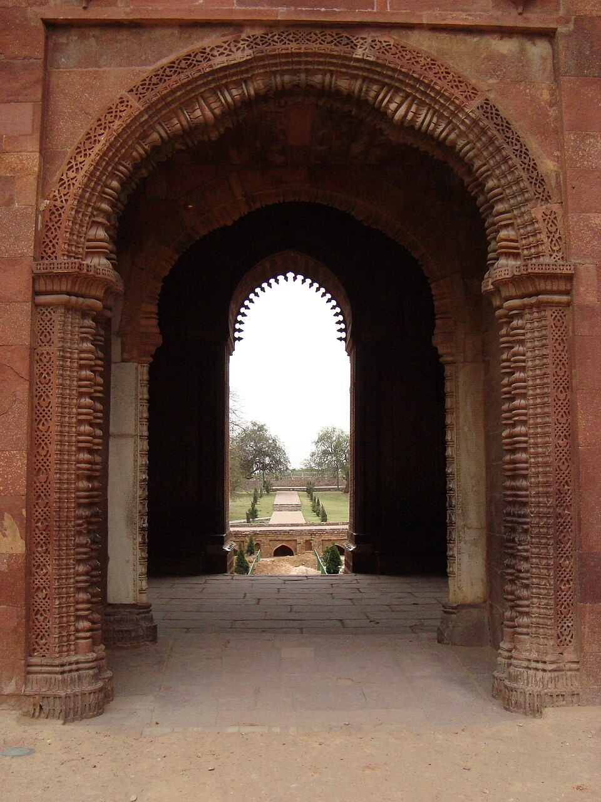
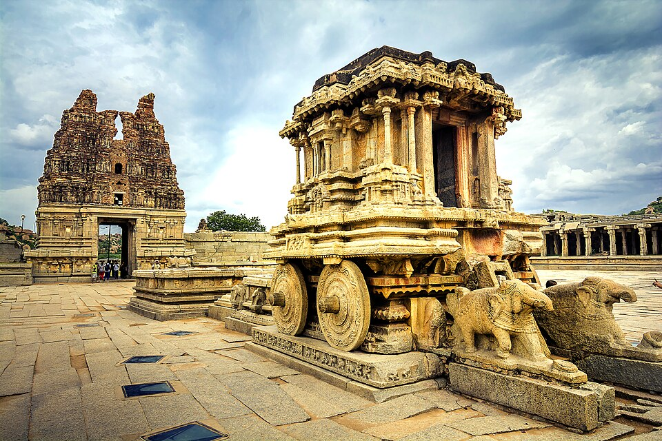
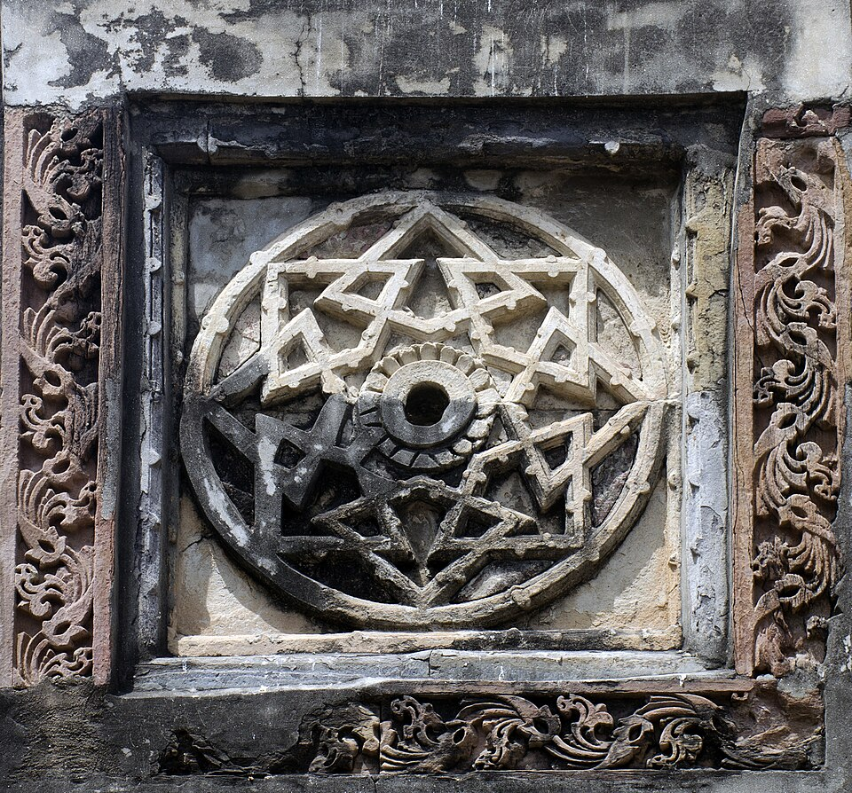
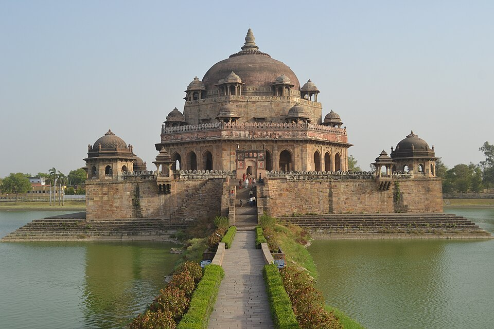
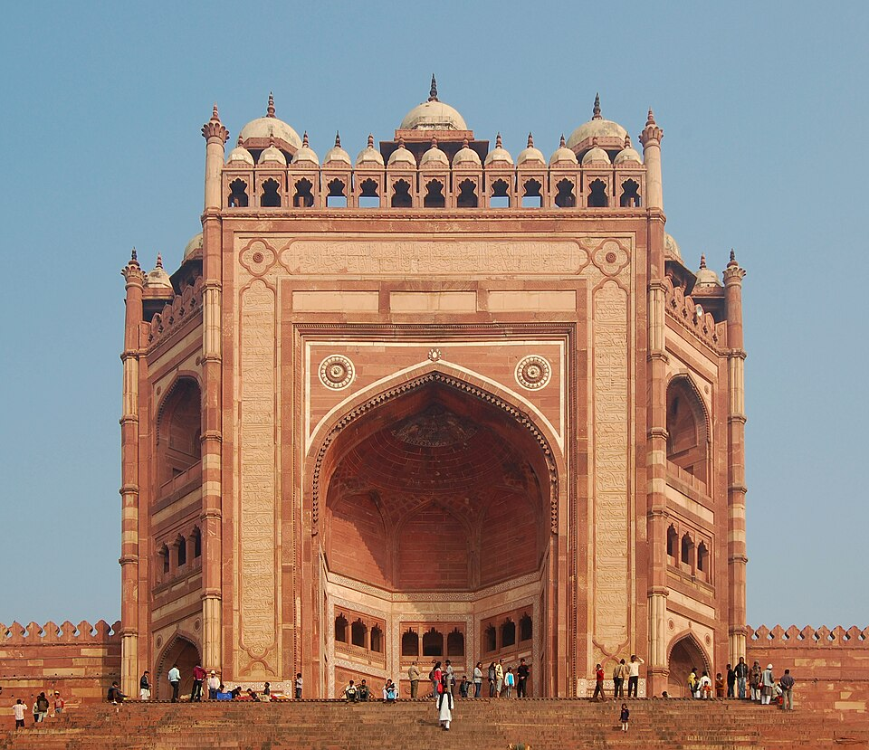

विषय-सूची
- पूर्व-मध्यकाल — त्रिपक्षीय संघर्ष एवं राजपूत राज्य
- अरब एवं तुर्क आक्रमण
- दिल्ली सल्तनत — पाँच वंश
- सल्तनत का प्रशासन एवं अर्थव्यवस्था
- विजयनगर एवं बहमनी साम्राज्य
- प्रांतीय राज्य
- भक्ति आंदोलन एवं सूफी मत
- मुगल साम्राज्य — बाबर से औरंगजेब
- मुगल प्रशासन
- मुगलकालीन अर्थव्यवस्था एवं समाज
- मराठा शक्ति
- मुगल साम्राज्य का पतन एवं स्वतंत्र राज्यों का उदय
- समेकित कालक्रम
2025 के मूल प्रश्नपत्र में मध्यकालीन इतिहास से लगभग 8 प्रश्न आए और उनमें सुमेलन, कालक्रम तथा अभिकथन–कारण का अनुपात सबसे ऊँचा रहा। इसलिए हर खंड के अंत में दी गई तालिका और तिथि-सूची को केवल पढ़ें नहीं — दोनों दिशाओं में याद करें (शासक से उपलब्धि, और उपलब्धि से शासक)। अंतिम खंड 13 की समेकित तिथि-सूची पूरे अध्याय का सार है।
1. पूर्व-मध्यकाल — त्रिपक्षीय संघर्ष एवं राजपूत राज्य
हर्षवर्धन (Harshavardhana) की मृत्यु (647 ई.) के बाद उत्तर भारत में कोई एक सर्वोपरि सत्ता नहीं रही। 8वीं शताब्दी के उत्तरार्ध तक तीन बड़ी शक्तियाँ उभरीं और तीनों का लक्ष्य एक ही नगर था — कन्नौज (Kannauj)। कन्नौज केवल एक नगर नहीं था; वह गंगा-यमुना दोआब की उपजाऊ भूमि, उत्तरापथ के व्यापार-मार्ग और हर्ष की विरासत से जुड़ी राजनीतिक प्रतिष्ठा का प्रतीक था। जिसके पास कन्नौज, वही उत्तर भारत का "सम्राट"। इसी कारण लगभग दो शताब्दियों तक चला यह संघर्ष त्रिपक्षीय संघर्ष (Tripartite Struggle) कहलाता है।
1.1 तीनों शक्तियाँ
| शक्ति | मूल क्षेत्र / राजधानी | संस्थापक | प्रमुख शासक |
|---|---|---|---|
| गुर्जर-प्रतिहार (Gurjara-Pratihara) | अवंति-जालोर; बाद में कन्नौज | नागभट्ट प्रथम | वत्सराज, नागभट्ट द्वितीय, मिहिर भोज, महेन्द्रपाल प्रथम |
| पाल (Pala) | गौड़ (बंगाल-बिहार); मुद्गगिरि/मुंगेर | गोपाल (लगभग 750 ई., निर्वाचित) | धर्मपाल, देवपाल, महीपाल प्रथम |
| राष्ट्रकूट (Rashtrakuta) | दक्कन; मान्यखेट (मालखेड) | दन्तिदुर्ग (लगभग 753 ई.) | ध्रुव, गोविन्द तृतीय, अमोघवर्ष प्रथम, कृष्ण तृतीय |
1.2 संघर्ष के चरण
- प्रथम चरण (लगभग 790 ई.): प्रतिहार शासक वत्सराज ने प्रयाग के निकट पाल शासक धर्मपाल को हराया। किंतु उसी समय राष्ट्रकूट शासक ध्रुव (धारावर्ष) उत्तर की ओर बढ़ा और गंगा-यमुना दोआब में पहले वत्सराज को, फिर धर्मपाल को पराजित किया। ध्रुव ने कन्नौज पर अधिकार नहीं जमाया — वह दक्कन लौट गया। यही राष्ट्रकूट नीति का स्थायी स्वरूप रहा: उत्तर में विजय, पर उत्तर में शासन नहीं।
- द्वितीय चरण: मैदान खाली पाकर धर्मपाल ने कन्नौज पर अधिकार कर अपने आश्रित चक्रायुध को गद्दी दी और कन्नौज में एक भव्य दरबार किया जिसमें उत्तर भारत के अनेक सामंतों ने स्वीकृति दी। इसके बाद प्रतिहार नागभट्ट द्वितीय ने चक्रायुध को हटाया और मुंगेर के निकट धर्मपाल को हराकर कन्नौज को प्रतिहारों की राजधानी बनाया। किंतु राष्ट्रकूट गोविन्द तृतीय ने पुनः उत्तर आकर नागभट्ट द्वितीय को पराजित किया।
- तृतीय चरण: राष्ट्रकूटों के लौटने पर प्रतिहार पुनः संभले। मिहिर भोज (लगभग 836–885 ई.) के अधीन प्रतिहार साम्राज्य चरम पर पहुँचा। अरब यात्री सुलेमान ने अपनी पुस्तक सिलसिलत-उत-तवारीख में प्रतिहार शासक को "जुज़्र" (गुर्जर) कहकर उसकी अश्वसेना की प्रशंसा की और उसे इस्लाम का सबसे बड़ा शत्रु बताया। भोज के उत्तराधिकारी महेन्द्रपाल प्रथम के दरबार में राजशेखर थे (काव्यमीमांसा, कर्पूरमंजरी, बालरामायण, विद्धशालभंजिका)।
- अंत: 916 ई. के आसपास राष्ट्रकूट इन्द्र तृतीय ने कन्नौज को बुरी तरह लूटा, जिससे प्रतिहार शक्ति टूट गई। 1018 ई. में महमूद गजनवी के आक्रमण के समय प्रतिहार राज्यपाल कन्नौज छोड़कर भागा और चंदेल विद्याधर तथा उसके सहयोगियों ने उसे इस "कायरता" के लिए मार डाला।
तीनों शक्तियों ने एक-दूसरे को थका दिया। कोई स्थायी विजेता नहीं निकला। 10वीं सदी के अंत तक तीनों साम्राज्य छोटे-छोटे सामंती राज्यों में बिखर गए — और ठीक उसी समय गजनी से तुर्क आक्रमण आरंभ हुए। राजनीतिक विकेन्द्रीकरण ही तुर्क विजय का सबसे बड़ा सहायक कारण बना।
- पाल बौद्ध थे — धर्मपाल ने विक्रमशिला तथा सोमपुर महाविहार की स्थापना की; नालंदा को संरक्षण दिया।
- राष्ट्रकूट कृष्ण प्रथम ने एलोरा का कैलाश मंदिर बनवाया; अमोघवर्ष प्रथम ने कन्नड़ का प्रथम ग्रंथ कविराजमार्ग लिखा।
- अरब यात्री अल-मसूदी (915–16 ई.) ने राष्ट्रकूट शासक को "बल्हरा" (वल्लभराज) कहा और उसे भारत का सबसे बड़ा राजा बताया।
- पाल शासक गोपाल का चयन निर्वाचन द्वारा हुआ — भारतीय इतिहास का एक असामान्य उदाहरण; तारानाथ इसका उल्लेख करता है।
1.3 राजपूत राज्यों का उदय एवं उनका स्वरूप
10वीं–12वीं शताब्दी में उत्तर एवं पश्चिम भारत में अनेक कुल "राजपूत" (राजपुत्र) नाम से शासक वर्ग के रूप में सामने आए। इनकी उत्पत्ति पर चार प्रमुख मत हैं:
| सिद्धांत | आधार | प्रमुख समर्थक |
|---|---|---|
| अग्निकुल सिद्धांत | चंदबरदाई के पृथ्वीराज रासो के अनुसार आबू पर्वत पर वशिष्ठ के यज्ञ-कुंड से चार कुल उत्पन्न — प्रतिहार, चौहान, परमार, चालुक्य (सोलंकी) | चंदबरदाई (काव्यगत); आधुनिक इतिहासकार इसे मिथक मानते हैं |
| विदेशी उत्पत्ति | शक, कुषाण, हूण आदि विदेशी जातियों का हिंदू समाज में समाहार | कर्नल टॉड, वी.ए. स्मिथ, डी.आर. भंडारकर |
| देशी क्षत्रिय उत्पत्ति | अभिलेखों में सूर्यवंशी/चंद्रवंशी वंशावली; गुहिलों का स्वयं को रघुवंशी कहना | सी.वी. वैद्य, गौरीशंकर हीराचंद ओझा |
| मिश्रित/प्रक्रिया सिद्धांत (आज सर्वाधिक मान्य) | "राजपूत" जन्म से अधिक एक सामाजिक-राजनीतिक प्रक्रिया — स्थानीय भूस्वामी, जनजातीय सरदार एवं विदेशी तत्व भूमि-नियंत्रण पाकर क्षत्रिय वंशावली गढ़ते गए | बी.डी. चट्टोपाध्याय, डी.सी. सरकार |
प्रमुख राजपूत वंश — सुमेलन तालिका
| वंश | क्षेत्र / राजधानी | प्रमुख शासक | पहचान-चिह्न |
|---|---|---|---|
| चाहमान (चौहान) | शाकम्भरी → अजमेर, दिल्ली | विग्रहराज चतुर्थ, पृथ्वीराज तृतीय | विग्रहराज ने हरकेलि नाटक लिखा; पृथ्वीराज तराइन में पराजित (1192) |
| चंदेल | जेजाकभुक्ति (बुंदेलखंड) — खजुराहो, कालिंजर, महोबा | यशोवर्मन, धंग, विद्याधर, परमर्दिदेव | खजुराहो के मंदिर; कालिंजर दुर्ग; आल्हा-ऊदल की गाथा |
| परमार | मालवा — धार, उज्जैन | मुंज, भोज | भोज — समरांगणसूत्रधार; धार में भोजशाला; "कविराज" |
| चालुक्य (सोलंकी) | गुजरात — अन्हिलवाड़ (पाटन) | मूलराज, भीम प्रथम, जयसिंह सिद्धराज, कुमारपाल | मोढेरा सूर्य मंदिर, दिलवाड़ा; हेमचंद्र सूरि का संरक्षण |
| गहड़वाल | कन्नौज–वाराणसी (उ.प्र.) | चंद्रदेव, गोविन्दचन्द्र, जयचंद | "तुरुष्कदंड" कर; जयचंद 1194 में चंदावर में पराजित |
| तोमर | ढिल्लिका (दिल्ली), हरियाणा | अनंगपाल | दिल्ली की स्थापना का श्रेय; बाद में चौहानों ने छीना |
| कलचुरि | त्रिपुरी (जबलपुर के निकट) | गांगेयदेव, कर्ण | गहड़वालों से संघर्ष |
| गुहिल/सिसोदिया | मेवाड़ — चित्तौड़, कुम्भलगढ़ | बप्पा रावल, हम्मीर, कुम्भा, सांगा, प्रताप | दीर्घतम प्रतिरोध-परंपरा |
| सेन | बंगाल — लखनौती/नदिया | विजयसेन, बल्लालसेन, लक्ष्मणसेन | पालों को हटाया; जयदेव का गीतगोविंद लक्ष्मणसेन के दरबार से जुड़ा |
राजपूत राज्य-व्यवस्था का स्वरूप
- सामंती ढाँचा: राजा सर्वोपरि, पर वास्तविक शक्ति वंशानुगत सामंतों (ठाकुर, राणक, महासामंत) के पास। सामंत भूमि-अनुदान के बदले सैन्य सेवा देते थे। केंद्रीय स्थायी सेना का अभाव।
- कुल-आधारित राजनीति: राज्य कुल की सामूहिक संपत्ति माना जाता था; इससे उत्तराधिकार-विवाद और आपसी युद्ध सामान्य रहे।
- दुर्ग-केन्द्रित सैन्य नीति: रणथम्भौर, चित्तौड़, कालिंजर, ग्वालियर, मंडोर जैसे दुर्ग शक्ति के केंद्र। युद्ध में हार निश्चित होने पर जौहर (स्त्रियों का आत्मदाह) एवं साका (पुरुषों का अंतिम आक्रमण)।
- युद्ध-आचार-संहिता: भागते शत्रु पर वार न करना, रात में युद्ध न करना — यह नैतिक रूप से उच्च पर सामरिक रूप से घातक सिद्ध हुआ।
- आर्थिक-सामाजिक प्रभाव: भूमि-अनुदानों की वृद्धि, नगरों एवं व्यापार का ह्रास, जाति-व्यवस्था की कठोरता — आर.एस. शर्मा इसे "भारतीय सामंतवाद" (Indian Feudalism) कहते हैं; हरबंस मुखिया इस संकल्पना पर प्रश्न उठाते हैं। यह बहस परीक्षा में अभिकथन–कारण के रूप में आती है।
पूर्व-मध्यकाल की धुरी ही आज का उत्तर प्रदेश थी। कन्नौज तीनों शक्तियों के संघर्ष का केंद्र रहा; प्रयाग के निकट वत्सराज–धर्मपाल का पहला युद्ध हुआ; गहड़वाल वंश की सत्ता कन्नौज से वाराणसी तक फैली थी और उसी ने वाराणसी को पुनः एक बड़े नगर के रूप में स्थापित किया। चंदेलों का कालिंजर दुर्ग (बाँदा जनपद) तथा महोबा (हमीरपुर-महोबा क्षेत्र) आज के उ.प्र. में हैं; आल्हा-ऊदल की लोकगाथा बुंदेलखंड की सांस्कृतिक पहचान है। इटावा, बाराबंकी, एटा क्षेत्र में गहड़वाल-कालीन ताम्रपत्र मिले हैं।
- ध्रुव और गोविन्द तृतीय दोनों राष्ट्रकूट हैं; ध्रुव ने वत्सराज को, गोविन्द तृतीय ने नागभट्ट द्वितीय को हराया — नाम-युग्म उलट कर पूछा जाता है।
- धर्मपाल (पाल) बनाम देवपाल (पाल) बनाम महीपाल — विक्रमशिला की स्थापना धर्मपाल ने की, देवपाल ने नहीं।
- सुलेमान (9वीं सदी) प्रतिहारों के विषय में, अल-मसूदी (10वीं सदी) राष्ट्रकूटों के विषय में — "बल्हरा" राष्ट्रकूट के लिए है, प्रतिहार के लिए नहीं।
- भोज दो हैं — प्रतिहार मिहिर भोज (कन्नौज) और परमार भोज (धार, मालवा, समरांगणसूत्रधार के रचयिता)।
- अग्निकुल के चार कुल — प्रतिहार, चौहान, परमार, चालुक्य। इसमें "गहड़वाल" या "चंदेल" डालकर विकल्प बनाया जाता है।
कालक्रम — खंड 1
| वर्ष (लगभग) | घटना |
|---|---|
| 750 | गोपाल द्वारा पाल वंश की स्थापना (निर्वाचन) |
| 753 | दन्तिदुर्ग द्वारा राष्ट्रकूट वंश की स्थापना (चालुक्य कीर्तिवर्मन द्वितीय को हटाकर) |
| 790 | वत्सराज × धर्मपाल (प्रयाग के निकट); तत्पश्चात् ध्रुव द्वारा दोनों की पराजय |
| 800–815 | गोविन्द तृतीय का उत्तर भारत अभियान; नागभट्ट द्वितीय पराजित |
| 836–885 | मिहिर भोज का शासन — प्रतिहार शक्ति का चरम |
| 916 | इन्द्र तृतीय (राष्ट्रकूट) द्वारा कन्नौज का विध्वंस |
| 1018 | महमूद गजनवी का कन्नौज आक्रमण; राज्यपाल का पलायन एवं वध |
प्र.1 निम्नलिखित स्थापत्य-कृतियों पर विचार कीजिए तथा इन्हें उनके निर्माण के सही कालक्रमानुसार क्रम में व्यवस्थित कीजिए:
1. कोणार्क का सूर्य मंदिर
2. साँची के महास्तूप का मूल निर्माण
3. खजुराहो के मंदिर
4. एलोरा का कैलास मंदिर
नीचे दिए गए कूट से सही उत्तर चुनिए:
उत्तर एवं व्याख्या देखें
प्र.2 नीचे दो कथन दिए गए हैं, जिनमें से एक को अभिकथन (A) तथा दूसरे को कारण (R) कहा गया है।
अभिकथन (A): एलोरा का कैलास मंदिर विश्व का विशालतम एकाश्म (monolithic) शैलकृत मंदिर माना जाता है।
कारण (R): इसे ऊपर से नीचे की ओर एक ही विशाल चट्टान को तराशकर राष्ट्रकूट शासक कृष्ण प्रथम के काल में उत्कीर्ण किया गया था।
नीचे दिए गए कूट से सही उत्तर चुनिए:
उत्तर एवं व्याख्या देखें
प्र.3 तंत्रयान बौद्ध अध्ययन के लिए प्रसिद्ध विक्रमशिला महाविहार की स्थापना किस शासक ने करवाई थी?
उत्तर एवं व्याख्या देखें
2. अरब एवं तुर्क आक्रमण
2.1 अरब आक्रमण — मुहम्मद बिन कासिम (712 ई.)
सिंध पर अरब आक्रमण का तात्कालिक कारण था — देवल (Debal) बंदरगाह के निकट समुद्री लुटेरों द्वारा उन जहाजों का अपहरण जो श्रीलंका के राजा की ओर से इराक के गवर्नर हज्जाज बिन यूसुफ के लिए उपहार ले जा रहे थे। सिंध के शासक दाहिर ने क्षतिपूर्ति देने से इनकार किया। हज्जाज ने अपने भतीजे एवं दामाद मुहम्मद बिन कासिम को भेजा। 712 ई. में रावर के युद्ध में दाहिर मारा गया; देवल, नेरून, ब्राह्मणाबाद, अरोड़ एवं मुल्तान पर अधिकार हुआ।
- स्रोत: चचनामा (मूलतः अरबी; 13वीं सदी में अली कूफी द्वारा फ़ारसी अनुवाद) — सिंध विजय का प्रमुख विवरण।
- नीति: हिंदुओं-बौद्धों को "ज़िम्मी" (संरक्षित प्रजा) का दर्जा दिया गया, जज़िया लगाया गया, किंतु धार्मिक स्वतंत्रता एवं स्थानीय ब्राह्मण अधिकारियों की व्यवस्था बनी रही।
- महत्व: राजनीतिक दृष्टि से सीमित। लेन-पूल के शब्दों में यह "भारत के इतिहास की एक घटना मात्र थी, और वह भी निष्फल"। पर सांस्कृतिक आदान-प्रदान स्थायी रहा — ब्रह्मगुप्त का ब्रह्मस्फुटसिद्धांत अरबी में सिन्दहिन्द तथा खण्डखाद्यक अर्कन्द बना; भारतीय अंक-पद्धति (दशमलव, शून्य) अरब के माध्यम से यूरोप पहुँची; पंचतंत्र का अरबी रूप कलीला व दिमना बना।
2.2 महमूद गजनवी (शासन 998–1030 ई.)
गजनी के यामिनी/गजनवी वंश का शासक। उसने 1000 से 1027 ई. के बीच लगभग 17 बार भारत पर आक्रमण किया। उसका उद्देश्य साम्राज्य-विस्तार नहीं, धन-लूट था — जिससे वह मध्य एशिया में अपनी सेना और गजनी नगर को समृद्ध कर सके; मूर्ति-भंजन से उसे "बुतशिकन" एवं खलीफा से मान्यता भी मिली।
| वर्ष | आक्रमण का लक्ष्य | पराजित शासक / टिप्पणी |
|---|---|---|
| 1001 | वैहिंद (पेशावर के निकट) | हिन्दूशाही जयपाल — पराजय के बाद आत्मदाह |
| 1008–09 | वैहिंद का दूसरा युद्ध | आनंदपाल के नेतृत्व में हिंदू राजाओं का संघ पराजित |
| 1014 | थानेश्वर | चक्रस्वामिन की मूर्ति गजनी ले जाई गई |
| 1018 | मथुरा एवं कन्नौज (उ.प्र.) | प्रतिहार राज्यपाल भाग गया; मथुरा के मंदिरों की अपार लूट |
| 1019 | कालिंजर क्षेत्र | चंदेल विद्याधर से सामना |
| 1025–26 | सोमनाथ (काठियावाड़) | चालुक्य भीम प्रथम; सर्वाधिक कुख्यात एवं समृद्ध लूट |
| 1027 | सिंधु के जाट | अंतिम आक्रमण |
- महमूद ने भारत में स्थायी रूप से केवल पंजाब एवं मुल्तान को गजनी साम्राज्य में मिलाया (लाहौर केंद्र)।
- उसके साथ आया अलबरूनी — किताब-उल-हिन्द (तहकीक-ए-हिन्द) — भारतीय समाज, विज्ञान एवं दर्शन का प्रथम गंभीर विदेशी अध्ययन।
- दरबार में फिरदौसी (शाहनामा) एवं उत्बी (किताब-उल-यामिनी/तारीख-ए-यामिनी)।
- महमूद को खलीफा अल-कादिर से "यमीन-उद-दौला" एवं "अमीन-उल-मिल्लत" की उपाधियाँ मिलीं।
2.3 मुहम्मद गोरी (मुइज़ुद्दीन मुहम्मद बिन साम)
गोर (अफगानिस्तान) के शंसबानी/गोरी वंश का शासक; भाई गयासुद्दीन के अधीन गजनी का शासक। महमूद से भिन्न, गोरी का उद्देश्य स्थायी साम्राज्य की स्थापना था — और यही भारत में तुर्की राज्य की नींव बना।
| वर्ष | युद्ध/अभियान | पक्ष एवं परिणाम |
|---|---|---|
| 1175 | मुल्तान एवं उच्छ | कर्माथियों से छीना — भारत में प्रथम सफलता |
| 1178 | कयादरा/आबू (गुजरात) | चालुक्य (सोलंकी) शासक भीम द्वितीय से पराजय — गोरी की भारत में पहली हार |
| 1179–86 | पेशावर, सियालकोट, लाहौर | गजनवी शासक खुसरो मलिक को हटाकर पंजाब पर अधिकार |
| 1191 — तराइन प्रथम | तराइन (थानेसर के निकट, हरियाणा) | पृथ्वीराज चौहान तृतीय विजयी; गोरी घायल होकर भागा |
| 1192 — तराइन द्वितीय | वही स्थल | गोरी विजयी; पृथ्वीराज बंदी बनाकर मारा गया — भारतीय इतिहास का निर्णायक मोड़ |
| 1194 — चंदावर | चंदावर (फिरोजाबाद, उ.प्र.) — यमुना तट पर, आगरा के निकट | गहड़वाल जयचंद पराजित एवं मारा गया; गंगा घाटी तुर्कों के लिए खुल गई |
| 1206 | दमयक (झेलम के निकट) | गोरी की हत्या; भारत का उत्तरदायित्व दास सेनापतियों पर |
गोरी के सेनापति
- कुतुबुद्दीन ऐबक — दिल्ली, अजमेर, मेरठ, कोल (अलीगढ़), कालिंजर पर अभियान; गोरी की मृत्यु के बाद भारत में तुर्की सत्ता का उत्तराधिकारी।
- बख्तियार खलजी — बिहार में ओदंतपुरी एवं नालंदा के विहारों का विध्वंस; लगभग 1204 ई. में सेन शासक लक्ष्मणसेन की राजधानी नदिया पर आकस्मिक आक्रमण कर बंगाल जीता; तिब्बत अभियान विफल रहा और उसकी मृत्यु हुई।
- यलदौज़, कुबाचा — गजनी एवं सिंध/मुल्तान में प्रतिद्वंद्वी।
- राजनीतिक विघटन — कोई संयुक्त मोर्चा नहीं; पृथ्वीराज को जयचंद का सहयोग नहीं मिला।
- सैन्य पिछड़ापन — भारी हाथी-सेना एवं धीमी पैदल पंक्ति बनाम तुर्कों की तीव्र घुड़सवार तीरंदाज़ी (mounted archers), रकाब (stirrup), नालयुक्त घोड़े, "फ़ौज-ए-कर्रार" (आरक्षित दल) की रणनीति।
- रक्षात्मक मानसिकता — सीमांत पर आगे बढ़कर प्रहार करने की नीति का अभाव; आक्रांता को बार-बार लौटने का अवसर।
- सूचना-तंत्र का अभाव — तुर्कों के पास व्यवस्थित गुप्तचर एवं डाक व्यवस्था थी।
- सामाजिक कारक — जाति-आधारित सीमित सैनिक भर्ती; सामंती दस्ते जो केंद्रीय अनुशासन से बाहर थे।
चंदावर का युद्ध (1194) आज के फिरोजाबाद जनपद में यमुना तट पर लड़ा गया — तराइन (हरियाणा) से भी अधिक यह वह युद्ध था जिसने गंगा-यमुना दोआब पर तुर्की अधिकार पक्का किया। इसी अभियान में असनी (फतेहपुर) का कोष लूटा गया और वाराणसी पर आक्रमण हुआ। 1018 में महमूद ने मथुरा एवं कन्नौज को लूटा था। कुतुबुद्दीन ऐबक ने कोल (अलीगढ़) एवं मेरठ पर अधिकार किया। इस प्रकार तुर्क विजय का निर्णायक रंगमंच उत्तर प्रदेश ही रहा।
- मुहम्मद बिन कासिम (712, सिंध) ≠ मुहम्मद गोरी (1192, तराइन) — 480 वर्ष का अंतर; विकल्पों में अदला-बदली होती है।
- तराइन हरियाणा में (थानेसर/करनाल के निकट), चंदावर उत्तर प्रदेश में (फिरोजाबाद) — "स्थल↔राज्य" सुमेलन में यही पूछा जाता है।
- अलबरूनी महमूद गजनवी के साथ आया; इब्न बतूता मुहम्मद बिन तुगलक के समय; अब्दुर रज्जाक विजयनगर (देवराय द्वितीय) — तीनों को मिलाया जाता है।
- गोरी की प्रथम पराजय तराइन (1191) में नहीं, गुजरात (1178) में भीम द्वितीय के हाथों हुई थी।
- बख्तियार खलजी ने बंगाल जीता — खलजी वंश (1290) से इसका कोई संबंध नहीं।
प्र.1 निम्नलिखित घटनाओं पर विचार कीजिए तथा इन्हें सही कालक्रमानुसार क्रम में व्यवस्थित कीजिए:
1. महमूद गजनवी का सोमनाथ पर आक्रमण
2. चंदावर का युद्ध
3. मुहम्मद बिन कासिम द्वारा सिंध विजय
4. तराइन का द्वितीय युद्ध
नीचे दिए गए कूट से सही उत्तर चुनिए:
उत्तर एवं व्याख्या देखें
प्र.2 'भारत सेवक समाज (Servants of India Society)' के संदर्भ में, निम्नलिखित में से कौन-सा/से कथन सही है/हैं?
1. इसकी स्थापना 1905 में गोपाल कृष्ण गोखले ने पूना में की थी।
2. इसका उद्देश्य राष्ट्रीय सेवा के लिए 'मिशनरी भावना' से प्रशिक्षित पूर्णकालिक कार्यकर्ता तैयार करना था।
नीचे दिए गए कूट से सही उत्तर चुनिए:
उत्तर एवं व्याख्या देखें
प्र.3 नीचे दो कथन दिए गए हैं, जिनमें से एक को अभिकथन (A) तथा दूसरे को कारण (R) कहा गया है।
अभिकथन (A): लॉर्ड मेयो एकमात्र वायसराय थे जिनकी पद पर रहते हुए हत्या हुई।
कारण (R): 1872 में अंडमान के दंड-बस्ती (पोर्ट ब्लेयर) के निरीक्षण-दौरे पर एक बंदी शेर अली ने उन पर प्राणघातक आक्रमण किया था।
नीचे दिए गए कूट से सही उत्तर चुनिए:
उत्तर एवं व्याख्या देखें
3. दिल्ली सल्तनत — पाँच वंश (1206–1526)
| वंश | काल | संस्थापक | अंतिम शासक |
|---|---|---|---|
| गुलाम / इल्बरी / मामलूक | 1206–1290 | कुतुबुद्दीन ऐबक | शमसुद्दीन कयूमर्स |
| खलजी | 1290–1320 | जलालुद्दीन फ़िरोज़ खलजी | ख़ुसरो खाँ (हड़पने वाला) |
| तुगलक | 1320–1414 | गयासुद्दीन तुगलक | नासिरुद्दीन महमूद शाह |
| सैयद | 1414–1451 | खिज्र खाँ | आलम शाह |
| लोदी | 1451–1526 | बहलोल लोदी | इब्राहीम लोदी |
3.1 गुलाम / इल्बरी वंश (1206–1290)
"गुलाम वंश" नाम भ्रामक है — केवल ऐबक, इल्तुतमिश और बलबन ही दास रहे थे, और तीनों ने सुल्तान बनने से पूर्व दासता से मुक्ति पा ली थी। अधिकांश शासक इल्बरी तुर्क कबीले के थे, इसलिए इसे इल्बरी वंश कहना अधिक उचित है।

कुतुबुद्दीन ऐबक (1206–1210)
- गोरी का दास एवं सेनापति; 1206 में लाहौर में राज्याभिषेक। राजधानी लाहौर रखी, दिल्ली नहीं।
- उदारता के कारण "लाखबख्श" कहलाया (मिन्हाज-उस-सिराज)।
- निर्माण: दिल्ली में कुव्वत-उल-इस्लाम मस्जिद, अजमेर में अढ़ाई दिन का झोंपड़ा; कुतुबमीनार का आरंभ — जो सूफी संत ख्वाजा कुतुबुद्दीन बख्तियार काकी को समर्पित था।
- अपने नाम का सिक्का नहीं चलाया, न खुतबा पढ़वाया — उसकी स्थिति "सुल्तान" से कम, "मलिक/सिपहसालार" अधिक थी।
- 1210 में लाहौर में चौगान (पोलो) खेलते समय घोड़े से गिरकर मृत्यु। संरक्षण: हसन निज़ामी (ताज-उल-मआसिर), फख्र-ए-मुदब्बिर (आदाब-उल-हर्ब)।
इल्तुतमिश (1210–1236) — सल्तनत का वास्तविक संस्थापक
- ऐबक का दास एवं दामाद; बदायूँ (उ.प्र.) का इक्तादार रहा। आरामशाह को हटाकर सत्ता ली और राजधानी दिल्ली स्थानांतरित की।
- इक्ता व्यवस्था को व्यवस्थित रूप दिया — तुर्की अमीरों को नकद वेतन के स्थान पर राजस्व-क्षेत्र दिए।
- तुर्कान-ए-चहलगानी (चालीस तुर्की अमीरों का दल) का गठन — जो आगे चलकर सुल्तानों के लिए ही चुनौती बना।
- मुद्रा: शुद्ध अरबी-इस्लामी सिक्के — चाँदी का टंका (लगभग 175 ग्रेन) एवं ताँबे का जीतल। यही सल्तनत की मानक मुद्रा बनी।
- 1229 ई. में बगदाद के अब्बासी खलीफा अल-मुस्तनसिर से मंसूर (खिलअत/अधिकार-पत्र) प्राप्त — इससे दिल्ली सल्तनत को इस्लामी विश्व में वैध संप्रभु राज्य की मान्यता मिली। उपाधि "नासिर अमीर-उल-मोमिनीन"।
- चंगेज खाँ का संकट (1221): ख्वारिज्म शाह के पुत्र जलालुद्दीन मंगबर्नी को शरण देने से इनकार कर इल्तुतमिश ने दिल्ली को मंगोल आक्रमण से बचा लिया — यह उसकी सबसे बड़ी कूटनीतिक सफलता मानी जाती है।
- अभियान: रणथम्भौर, मंडोर, ग्वालियर (1232), मालवा — भिलसा एवं उज्जैन (1234–35); बंगाल एवं बिहार की पुनर्विजय।
- कुतुबमीनार पूर्ण किया; दिल्ली में हौज-ए-शम्सी। उत्तराधिकारी के रूप में पुत्री रजिया को नामित किया — मध्यकालीन इस्लामी परंपरा में अभूतपूर्व।
रजिया (1236–1240)
- दिल्ली की एकमात्र महिला शासक। पर्दा त्यागकर कबा एवं कुलाह (पुरुष-वेश) धारण किया, दरबार में खुले मुख आई, स्वयं सेना का नेतृत्व किया।
- तुर्की एकाधिकार तोड़ने के लिए अतुर्कों को पद दिए — अबीसीनियाई जमालुद्दीन याकूत को अमीर-ए-आखुर (अश्वशाला अध्यक्ष) बनाया — इसी से चहलगानी नाराज़ हुए।
- भटिंडा के इक्तादार अल्तूनिया के विद्रोह में बंदी; बाद में उसी से विवाह; 1240 में कैथल के निकट दोनों मारे गए।
- मिन्हाज-उस-सिराज का प्रसिद्ध वाक्य: वह एक महान शासक थी, "पर वह स्त्री थी — और पुरुषों के समाज में इन गुणों का कोई मूल्य न था।"
गयासुद्दीन बलबन (1266–1287)
- इल्बरी तुर्क; दास से नाइब (नासिरुद्दीन महमूद के अधीन, 1246–66) और फिर सुल्तान। नासिरुद्दीन महमूद के लिए ही मिन्हाज-उस-सिराज ने तबकात-ए-नासिरी लिखी।
- राजत्व सिद्धांत: सुल्तान "नियाबत-ए-खुदाई" (ईश्वर का प्रतिनिधि) एवं "ज़िल्ल-ए-इलाही" (ईश्वर की छाया) है। ईरानी परंपरा से सिजदा (साष्टांग प्रणाम) एवं पाबोस (चरण-चुंबन) अनिवार्य किए; नौरोज़ उत्सव आरंभ किया। दरबार में हँसी-मजाक, शराब वर्जित।
- "रक्त एवं लौह" (blood and iron) नीति: चहलगानी का दमन, विरोधियों का निर्मम अंत। "राजत्व किसी रिश्तेदारी को नहीं जानता" — उसका प्रसिद्ध कथन।
- दीवान-ए-अर्ज (सैन्य विभाग) का स्वतंत्र गठन; वृद्ध सैनिकों को पेंशन; बरीद (गुप्तचर) व्यवस्था को नया रूप।
- दोआब एवं कटेहर (रुहेलखंड, उ.प्र.) के विद्रोहों तथा मेवातियों का कठोर दमन; बंगाल में तुगरिल खाँ का विद्रोह कुचला।
- मंगोलों से रक्षा हेतु सीमांत सुदृढ़ किया; 1285 में पुत्र मुहम्मद ("खान-ए-शहीद") मुल्तान के निकट मंगोलों से लड़ते हुए मारा गया।
- दरबार में अमीर खुसरो एवं अमीर हसन सिजज़ी।
3.2 खलजी वंश (1290–1320)
खलजी तुर्क-अफगान सीमा-क्षेत्र से आए थे, "शुद्ध" इल्बरी तुर्क नहीं। इनका सत्ता में आना तुर्की नस्लीय एकाधिकार का अंत था — इसे इतिहासकार "खलजी क्रांति" कहते हैं।
जलालुद्दीन फ़िरोज़ खलजी (1290–1296)
- लगभग 70 वर्ष की आयु में गद्दी; उदार एवं सहिष्णु नीति — मलिक छज्जू के विद्रोहियों तक को क्षमा किया। दिल्ली की तुर्की जनता ने आरंभ में उसे स्वीकार नहीं किया, अतः किलोखरी से शासन किया।
- भतीजे एवं दामाद अलाउद्दीन ने 1296 में देवगिरि (यादव रामचंद्र) पर आक्रमण कर अपार धन लूटा — यह दक्षिण भारत पर प्रथम तुर्क आक्रमण था।
- उसी धन के बहाने बुलाकर अलाउद्दीन ने 1296 में कड़ा (आज का कौशाम्बी/प्रयागराज क्षेत्र, उ.प्र.) में गंगा तट पर जलालुद्दीन की हत्या कर दी।
अलाउद्दीन खलजी (1296–1316) — सल्तनत का शिखर
साम्राज्य-विस्तार:
| वर्ष | विजय | पराजित शासक |
|---|---|---|
| 1299 | गुजरात | वाघेला कर्ण; यहीं से मलिक काफूर प्राप्त हुआ |
| 1301 | रणथम्भौर | चौहान हम्मीरदेव |
| 1303 | चित्तौड़ | गुहिल रतन सिंह (पद्मिनी की कथा जायसी के पद्मावत, 1540 से आती है — समकालीन स्रोत नहीं) |
| 1305 | मालवा | परमार महलकदेव |
| 1307–08 | देवगिरि (दूसरी बार) | यादव रामचंद्र — "रायरायान" उपाधि देकर सामंत बनाया |
| 1309–10 | वारंगल | काकतीय प्रतापरुद्र द्वितीय — विशाल क्षतिपूर्ति |
| 1310–11 | द्वारसमुद्र | होयसल वीर बल्लाल तृतीय |
| 1311 | मदुरै (मा'बर) | पांड्य राज्य — मलिक काफूर रामेश्वरम् तक पहुँचा |
| 1311 | जालोर | चौहान कान्हड़देव |
दक्षिण नीति की विशेषता: अलाउद्दीन ने दक्षिणी राज्यों का विलय नहीं किया — उन्हें वार्षिक कर देने वाले करद राज्य बनाया। यही नीति मुहम्मद बिन तुगलक के विलय-प्रयोग से भिन्न थी।
मंगोल आक्रमणों का प्रतिरोध: 1297–98, 1299 (कुतलुग ख्वाजा), 1303 (तर्गी — सबसे खतरनाक), 1305 (अली बेग), 1306 — सभी विफल। उसने सीरी को किलेबंद कर नई राजधानी बनाया, सीमांत दुर्ग सुदृढ़ किए और मंगोल बंदियों का नरसंहार किया। उपाधि "सिकंदर-ए-सानी" (द्वितीय सिकंदर) सिक्कों पर अंकित करवाई।
चार अध्यादेश (बरनी के अनुसार) — विद्रोह रोकने हेतु:
- दान में दी गई भूमि (इनाम, मिल्क, वक्फ) जब्त कर खालसा में मिला दी गई।
- गुप्तचर व्यवस्था (बरीद एवं मुनहियान) का सघन विस्तार — अमीरों की निजी बातचीत तक सुल्तान तक पहुँचती थी।
- मद्य-निषेध तथा नशीले पदार्थों पर प्रतिबंध।
- अमीरों के आपसी भोज, वैवाहिक संबंध एवं मेल-जोल पर सुल्तान की अनुमति अनिवार्य।
राजस्व सुधार: भूमि की माप (मसाहत) के आधार पर बिस्वा इकाई में लगान; खराज उपज का 50% — सल्तनत काल का उच्चतम; साथ में घरी (गृह-कर) एवं चराई (पशु-कर)। बिचौलियों — खुत, मुकद्दम, चौधरी — की कर-मुक्ति समाप्त कर उन्हें भी सामान्य किसानों के बराबर कर देने को बाध्य किया। बकाया वसूली हेतु दीवान-ए-मुस्तख़राज बनाया।
बाजार नियंत्रण (यह अध्याय का सर्वाधिक पूछा जाने वाला अंश है) — खंड 4.4 में विस्तार से।
सैन्य सुधार: दिल्ली सल्तनत में सर्वप्रथम स्थायी सेना को नकद वेतन दिया; दाग (घोड़ों पर राजकीय मुहर) एवं चेहरा (सैनिक का हुलिया-विवरण) की व्यवस्था लागू की, जिससे एक ही घोड़ा-सैनिक बार-बार गिनती में न आ सके।
बाद के खलजी: 1316 में अलाउद्दीन की मृत्यु; मलिक काफूर ने कुछ समय सत्ता संभाली और मारा गया। कुतुबुद्दीन मुबारक शाह खलजी (1316–1320) ने अलाउद्दीन के सभी नियंत्रण हटा दिए और स्वयं को "खलीफा" घोषित किया — दिल्ली का एकमात्र सुल्तान जिसने यह किया। उसकी हत्या उसके ही प्रिय ख़ुसरो खाँ ने की, जिसे 1320 में दीपालपुर के गवर्नर गाज़ी मलिक ने हराकर तुगलक वंश की नींव रखी।
3.3 तुगलक वंश (1320–1414)
गयासुद्दीन तुगलक (1320–1325)
- पूर्व नाम गाज़ी मलिक; दीपालपुर का वार्डन ऑफ द मार्चेज — मंगोलों के विरुद्ध अनेक सफलताएँ।
- तुगलकाबाद नगर एवं दुर्ग का निर्माण। निज़ामुद्दीन औलिया से मतभेद की प्रसिद्ध किंवदंती ("हुनूज़ दिल्ली दूर अस्त")।
- उदार राजस्व नीति — माँग उपज के 1/10 से 1/11 के बीच; एक वर्ष में वृद्धि 1/10 से अधिक नहीं; सिंचाई हेतु नहरें; कृषि-विस्तार को प्रोत्साहन।
- डाक व्यवस्था को व्यवस्थित किया; वारंगल एवं बंगाल पर सफल अभियान।
- 1325 में अफगानपुर (दिल्ली के निकट) में स्वागत-मंडप गिरने से मृत्यु; इब्न बतूता इसमें राजकुमार जूना खाँ का हाथ होने की ओर संकेत करता है (विवादित)।
मुहम्मद बिन तुगलक (1325–1351) — "विरोधाभासों का मिश्रण"
जूना खाँ के नाम से प्रसिद्ध; खगोल, गणित, चिकित्सा, दर्शन एवं फ़ारसी साहित्य का ज्ञाता — फिर भी उसके सारे प्रयोग असफल रहे। बरनी ने उसे "विरोधी गुणों का मिश्रण" कहा।
| प्रयोग | वर्ष | उद्देश्य | विफलता का कारण |
|---|---|---|---|
| दोआब में कर-वृद्धि | लगभग 1326–27 | सर्वाधिक उपजाऊ क्षेत्र से अधिक आय | ठीक अकाल के वर्षों में लागू; किसान गाँव छोड़कर भागे, व्यापक विद्रोह |
| राजधानी का देवगिरि (दौलताबाद) स्थानांतरण | 1326–27 | दक्षिण पर नियंत्रण; मंगोल-सुरक्षित केंद्र | दूरी, मार्ग में मृत्यु, जल-संकट; लगभग 1335 में दिल्ली वापसी |
| सांकेतिक मुद्रा (token currency) | 1329–30 से लगभग 1332 | चाँदी की कमी; चीन (काऊ) एवं ईरान (कैखातू) का अनुकरण | ताँबे/पीतल के सिक्कों की टकसाल पर राज्य का एकाधिकार नहीं था — घर-घर जाली सिक्के ढले; सभी वापस लेकर चाँदी में बदलने पड़े |
| खुरासान–इराक अभियान | लगभग 1329 | मध्य एशिया में विस्तार | 3,70,000 की सेना एक वर्ष वेतन लेकर बिना युद्ध भंग कर दी गई |
| कराचिल अभियान | लगभग 1329–30 | कुमाऊँ-गढ़वाल के हिमालयी क्षेत्र पर नियंत्रण | वर्षा, रोग एवं पहाड़ी युद्ध — सेना लगभग नष्ट |
- दीवान-ए-कोही (कृषि विभाग, लगभग 1337–38) — बंजर भूमि को कृषि-योग्य बनाने हेतु; किसानों को सोंधार/तकावी ऋण। प्रयोग तीन वर्ष चला और विफल रहा (भ्रष्टाचार एवं अनुपयुक्त भूमि-चयन)।
- अमीर-ए-सदा (सौ गाँवों के सैन्य-प्रशासनिक अधिकारी) की नियुक्ति — गुजरात एवं दक्कन में इन्हीं ने विद्रोह कर बहमनी राज्य की नींव रखी।
- साम्राज्य का विघटन: बंगाल स्वतंत्र (1338), मा'बर (1335), विजयनगर की स्थापना (1336), बहमनी की स्थापना (1347)।
- इब्न बतूता 1333 में आया; सुल्तान ने उसे दिल्ली का काज़ी नियुक्त किया और 1342 में चीन का राजदूत बनाकर भेजा। उसका यात्रा-वृत्तांत रिहला (अरबी में) तुगलककालीन भारत का सबसे जीवंत चित्र है।
- 1351 में सिंध में विद्रोही तगी का पीछा करते हुए थट्टा के निकट मृत्यु। बरनी का प्रसिद्ध वाक्य: "सुल्तान अपनी प्रजा से और प्रजा अपने सुल्तान से मुक्त हो गई।"
फ़िरोज़ शाह तुगलक (1351–1388)
- उलेमा एवं अमीरों के साथ समझौते की नीति — इक्ता एवं सैन्य पद वंशानुगत कर दिए; इससे तत्काल स्थायित्व मिला पर दीर्घकाल में सेना एवं प्रशासन की गुणवत्ता गिरी।
- कर व्यवस्था: केवल शरीअत-सम्मत चार कर — खराज (भू-राजस्व), ज़कात (मुसलमानों पर 2.5%), जज़िया एवं खम्स (लूट/खान का पाँचवाँ भाग)। जज़िया को पहली बार एक पृथक कर के रूप में लगाया और ब्राह्मणों पर भी लागू किया — पहले वे प्रायः मुक्त थे। सिंचाई के लिए हक-ए-शर्ब (उपज का 10%) लिया।
- ख्वाजा हिसामुद्दीन से 6 वर्ष में राज्य का राजस्व-सर्वेक्षण करवाकर जमा 6 करोड़ 75 लाख टंका नियत की, जो उसके पूरे शासनकाल में अपरिवर्तित रही।
- नए विभाग: दीवान-ए-खैरात (दान/निर्धन कन्याओं का विवाह), दीवान-ए-बंदगान (दास विभाग — लगभग 1,80,000 दास), दार-उल-शफा (निःशुल्क चिकित्सालय), बेरोजगारों के लिए रोजगार कार्यालय।
- अंग-भंग जैसी क्रूर दंड-विधियाँ समाप्त कीं।
- नगर-निर्माण: फ़िरोज़ाबाद (फ़िरोज़ शाह कोटला, दिल्ली), हिसार, फ़तेहाबाद, फ़िरोज़पुर तथा जौनपुर (1359) — जो अपने चचेरे भाई मुहम्मद बिन तुगलक (जूना खाँ) की स्मृति में बसाया गया।
- नहरें: यमुना से हिसार, सतलज से घग्घर आदि — "नहरों का जनक"। 1200 से अधिक बाग लगवाए।
- टोपरा (हरियाणा) एवं मेरठ (उ.प्र.) के अशोक स्तंभ दिल्ली लाकर स्थापित किए — पुरातात्विक दृष्टि से अत्यंत महत्वपूर्ण कार्य।
- आत्मकथा फुतूहात-ए-फ़िरोज़शाही; दरबारी इतिहासकार शम्स सिराज अफीफ (तारीख-ए-फ़िरोज़शाही) एवं ज़ियाउद्दीन बरनी (उसी नाम का पृथक ग्रंथ)।
- बंगाल के दो अभियान असफल; नगरकोट एवं थट्टा पर सफलता।
तुगलक वंश का अंत एवं तैमूर का आक्रमण (1398–99)
1388 के बाद उत्तराधिकार-संघर्ष से साम्राज्य बिखरा। 1398 में समरकंद के तैमूर ने नासिरुद्दीन महमूद शाह के समय आक्रमण किया, दिल्ली में भीषण नरसंहार एवं लूट की और लौटते समय खिज्र खाँ को मुल्तान-लाहौर का शासक नियुक्त कर गया — यही आगे सैयद वंश का संस्थापक बना।
3.4 सैयद वंश (1414–1451)
- खिज्र खाँ (1414–1421): स्वयं को पैगंबर के वंश से जोड़ा (इसलिए "सैयद")। कभी सुल्तान की उपाधि नहीं ली — स्वयं को "रैयत-ए-आला" कहा, तैमूर के पुत्र शाहरुख के नाम का खुतबा पढ़वाया और उसे कर भेजा।
- मुबारक शाह (1421–1434): सबसे योग्य; इसी के काल में याह्या बिन अहमद सरहिंदी ने तारीख-ए-मुबारकशाही लिखी — 15वीं सदी का प्रमुख स्रोत।
- मुहम्मद शाह (1434–1445) एवं आलम शाह (1445–1451) — आलम शाह ने दिल्ली छोड़कर बदायूँ (उ.प्र.) में निवास किया और सत्ता बहलोल लोदी को सौंप दी। इसी काल की कहावत — "शाह का राज्य दिल्ली से पालम तक"।
3.5 लोदी वंश (1451–1526) — प्रथम अफगान वंश
बहलोल लोदी (1451–1489)
- सरहिंद का इक्तादार; अफगान कबीलाई परंपरा के अनुसार स्वयं को "समकक्षों में प्रथम" माना — अमीरों के साथ कालीन पर बैठता था, सिंहासन पर नहीं।
- 1479 में जौनपुर की शर्की सल्तनत पर विजय — हुसैन शाह शर्की को भगाया। यही उसकी सबसे बड़ी उपलब्धि है।
- ताँबे का "बहलोली सिक्का" चलाया, जो अकबर के काल तक उत्तर भारत में प्रचलित रहा।
सिकंदर लोदी (1489–1517) — लोदी वंश का श्रेष्ठतम शासक
- 1504 में आगरा नगर की स्थापना की और 1506 में राजधानी दिल्ली से आगरा स्थानांतरित की — मालवा एवं राजपूताना पर नियंत्रण हेतु।
- भूमि माप के लिए गज़-ए-सिकंदरी (32 अंगुल का गज़) प्रचलित किया — यह अकबर के काल तक चला।
- अनाज से चुंगी (औक्ट्रॉय) हटाई; अमीरों के लेखा-जोखा की कड़ी जाँच की; मूल्य-नियंत्रण का प्रयास किया।
- स्वयं "गुलरुखी" उपनाम से फ़ारसी कविता लिखता था; संगीत एवं विद्या का संरक्षक; संस्कृत के आयुर्वेद-ग्रंथ का फ़ारसी अनुवाद फ़रहंग-ए-सिकंदरी (तिब्ब-ए-सिकंदरी) करवाया।
- दूसरी ओर कट्टर धार्मिक नीति — मथुरा सहित अनेक स्थानों पर मंदिर तोड़े, हिंदू-मुस्लिम स्त्रियों के पीर-मज़ारों पर जाने पर रोक लगाई।
इब्राहीम लोदी (1517–1526)
- अफगान कबीलाई समानता की परंपरा तोड़कर निरंकुश राजत्व लागू करना चाहा — अमीरों को दरबार में हाथ बाँधकर खड़ा रहना पड़ता था। परिणाम: व्यापक असंतोष।
- भाई जलाल खाँ का विद्रोह; मेवाड़ के राणा सांगा से खतौली एवं धौलपुर में पराजय।
- दौलत खाँ लोदी (पंजाब का सूबेदार) एवं चाचा आलम खाँ ने बाबर को आमंत्रित किया।
- 21 अप्रैल 1526 को पानीपत के प्रथम युद्ध में मारा गया — युद्धभूमि में मरने वाला एकमात्र दिल्ली सुल्तान।
- बदायूँ — इल्तुतमिश यहीं का इक्तादार था; अंतिम सैयद शासक आलम शाह ने यहीं निवास किया।
- कड़ा (कौशाम्बी/प्रयागराज क्षेत्र) — 1296 में अलाउद्दीन ने यहीं जलालुद्दीन खलजी की हत्या की।
- जौनपुर — 1359 में फ़िरोज़ शाह तुगलक द्वारा बसाया गया; 1394 से 1479 तक स्वतंत्र शर्की सल्तनत की राजधानी।
- आगरा — 1504 में सिकंदर लोदी द्वारा स्थापित, 1506 से लोदी राजधानी; आगे मुगल राजधानी।
- कटेहर (रुहेलखंड), कोल (अलीगढ़), बरन (बुलंदशहर), इटावा, कालपी, कालिंजर — सल्तनत-कालीन बार-बार के विद्रोह एवं अभियानों के क्षेत्र। इतिहासकार ज़ियाउद्दीन बरनी का कुल-नाम ही बरन (बुलंदशहर) से जुड़ा है।
- मेरठ — फ़िरोज़ शाह तुगलक यहीं से एक अशोक स्तंभ दिल्ली ले गया।
- कुतुबुद्दीन ऐबक (सुल्तान) · ख्वाजा कुतुबुद्दीन बख्तियार काकी (सूफी संत, जिन्हें कुतुबमीनार समर्पित) · कुतुबुद्दीन मुबारक शाह (खलजी सुल्तान) — तीन अलग व्यक्ति।
- जलालुद्दीन खलजी (सुल्तान, 1290–96) · जलालुद्दीन मंगबर्नी (ख्वारिज्म का राजकुमार, 1221) — नाम एक जैसा, संदर्भ भिन्न।
- तारीख-ए-फ़िरोज़शाही दो लेखकों ने लिखी — ज़ियाउद्दीन बरनी (बलबन से फ़िरोज़ के आरंभिक 6 वर्ष तक) एवं शम्स सिराज अफीफ (फ़िरोज़ का पूरा शासन)। प्रश्न में "किसने लिखी" पूछने पर संदर्भ देखें।
- दाग एवं चेहरा — अलाउद्दीन खलजी ने आरंभ किया, शेरशाह ने पुनर्जीवित किया, अकबर ने मनसबदारी में अपनाया। "सर्वप्रथम" पूछा जाए तो उत्तर अलाउद्दीन।
- टंका (चाँदी, इल्तुतमिश, ~175 ग्रेन) बनाम रुपया (चाँदी, शेरशाह, ~178 ग्रेन) बनाम जीतल (ताँबा)।
- सिकंदर लोदी ने आगरा 1504 में बसाया पर राजधानी 1506 में बनाई — दोनों तिथियाँ विकल्पों में साथ दी जाती हैं।
कालक्रम — दिल्ली सल्तनत
| वर्ष | घटना |
|---|---|
| 1206 | कुतुबुद्दीन ऐबक का लाहौर में राज्याभिषेक |
| 1221 | चंगेज खाँ सिंधु तट तक; इल्तुतमिश की तटस्थता |
| 1229 | इल्तुतमिश को खलीफा से मंसूर (मान्यता-पत्र) |
| 1236–40 | रजिया का शासन |
| 1290 | खलजी वंश की स्थापना |
| 1296 | अलाउद्दीन का देवगिरि अभियान एवं कड़ा में जलालुद्दीन की हत्या |
| 1303 | चित्तौड़ विजय; तर्गी का मंगोल आक्रमण |
| 1320 | गाज़ी मलिक (गयासुद्दीन तुगलक) द्वारा तुगलक वंश की स्थापना |
| 1326–27 | दौलताबाद राजधानी-स्थानांतरण |
| 1329–32 | सांकेतिक मुद्रा का प्रयोग |
| 1333 | इब्न बतूता का भारत आगमन |
| 1336 | विजयनगर की स्थापना |
| 1347 | बहमनी राज्य की स्थापना |
| 1359 | फ़िरोज़ शाह तुगलक द्वारा जौनपुर की स्थापना |
| 1394 | जौनपुर की स्वतंत्र शर्की सल्तनत |
| 1398 | तैमूर का आक्रमण |
| 1414 | सैयद वंश की स्थापना (खिज्र खाँ) |
| 1451 | लोदी वंश की स्थापना (बहलोल लोदी) |
| 1479 | बहलोल लोदी द्वारा जौनपुर का विलय |
| 1504 / 1506 | आगरा की स्थापना / राजधानी-स्थानांतरण |
| 21 अप्रैल 1526 | पानीपत का प्रथम युद्ध — सल्तनत का अंत |
प्र.1 दिल्ली सल्तनत के निम्नलिखित राजवंशों पर विचार कीजिए तथा इन्हें सत्ता में आने के सही कालक्रमानुसार क्रम में व्यवस्थित कीजिए:
1. सैयद वंश
2. खलजी वंश
3. लोदी वंश
4. तुगलक वंश
नीचे दिए गए कूट से सही उत्तर चुनिए:
उत्तर एवं व्याख्या देखें
प्र.2 निम्नलिखित घटनाओं पर विचार कीजिए तथा इन्हें सही कालक्रमानुसार क्रम में व्यवस्थित कीजिए:
1. तैमूर का भारत पर आक्रमण
2. चंगेज खान का सिंधु नदी तक पहुँचना
3. दिल्ली सल्तनत की स्थापना
4. अलाउद्दीन खलजी का देवगिरि अभियान
नीचे दिए गए कूट से सही उत्तर चुनिए:
उत्तर एवं व्याख्या देखें
प्र.3 सुल्तान इल्तुतमिश के संबंध में निम्नलिखित कथनों पर विचार कीजिए:
1. उसने चाँदी का 'टंका' तथा ताँबे का 'जीतल' प्रचलित किया।
2. उसने दिल्ली में 'हौज-ए-शम्सी' नामक जलाशय बनवाया।
3. 1229 ई. में बगदाद के खलीफा से उसे अधिकार-पत्र (मंशूर) प्राप्त हुआ।
4. उसने चालीस तुर्की सरदारों के दल 'तुर्कान-ए-चहलगानी' को समाप्त कर दिया।
उपर्युक्त में से कौन-से कथन सही हैं?
नीचे दिए गए कूट से सही उत्तर चुनिए:
उत्तर एवं व्याख्या देखें
4. सल्तनत का प्रशासन एवं अर्थव्यवस्था
4.1 राज्य का स्वरूप — सुल्तान, शरीअत और उलेमा
दिल्ली सल्तनत को प्रायः "धर्मतंत्र (theocracy)" कहा जाता है, किंतु व्यवहार में यह एक सैन्य-केंद्रित निरंकुश राज्य था जिसे इस्लाम वैधता देता था, विधि नहीं।
- वैधता के तीन स्रोत: (i) खलीफा से मान्यता (इल्तुतमिश 1229), (ii) सैन्य शक्ति, (iii) अमीरों एवं उलेमा की स्वीकृति। उत्तराधिकार का कोई निश्चित नियम नहीं था — व्यवहार में "शक्ति ही अधिकार" (might is right)।
- शरीअत बनाम ज़वाबित: शरीअत के साथ-साथ सुल्तान अपने राज्य-नियम (ज़वाबित) बनाता था। ज़ियाउद्दीन बरनी ने फतवा-ए-जहाँदारी में यही सैद्धांतिक प्रश्न उठाया कि आदर्श सुल्तान को शरीअत और ज़वाबित में संतुलन कैसे रखना चाहिए।
- उलेमा की स्थिति: अलाउद्दीन खलजी ने बयाना के काज़ी मुगीस से स्पष्ट कहा कि वह राज्य-हित में नियम बनाता है, शरीअत देखकर नहीं। मुहम्मद बिन तुगलक ने उलेमा को दंडित किया। इसके विपरीत फ़िरोज़ शाह तुगलक ने उलेमा की बात मानकर जज़िया ब्राह्मणों पर भी लगाया। अर्थात् उलेमा का प्रभाव शासक-दर-शासक बदलता रहा।
4.2 केंद्रीय प्रशासन — विभाग एवं पद (सुमेलन तालिका)
| विभाग | कार्य | प्रमुख अधिकारी |
|---|---|---|
| दीवान-ए-विज़ारत | वित्त एवं राजस्व | वज़ीर (सहायक: नाइब वज़ीर, मुशरिफ-ए-मुमालिक — महालेखाकार, मुस्तौफी-ए-मुमालिक — महालेखा परीक्षक) |
| दीवान-ए-अर्ज़ | सैन्य विभाग — भर्ती, वेतन, दाग-चेहरा | आरिज़-ए-मुमालिक (बलबन द्वारा स्वतंत्र किया गया) |
| दीवान-ए-रिसालत | धार्मिक मामले/दान (कुछ विद्वान विदेश-पत्राचार भी मानते हैं) | सद्र-उस-सुदूर |
| दीवान-ए-इंशा | शाही पत्राचार एवं फरमान | दबीर-ए-खास / अमीर मुंशी |
| दीवान-ए-क़ज़ा | न्याय | काज़ी-उल-कुज़ात (प्रायः सद्र-उस-सुदूर ही) |
| बरीद-ए-मुमालिक | गुप्तचर एवं डाक | बरीद; स्थानीय सूचक — मुनहियान |
| दीवान-ए-मुस्तख़राज | राजस्व-बकाया की वसूली | अलाउद्दीन खलजी द्वारा स्थापित |
| दीवान-ए-रियासत | बाजार नियंत्रण | अलाउद्दीन खलजी; नाइब-ए-रियासत मलिक याकूब |
| दीवान-ए-कोही | कृषि विस्तार | मुहम्मद बिन तुगलक द्वारा स्थापित |
| दीवान-ए-खैरात | दान एवं निर्धन कन्याओं का विवाह | फ़िरोज़ शाह तुगलक |
| दीवान-ए-बंदगान | दास-प्रबंधन | फ़िरोज़ शाह तुगलक |
| दीवान-ए-इस्तिहक़ाक़ | पेंशन एवं वृत्तिकाएँ | फ़िरोज़ शाह तुगलक |
| अन्य दरबारी पद | वकील-ए-दर (राजगृह), अमीर-ए-हाजिब (दरबार-शिष्टाचार), अमीर-ए-आखुर (अश्वशाला), शहना-ए-पील (हस्तिशाला), सर-ए-जानदार (अंगरक्षक) | — |
4.3 इक्ता, खालसा एवं भू-राजस्व
इक्ता व्यवस्था
इक्ता भूमि का स्वामित्व नहीं, बल्कि एक निश्चित क्षेत्र से राजस्व वसूलने का अधिकार था, जो सैन्य/प्रशासनिक सेवा के बदले दिया जाता था। इसे भारत में व्यवस्थित रूप इल्तुतमिश ने दिया।
- इक्तादार/मुक्ती/वली के तीन कर्तव्य: (i) क्षेत्र में शांति-व्यवस्था, (ii) राजस्व वसूली, (iii) निर्धारित सैनिक-दल का भरण-पोषण। अपने एवं सैनिकों के व्यय के बाद बची राशि — "फवाजिल" — केंद्र को भेजनी होती थी।
- केंद्र का नियंत्रण: इक्ते में केंद्र द्वारा नियुक्त ख्वाजा/मुतसर्रिफ (लेखाकार) मुक्ती के हिसाब की जाँच करता था। अलाउद्दीन ने यह नियंत्रण कठोर किया; फ़िरोज़ शाह ने इक्ते वंशानुगत कर दिए, जिससे केंद्रीय नियंत्रण ढीला पड़ा।
- इक्ता हस्तांतरणीय था — यही उसे यूरोपीय सामंतवाद से अलग करता है।
भूमि के प्रकार
| प्रकार | स्वरूप |
|---|---|
| खालसा | सुल्तान के प्रत्यक्ष नियंत्रण की भूमि; राजस्व सीधे शाही कोष में |
| इक्ता | अधिकारियों/सैनिकों को सेवा के बदले राजस्व-निर्धारण |
| इनाम / मिल्क / वक्फ / इदरार | विद्वानों, धर्मस्थलों एवं सूफियों को दी गई कर-मुक्त भूमि (अलाउद्दीन ने इनमें से बहुत-सी जब्त कीं) |
कर-व्यवस्था
| कर | किस पर | दर/टिप्पणी |
|---|---|---|
| खराज | गैर-मुस्लिम कृषकों की भूमि पर | उपज का 1/5 से 1/2 तक; अलाउद्दीन ने 50% किया |
| उश्र | मुस्लिम कृषकों की भूमि पर | उपज का 1/10 (सिंचित पर 1/20) |
| ज़कात | संपन्न मुसलमानों पर धार्मिक कर | संचित संपत्ति का 2.5% |
| जज़िया | गैर-मुस्लिम (ज़िम्मी) पुरुषों पर | तीन श्रेणियाँ — 48, 24, 12 दिरहम; स्त्री, बालक, वृद्ध, दिव्यांग एवं संन्यासी मुक्त। फ़िरोज़ शाह ने पहली बार ब्राह्मणों पर भी लगाया |
| खम्स | युद्ध-लूट एवं खानों पर | शरीअत के अनुसार राज्य का भाग 1/5; अलाउद्दीन ने राज्य का भाग 4/5 कर दिया, फ़िरोज़ ने पुनः 1/5 किया |
| घरी / चराई | गृह-कर / पशु-चराई कर | अलाउद्दीन द्वारा लगाए गए |
| हक-ए-शर्ब | नहर के जल से सिंचाई | फ़िरोज़ शाह — उपज का 10% |
4.4 अलाउद्दीन खलजी की बाजार नियंत्रण व्यवस्था
उद्देश्य पर दो मत: बरनी के अनुसार यह विशाल स्थायी सेना को कम वेतन पर रखने के लिए था (सैनिक-केंद्रित); अमीर खुसरो एवं कुछ आधुनिक इतिहासकार इसे सर्वसाधारण के हित का उपाय भी मानते हैं। परीक्षा में "मुख्य उद्देश्य" पूछा जाए तो — स्थायी सेना का किफायती भरण-पोषण।
| बाजार | वस्तुएँ | नियंत्रक अधिकारी |
|---|---|---|
| मंडी (गल्ला मंडी) | अनाज | शहना-ए-मंडी — बाजार का सर्वोच्च अधिकारी |
| सराय-ए-अदल (बदायूँ द्वार के भीतर) | वस्त्र, शक्कर, मेवा, औषधि, दीपक-तेल आदि निर्मित/आयातित वस्तुएँ | दीवान-ए-रियासत के अधीन |
| घोड़ा, दास एवं पशु बाजार | घोड़े, दास, मवेशी | पृथक दर-सूची; दलालों पर कड़ा नियंत्रण |
- प्रमुख उपाय: सभी व्यापारियों का शहना-ए-मंडी के कार्यालय में अनिवार्य पंजीकरण; सरकार द्वारा निर्धारित स्थिर मूल्य; ज़खीरेबाजी (इहतिकार) पर प्रतिबंध; राजकीय अन्न-भंडार; अकाल में राशनिंग; कम तौलने पर उसी मात्रा का माँस अपराधी के शरीर से काटने जैसा कठोर दंड।
- सूचना-तंत्र: बरीद (सरकारी गुप्तचर) एवं मुनहियान (गुप्त सूचक) प्रतिदिन बाजार की स्थिति की तीन-स्तरीय रिपोर्ट भेजते थे।
- आपूर्ति सुनिश्चित करना: दोआब में लगान अनाज के रूप में वसूला गया; बंजारों (कारवानियों) को पंजीकृत कर उनके परिवारों को दिल्ली के निकट बसाया गया; किसानों को खेत पर ही निर्धारित मूल्य पर अनाज बेचने को बाध्य किया गया।
- परिणाम: बरनी के अनुसार वर्षा न होने पर भी दिल्ली में अनाज के दाम नहीं बढ़े। किंतु यह व्यवस्था दिल्ली एवं आसपास तक सीमित थी और अलाउद्दीन की मृत्यु के बाद मुबारक शाह खलजी ने इसे समाप्त कर दिया।
4.5 मुद्रा एवं सैन्य व्यवस्था
- इल्तुतमिश — चाँदी का टंका (~175 ग्रेन) एवं ताँबे का जीतल; सिक्कों पर टकसाल का नाम एवं खलीफा का उल्लेख।
- अलाउद्दीन — सिक्कों पर खलीफा का नाम हटाकर स्वयं को "सिकंदर-ए-सानी" लिखवाया।
- मुहम्मद बिन तुगलक — सल्तनत काल में सर्वाधिक प्रकार के सिक्के; स्वर्ण "दीनार", चाँदी का "अदली", तथा सांकेतिक ताँबा/पीतल मुद्रा। इसीलिए उसे "सिक्कों का राजकुमार" भी कहा जाता है।
- सेना के तीन अंग — (i) सुल्तान की स्थायी केंद्रीय सेना (हशम-ए-कल्ब), (ii) इक्तादारों के दस्ते, (iii) संकट में जुटाई गई स्वयंसेवी/कबीलाई टुकड़ियाँ।
- अलाउद्दीन ने एक-अश्व सवार को वार्षिक 234 टंका तथा दो घोड़े रखने पर 78 टंका अतिरिक्त नकद वेतन दिया।
- घुड़सवार सेना प्रधान; हाथी, पैदल (पायक) एवं घेराबंदी यंत्र (मंजनीक, अर्रादा, गरगज) सहायक। बारूद का प्रभावी सामरिक प्रयोग भारत में मुगलों/बाबर के साथ आया।
4.6 अर्थव्यवस्था, तकनीक एवं नगरीकरण
- कृषि-विस्तार: वन-कटाई एवं नई भूमि का कर्षण; गेहूँ, जौ, धान, चना, तिलहन, गन्ना, कपास, नील। सिंचाई के लिए राजकीय नहरें (फ़िरोज़ शाह) एवं रहट/सकिया (Persian wheel) का विस्तार।
- नई तकनीक: चरखा (spinning wheel), धुनिया की कमान, पायदान-करघा, कागज़ का व्यापक प्रयोग, चूना-गारा तथा वास्तविक मेहराब एवं गुंबद (true arch and dome) — इन सबने उत्पादन एवं स्थापत्य दोनों को बदला।
- नगरीकरण: दिल्ली, दौलताबाद, मुल्तान, लाहौर, कड़ा, जौनपुर, लखनौती, कैम्बे जैसे नगर। इब्न बतूता दिल्ली को "इस्लामी पूर्व का सबसे विशाल नगर" कहता है।
- व्यापार एवं वित्त: मुल्तानी एवं साह व्यापारी-महाजन वर्ग; हुंडी (विनिमय-पत्र) एवं ब्याज पर ऋण; निर्यात में सूती वस्त्र, नील, मसाले; आयात में घोड़े, बहुमूल्य धातु एवं विलासिता की वस्तुएँ।
- कारखाने: राजकीय कार्यशालाएँ जिनमें हजारों कारीगर वस्त्र, शस्त्र एवं दरबारी सामग्री बनाते थे; फ़िरोज़ शाह ने दासों को इन्हीं में प्रशिक्षित किया।
- सामाजिक प्रभाव: नगरीय दस्तकार वर्ग का विस्तार, दास-प्रथा का व्यापक रूप, तथा ग्रामीण स्तर पर खुत-मुकद्दम जैसे मध्यस्थ वर्ग का बना रहना।
- दीवान-ए-अर्ज़ (सेना) बनाम दीवान-ए-रिसालत (धार्मिक मामले) बनाम दीवान-ए-रियासत (बाजार) — तीनों के नाम मिलते-जुलते हैं, कार्य भिन्न।
- शहना-ए-मंडी (बाजार अधिकारी) बनाम शहना-ए-पील (हस्तिशाला अधिकारी)।
- इक्ता (सल्तनत) बनाम जागीर (मुगल) बनाम अमरम्/नायंकार (विजयनगर) — तीनों "सेवा के बदले राजस्व-अधिकार" हैं पर तीन अलग व्यवस्थाएँ।
- जज़िया (गैर-मुस्लिम पर व्यक्ति-कर) ≠ खराज (भूमि-कर) ≠ ज़कात (मुस्लिम पर धार्मिक कर)।
- सराय-ए-अदल में अनाज नहीं बिकता था — अनाज के लिए मंडी थी।
प्र.1 दिल्ली सल्तनत के प्रशासन के संबंध में निम्नलिखित में से कौन-से कथन सही हैं?
1. 'इक्ता' राजस्व-निर्धारण की एक इकाई थी, जिसका आवंटन सेवा के बदले किया जाता था।
2. 'दीवान-ए-अर्ज' सैन्य विभाग था, जिसे बलबन ने सुदृढ़ किया।
3. दास-विभाग 'दीवान-ए-बंदगान' की स्थापना अलाउद्दीन खलजी ने की थी।
4. फिरोज शाह तुगलक ने 'दीवान-ए-खैरात' तथा 'दार-उल-शफा' की स्थापना करवाई।
नीचे दिए गए कूट से सही उत्तर चुनिए:
उत्तर एवं व्याख्या देखें
प्र.2 नीचे दो कथन दिए गए हैं, जिनमें से एक को अभिकथन (A) तथा दूसरे को कारण (R) कहा गया है।
अभिकथन (A): अलाउद्दीन खलजी ने दिल्ली में व्यापक बाजार-नियंत्रण व्यवस्था लागू की।
कारण (R): वह मंगोल आक्रमणों के प्रतिरोध हेतु एक विशाल स्थायी सेना को अपेक्षाकृत कम नकद वेतन पर बनाए रखना चाहता था।
नीचे दिए गए कूट से सही उत्तर चुनिए:
उत्तर एवं व्याख्या देखें
प्र.3 विजयनगर साम्राज्य की प्रशासनिक एवं आर्थिक व्यवस्था के संबंध में निम्नलिखित कथनों पर विचार कीजिए:
1. 'अमरनायक' को राजा की ओर से 'अमरम्' नामक भू-भाग दिया जाता था, जिसकी आय से वे सैनिक टुकड़ी रखते थे।
2. 'आयगार' ग्राम-स्तर के वंशानुगत पदाधिकारी होते थे, जिन्हें सेवा के बदले कर-मुक्त भूमि दी जाती थी।
3. विजयनगर की प्रमुख स्वर्ण मुद्रा 'टंका' कहलाती थी।
उपर्युक्त में से कौन-से कथन सही हैं?
नीचे दिए गए कूट से सही उत्तर चुनिए:
उत्तर एवं व्याख्या देखें
5. विजयनगर एवं बहमनी साम्राज्य
5.1 विजयनगर — स्थापना एवं वंश
1336 ई. में हरिहर प्रथम एवं बुक्का प्रथम (संगम के पुत्र) ने तुंगभद्रा के दक्षिण तट पर विजयनगर (हम्पी/हस्तिनावती) की स्थापना की; परंपरा के अनुसार उन्हें संत विद्यारण्य का आशीर्वाद प्राप्त था और राज्य की देवी विरूपाक्ष के नाम पर राजाज्ञाएँ जारी होती थीं।

| वंश | काल | संस्थापक | प्रमुख शासक |
|---|---|---|---|
| संगम | 1336–1485 | हरिहर प्रथम | बुक्का प्रथम, हरिहर द्वितीय, देवराय प्रथम, देवराय द्वितीय |
| सालुव | 1485–1505 | सालुव नरसिंह | सालुव नरसिंह (प्रथम हड़प) |
| तुलुव | 1505–1570 | वीर नरसिंह | कृष्णदेव राय, अच्युतदेव राय, सदाशिव राय |
| अराविडु | 1570–1646 | तिरुमल | राजधानी पेनुकोंडा, फिर चंद्रगिरि |
प्रमुख शासक
- बुक्का प्रथम — चीन (मिंग दरबार) में दूतमंडल भेजा; मदुरै के सुल्तान को पराजित किया; उपाधि "वेदमार्ग-प्रतिष्ठापक"।
- देवराय प्रथम (1406–22) — तुंगभद्रा पर बाँध एवं नहर बनवाई; इसी काल में इतालवी यात्री निकोलो कोंटी (लगभग 1420–21) आया। (कुछ विद्वान कोंटी की यात्रा को देवराय द्वितीय के आरंभिक वर्षों से जोड़ते हैं; भारतीय परीक्षा-सामग्री में सामान्यतः देवराय प्रथम माना जाता है।)
- देवराय द्वितीय (लगभग 1424–1446) — संगम वंश का श्रेष्ठतम; "गजबेटेकर" (हाथियों का शिकारी) उपाधि; सेना में मुस्लिम तीरंदाजों एवं घुड़सवारों की भर्ती की — यह एक निर्णायक सैन्य सुधार था। फ़ारसी राजदूत अब्दुर रज़्ज़ाक (1443, शाहरुख का दूत) इसी के दरबार में आया।
- कृष्णदेव राय (1509–1529) — विजयनगर का महानतम शासक; नीचे विस्तार से।
- राम राय — सदाशिव राय के नाम पर वास्तविक शासक; दक्कनी सल्तनतों की आपसी राजनीति में हस्तक्षेप ने उनका संयुक्त मोर्चा खड़ा कर दिया।
कृष्णदेव राय — विस्तार से
- सैन्य सफलताएँ: उड़ीसा के गजपति प्रतापरुद्र को हराकर उदयगिरि एवं कोंडाविडु जीते तथा वैवाहिक संधि की; 1520 में रायचूर बीजापुर के इस्माइल आदिल शाह से छीना; बीदर पर आक्रमण कर बहमनी सुल्तान को पुनः गद्दी दिलाई और "यवनराज्य-स्थापनाचार्य" उपाधि ली।
- साहित्य: स्वयं तेलुगु में आमुक्तमाल्यद (राजनीति एवं वैष्णव भक्ति पर) तथा संस्कृत में जाम्बवती कल्याणम् लिखा; उपाधि "आंध्रभोज"।
- अष्टदिग्गज (दरबार के आठ तेलुगु कवि): अल्लसानी पेद्दन ("आंध्र कवितापितामह", मनुचरितम्), नंदी तिम्मन (पारिजातापहरणम्), तेनाली रामकृष्ण, धूर्जटि, मादय्यगारी मल्लन, अय्यलराजु रामभद्र, पिंगली सूरन, रामराज भूषण।
- निर्माण: हम्पी में विट्ठलस्वामी एवं हजारा राम मंदिर; माता के नाम पर नागलापुरम् नगर।
- पुर्तगाली संबंध: अल्बुकर्क से मैत्री; दुआर्ते बारबोसा एवं डोमिंगो पायस इसी काल में आए। घोड़ों का आयात पुर्तगालियों के माध्यम से — एक बड़ा सामरिक-आर्थिक मुद्दा।
तालिकोटा का युद्ध (23 जनवरी 1565)
राक्षसी-तंगड़ी के नाम से भी प्रसिद्ध। एक ओर राम राय, दूसरी ओर बीजापुर, अहमदनगर, गोलकुंडा एवं बीदर का संघ (बरार अलग रहा)। युद्ध में दो मुस्लिम सेनापतियों के दल-बदल तथा दक्कनी तोपखाने ने निर्णय किया; राम राय बंदी बनाकर मार डाला गया। इसके बाद हम्पी नगर महीनों तक लूटा एवं ध्वस्त किया गया और फिर कभी नहीं बसा। साम्राज्य अराविडु वंश के अधीन पेनुकोंडा/चंद्रगिरि से कुछ दशक और चला।
5.2 विजयनगर प्रशासन एवं अर्थव्यवस्था
- केंद्र: राजा सर्वोच्च; मंत्रिपरिषद "राजपरिषद"; प्रधान मंत्री महाप्रधान। शासन-इकाइयाँ — राज्य/मंडलम् → नाडु → स्थल → ग्राम।
- अमरम्/नायंकार व्यवस्था: सैन्य सरदारों (नायक) को अमरम् नामक भू-क्षेत्र दिया जाता था। बदले में वे निर्धारित संख्या में घुड़सवार, हाथी एवं पैदल रखते, स्थानीय राजस्व वसूलते तथा उसका एक भाग केंद्र को देते थे। ये पद धीरे-धीरे वंशानुगत होकर पालेगार (poligars) में बदल गए — यही केंद्र के कमजोर पड़ने का एक बड़ा कारण बना।
- आयंगार व्यवस्था: प्रत्येक गाँव में 12 वंशानुगत ग्राम-अधिकारी (लेखक, पुरोहित, बढ़ई, लोहार, चौकीदार आदि) जिन्हें वेतन के बदले कर-मुक्त भूमि दी जाती थी। यह विजयनगर की ग्राम-व्यवस्था की विशिष्ट पहचान है।
- राजस्व: भूमि-कर प्रमुख (सिद्धांततः उपज का 1/6, व्यवहार में भूमि-प्रकार के अनुसार भिन्न); साथ में व्यवसाय-कर, विवाह-कर, चराई-कर, चुंगी एवं बंदरगाह-शुल्क। सिंचाई के लिए विशाल तालाब एवं बाँध (कमलापुर तालाब, तुंगभद्रा नहर)।
- व्यापार: कालीकट, भटकल, होनावर, मैंगलोर आदि बंदरगाहों से अरब, फारस, पुर्तगाल एवं दक्षिण-पूर्व एशिया से व्यापार; प्रमुख आयात घोड़े; निर्यात मसाले, वस्त्र, चावल, लोहा। बुनकरों की शक्तिशाली श्रेणी कैक्कोलर।
- समाज: नुनिज़ एवं बारबोसा ने सती, देवदासी एवं दास-प्रथा का उल्लेख किया; पायस ने महानवमी उत्सव का विस्तृत वर्णन किया; अब्दुर रज़्ज़ाक ने नगर की सात परकोटों वाली किलेबंदी एवं बाजारों का वर्णन करते हुए लिखा कि "आँख की पुतली ने ऐसा स्थान कभी नहीं देखा"।
विदेशी यात्री — सुमेलन तालिका (अत्यंत बहु-पूछित)
| यात्री | देश | किसके काल में | लगभग वर्ष |
|---|---|---|---|
| निकोलो कोंटी | इटली | देवराय प्रथम | 1420–21 |
| अब्दुर रज़्ज़ाक | फारस (शाहरुख का राजदूत) | देवराय द्वितीय | 1443 |
| अफनासी निकितिन | रूस | बहमनी — मुहम्मद शाह तृतीय का काल | 1466–72 |
| दुआर्ते बारबोसा | पुर्तगाल | कृष्णदेव राय | लगभग 1500–16 |
| डोमिंगो पायस | पुर्तगाल | कृष्णदेव राय | लगभग 1520 |
| फर्नाओ नुनिज़ | पुर्तगाल | अच्युतदेव राय | लगभग 1535–37 |
| सीज़र फ्रेडरिक | इटली | तालिकोटा के बाद (सदाशिव/तिरुमल) | लगभग 1567 |
5.3 बहमनी साम्राज्य (1347–1527)
- स्थापना: 1347 में मुहम्मद बिन तुगलक के विरुद्ध दक्कन के अमीरान-ए-सदा के विद्रोह से; हसन गंगू ने अलाउद्दीन हसन बहमन शाह के नाम से गद्दी ली। राजधानी गुलबर्गा (अहसनाबाद)।
- मुहम्मद शाह प्रथम — प्रशासन को व्यवस्थित रूप दिया; विजयनगर एवं वारंगल से युद्ध।
- फ़िरोज़ शाह बहमनी (1397–1422) — विद्वान एवं बहुभाषाविद्; देवराय प्रथम की पुत्री से विवाह; दौलताबाद के निकट वेधशाला बनवाई।
- अहमद शाह वली (1422–36) — राजधानी गुलबर्गा से बीदर (मुहम्मदाबाद) स्थानांतरित की।
- मुहम्मद शाह तृतीय (1463–82) — बाल्यावस्था में गद्दी; वास्तविक शासन महमूद गवाँ का। इसी काल में रूसी यात्री अफनासी निकितिन आया।
महमूद गवाँ (प्रधानमंत्री 1466–1481)
- ईरान से आया व्यापारी-विद्वान; उपाधि मलिक-उत-तुज्जार; बाद में वकील-उस-सल्तनत/प्रधानमंत्री।
- सैन्य विस्तार: कोंकण एवं गोवा (1472 में विजयनगर से) जीता; उड़ीसा के गजपति को हराया; कांची तक अभियान। बहमनी साम्राज्य का सर्वाधिक विस्तार इसी काल में।
- प्रशासनिक सुधार: प्रांतों (तरफ) की संख्या 4 से बढ़ाकर 8 की; तरफदार के अधीन केवल एक दुर्ग छोड़ा, शेष दुर्ग केंद्र के अधीन; खालसा भूमि बढ़ाई; भूमि की व्यवस्थित माप एवं सीमा-निर्धारण; सेना में दाग प्रणाली; बीदर में भव्य मदरसा (1472) बनवाया जो आज भी खड़ा है।
- अंत: दरबार में दक्कनी (पुराने/स्थानीय) एवं अफाकी/पर्देसी (विदेशी — ईरानी, तुर्क, अरब) गुटों की प्रतिद्वंद्विता; एक जाली पत्र के आधार पर 5 अप्रैल 1481 को उसका वध कर दिया गया — इसके बाद बहमनी साम्राज्य तेजी से बिखरा।
बहमनी के उत्तराधिकारी — पाँच दक्कनी सल्तनतें
| राज्य | वंश | संस्थापक | लगभग वर्ष |
|---|---|---|---|
| अहमदनगर | निज़ामशाही | मलिक अहमद | 1490 |
| बीजापुर | आदिलशाही | यूसुफ आदिल खाँ | 1490 |
| बरार | इमादशाही | फतहुल्लाह इमाद-उल-मुल्क | 1490 |
| बीदर | बरीदशाही | कासिम बरीद | लगभग 1492–1504 |
| गोलकुंडा | कुतुबशाही | कुली कुतुब शाह | लगभग 1512–18 |
विजयनगर एवं बहमनी के बीच संघर्ष के तीन स्थायी क्षेत्र थे — रायचूर दोआब (कृष्णा एवं तुंगभद्रा के बीच), कृष्णा-गोदावरी डेल्टा, तथा मराठवाड़ा-कोंकण का तटीय क्षेत्र।
- फ़िरोज़ शाह बहमनी ≠ फ़िरोज़ शाह तुगलक ≠ जलालुद्दीन फ़िरोज़ खलजी।
- तालिकोटा 1565 — "1556" (पानीपत द्वितीय) एवं "1576" (हल्दीघाटी) के साथ विकल्प बनाया जाता है।
- तालिकोटा में बरार सम्मिलित नहीं था — चार सल्तनतें लड़ीं, पाँच नहीं।
- अमरम् (नायंकार) = सैन्य सेवा के बदले भू-अनुदान; आयंगार = 12 वंशानुगत ग्राम-अधिकारी। दोनों को एक-दूसरे की परिभाषा के साथ जोड़ दिया जाता है।
- महमूद गवाँ ने तरफ 4 से 8 किए (8 से 4 नहीं); मृत्यु 1481 में।
- निकोलो कोंटी → देवराय प्रथम; अब्दुर रज़्ज़ाक → देवराय द्वितीय; नुनिज़ → अच्युतदेव राय। यही तीन जोड़े सबसे अधिक उलटे जाते हैं।
प्र.1 भारत आने वाले निम्नलिखित विदेशी यात्रियों पर विचार कीजिए तथा इन्हें उनके भारत-आगमन के सही कालक्रमानुसार क्रम में व्यवस्थित कीजिए:
1. निकोलो कोंटी
2. अब्दुर रज्जाक
3. डोमिंगो पेस
4. मार्को पोलो
नीचे दिए गए कूट से सही उत्तर चुनिए:
उत्तर एवं व्याख्या देखें
प्र.2 विजयनगर साम्राज्य के संदर्भ में निम्नलिखित कथनों पर विचार कीजिए:
1. संगम साम्राज्य पर शासन करने वाला प्रथम राजवंश था।
2. 'आमुक्तमाल्यद' की रचना कृष्णदेवराय ने तेलुगु में की थी।
3. अरविडु वंश की स्थापना सालुव नरसिंह ने की थी।
नीचे दिए गए कूट से सही उत्तर चुनिए:
उत्तर एवं व्याख्या देखें
प्र.3 नीचे दो कथन दिए गए हैं, जिनमें से एक को अभिकथन (A) तथा दूसरे को कारण (R) कहा गया है।
अभिकथन (A): महमूद गवाँ बहमनी राज्य का प्रसिद्ध प्रधानमंत्री था, जिसने बीदर में एक भव्य मदरसा बनवाया।
कारण (R): उसने राज्य के प्रांतों (तरफों) की संख्या चार से बढ़ाकर आठ कर दी तथा प्रांतीय गवर्नरों की शक्ति सीमित की।
नीचे दिए गए कूट से सही उत्तर चुनिए:
उत्तर एवं व्याख्या देखें
6. प्रांतीय राज्य
14वीं सदी के उत्तरार्ध से 15वीं सदी तक दिल्ली की केंद्रीय शक्ति क्षीण होने पर अनेक प्रांत स्वतंत्र राज्यों में बदल गए। इनका महत्व केवल राजनीतिक नहीं — इन्हीं दरबारों में क्षेत्रीय भाषाएँ, स्थापत्य-शैलियाँ एवं मिश्रित संस्कृति विकसित हुईं।

6.1 जौनपुर — शर्की सल्तनत (1394–1479)
- स्थापना: 1394 में मलिक सरवर ने, जो सुल्तान नासिरुद्दीन महमूद तुगलक का वज़ीर था और जिसे "ख्वाजा-ए-जहाँ" की उपाधि मिली थी। पूर्वी प्रांतों का शासक बनने पर उसे "मलिक-उस-शर्क" (पूर्व का स्वामी) कहा गया — इसी से वंश का नाम शर्की पड़ा।
- इब्राहीम शाह शर्की (1402–1440) — वंश का श्रेष्ठतम शासक। जौनपुर को विद्या एवं संस्कृति का ऐसा केंद्र बनाया कि उसे "शीराज़-ए-हिन्द" कहा गया। अटाला मस्जिद (1408) उसी ने पूर्ण की (नींव फ़िरोज़ शाह तुगलक ने रखी थी)।
- शर्की स्थापत्य शैली: विशाल तोरण-द्वार (propylon) जैसा ऊँचा प्रवेश-मुख, किंतु मीनारों का अभाव — यही इसकी पहचान है। प्रमुख उदाहरण: अटाला मस्जिद, लाल दरवाजा मस्जिद (महमूद शाह की बेगम बीबी राजी द्वारा), जामा मस्जिद (हुसैन शाह के काल में, लगभग 1470)।
- हुसैन शाह शर्की (1458–1479 तक जौनपुर में) — अंतिम शासक; 1479 में बहलोल लोदी से पराजित होकर बिहार भाग गया। संगीत-प्रेमी; परंपरा उसे "ख्याल" गायन-शैली के विकास तथा जौनपुरी राग से जोड़ती है।
UPPSC के लिए जौनपुर केवल एक प्रांतीय राज्य नहीं, अनिवार्य विषय है। याद रखने योग्य शृंखला: 1359 — फ़िरोज़ शाह तुगलक ने जूना खाँ (मुहम्मद बिन तुगलक) की स्मृति में नगर बसाया → 1394 — मलिक सरवर द्वारा स्वतंत्र शर्की सल्तनत → 1408 — अटाला मस्जिद → "शीराज़-ए-हिन्द" की ख्याति → 1479 — बहलोल लोदी द्वारा विलय। जौनपुर की शाही किला एवं गोमती पर बना शाही पुल (अकबर के काल में मुनइम खाँ द्वारा) भी उल्लेखनीय है। पड़ोसी कालपी एवं इटावा भी उसी काल में स्वायत्त शक्ति-केंद्र थे।
6.2 बंगाल
- 1338 में फखरुद्दीन मुबारक शाह के विद्रोह से स्वतंत्रता का आरंभ; शमसुद्दीन इलियास शाह (1342) ने बंगाल को एकीकृत कर इलियास शाही वंश की नींव रखी; उपाधि "शाह-ए-बंगाला"।
- राजधानियाँ — पांडुआ तथा बाद में गौड़ (लखनौती)। सिकंदर शाह ने पांडुआ में विशाल अदीना मस्जिद बनवाई।
- गयासुद्दीन आज़म शाह — फारसी कवि हाफ़िज़ से पत्राचार; चीन से राजनयिक संबंध।
- राजा गणेश एवं उसका पुत्र जलालुद्दीन मुहम्मद शाह — हिंदू-मुस्लिम सत्ता-संघर्ष का असामान्य प्रकरण।
- अलाउद्दीन हुसैन शाह (1493/94–1519) एवं हुसैनशाही वंश — बंगाल का स्वर्णकाल। बांग्ला भाषा को संरक्षण (मालाधर बसु का श्रीकृष्णविजय, महाभारत-रामायण के बांग्ला अनुवाद); चैतन्य महाप्रभु इसी काल में सक्रिय थे। बाद में शेरशाह एवं फिर अकबर (1576) ने बंगाल जीता।
6.3 गुजरात
- 1407 में ज़फर खाँ ने स्वतंत्रता घोषित कर मुजफ्फर शाह प्रथम नाम लिया।
- अहमद शाह प्रथम ने 1411 में अहमदाबाद बसाया; गुजराती स्थापत्य में हिंदू-जैन शिल्प का सुंदर समावेश (झूलती मीनारें, सीदी सैयद की जाली)।
- महमूद बेगड़ा (1458–1511) — सर्वाधिक प्रसिद्ध; नाम इसलिए कि उसने दो "गढ़" जीते — गिरनार (जूनागढ़) एवं चंपानेर (जिसे मुहम्मदाबाद बनाया)। पुर्तगालियों के विरुद्ध मिस्र के बेड़े के साथ चौल (1508) में विजय किंतु दीव (1509) में पराजय।
- बहादुर शाह — हुमायूँ से संघर्ष; 1534 में पुर्तगालियों को बसीन (वसई) दिया; 1537 में पुर्तगालियों के हाथों मृत्यु। 1572–73 में अकबर ने गुजरात जीता — इसी विजय की स्मृति में फतेहपुर सीकरी एवं बुलंद दरवाजा बने।
6.4 मालवा
- 1401 में दिलावर खाँ ग़ोरी ने स्वतंत्रता ली; राजधानी धार।
- होशंगशाह (1406–35) — राजधानी मांडू स्थानांतरित की; जहाज महल, हिंडोला महल का काल। होशंगशाह का मकबरा भारत का पहला संगमरमर-निर्मित मकबरा माना जाता है, जिसे ताजमहल के शिल्पियों ने अध्ययन के लिए देखा था।
- महमूद खलजी प्रथम (1436–69) — खलजी वंश की स्थापना; मेवाड़ के राणा कुम्भा से दीर्घ संघर्ष (दोनों ने अपनी-अपनी विजय के स्मारक बनवाए — कुम्भा का विजय स्तंभ तथा महमूद का मांडू का विजय-स्तंभ)।
- बाज बहादुर एवं रानी रूपमती की संगीत-कथा; 1561–62 में अकबर के सेनापति अधम खाँ ने मालवा जीता।
6.5 कश्मीर
- 1339 में शाहमीर (शम्सुद्दीन) ने शाहमीरी वंश की नींव रखी।
- सिकंदर "बुतशिकन" (1389–1413) — मंदिर-विध्वंस एवं कठोर धार्मिक नीति।
- ज़ैन-उल-आबिदीन (1420–1470) — कश्मीर का महानतम शासक; कश्मीरी उसे "बुड शाह" (महान सुल्तान) कहते हैं और इतिहासकार "कश्मीर का अकबर"। कार्य: जज़िया समाप्त, गोवध पर रोक, भागे हुए हिंदुओं की वापसी, मंदिरों का पुनर्निर्माण; संस्कृत को संरक्षण — जोनराज एवं श्रीवर ने कल्हण की राजतरंगिणी को आगे बढ़ाया; महाभारत एवं राजतरंगिणी के फ़ारसी अनुवाद; कागज़ निर्माण, शाल-बुनाई, कालीन एवं काष्ठ-शिल्प के लिए मध्य एशिया से कारीगर बुलाए — कश्मीर के आधुनिक हस्तशिल्प की नींव।
- बाद में चक वंश; 1586 में अकबर ने कश्मीर को मुगल साम्राज्य में मिलाया।
6.6 मेवाड़
- राणा हम्मीर (14वीं सदी) ने चित्तौड़ पुनः प्राप्त कर सिसोदिया शाखा की सत्ता स्थापित की।
- राणा कुम्भा (1433–68) — मालवा के महमूद खलजी पर विजय के उपलक्ष्य में 1448 में चित्तौड़ का विजय स्तंभ (कीर्ति स्तंभ) बनवाया; कुम्भलगढ़ सहित अनेक दुर्ग; स्वयं विद्वान — संगीतराज तथा गीतगोविंद पर टीका रसिकप्रिया।
- राणा सांगा (संग्राम सिंह, 1509–28) — खतौली एवं धौलपुर में इब्राहीम लोदी को हराया; खानवा (1527) में बाबर से पराजित।
- उदय सिंह — 1559 में उदयपुर बसाया; 1567–68 में अकबर ने चित्तौड़ घेरा (जयमल एवं पत्ता का प्रतिरोध)।
- महाराणा प्रताप — हल्दीघाटी, 18 जून 1576; मुगल सेना का नेतृत्व राजा मान सिंह एवं आसफ खाँ ने किया। प्रताप पराजित हुए पर बंदी नहीं बने; बाद में दिवेर (1582) सहित अनेक अभियानों से मेवाड़ का अधिकांश भाग पुनः प्राप्त किया; 1597 में निधन। पुत्र अमर सिंह ने 1615 में जहाँगीर से संधि की।
6.7 खानदेश
- 1382 में मलिक राजा फ़ारूकी द्वारा स्थापित; वंश ने स्वयं को खलीफा उमर फारूक का वंशज बताया, इसलिए फ़ारूकी वंश।
- उत्तराधिकारी नासिर खाँ ने 1399 में बुरहानपुर बसाया और दुर्ग असीरगढ़ पर अधिकार किया — असीरगढ़ को "दक्कन का द्वार" कहा जाता है।
- 1599 में अकबर ने बुरहानपुर लिया और लंबी घेराबंदी के बाद 17 जनवरी 1601 को असीरगढ़ गिरा; अंतिम शासक बहादुर शाह ने आत्मसमर्पण किया। खानदेश मुगल सूबा बना (कुछ समय "दानदेश" नाम से, राजकुमार दानियाल के नाम पर)। यह अकबर की अंतिम विजय थी।
प्रांतीय राज्य — समेकित सुमेलन तालिका
| राज्य | संस्थापक / वर्ष | राजधानी | सर्वाधिक प्रसिद्ध शासक | मुगल विलय |
|---|---|---|---|---|
| जौनपुर | मलिक सरवर (ख्वाजा-ए-जहाँ), 1394 | जौनपुर | इब्राहीम शाह शर्की | 1479 में बहलोल लोदी द्वारा (मुगल-पूर्व) |
| बंगाल | शमसुद्दीन इलियास शाह, 1342 | पांडुआ → गौड़ | अलाउद्दीन हुसैन शाह | 1576 (अकबर) |
| गुजरात | ज़फर खाँ (मुजफ्फर शाह), 1407 | अहमदाबाद (1411) | महमूद बेगड़ा | 1572–73 (अकबर) |
| मालवा | दिलावर खाँ ग़ोरी, 1401 | धार → मांडू | होशंगशाह / महमूद खलजी | 1561–62 (अकबर) |
| कश्मीर | शाहमीर, 1339 | श्रीनगर | ज़ैन-उल-आबिदीन | 1586 (अकबर) |
| मेवाड़ | सिसोदिया (हम्मीर द्वारा पुनःस्थापन) | चित्तौड़ → उदयपुर | राणा कुम्भा / राणा सांगा / प्रताप | संधि 1615 (जहाँगीर) |
| खानदेश | मलिक राजा फ़ारूकी, 1382 | बुरहानपुर (असीरगढ़ दुर्ग) | नासिर खाँ | 1601 (अकबर) |
- हुसैन शाह दो हैं — हुसैन शाह शर्की (जौनपुर) एवं अलाउद्दीन हुसैन शाह (बंगाल)। जौनपुर वाला 1479 में हारा; बंगाल वाला बंगाली साहित्य का संरक्षक।
- महमूद खलजी (मालवा) ≠ महमूद बेगड़ा (गुजरात) ≠ महमूद गवाँ (बहमनी मंत्री)।
- अहमदाबाद 1411, आगरा 1504, उदयपुर 1559, फतेहपुर सीकरी 1571 — नगर-स्थापना की तिथियाँ कालक्रम-प्रश्न में साथ आती हैं।
- अटाला मस्जिद की नींव फ़िरोज़ शाह तुगलक ने रखी, पूर्ण इब्राहीम शाह शर्की ने 1408 में की — "किसने बनवाई" का उत्तर सामान्यतः इब्राहीम शाह शर्की।
प्र.1 सूची-I (मध्यकालीन प्रांतीय राज्य) को सूची-II (प्रसिद्ध शासक) से सुमेलित कीजिए तथा सूचियों के नीचे दिए गए कूट का प्रयोग कर सही उत्तर चुनिए:
सूची-I: A. कश्मीर B. मालवा C. गुजरात D. मेवाड़
सूची-II: 1. महमूद बेगड़ा 2. राणा कुम्भा 3. ज़ैन-उल-आबिदीन 4. होशंगशाह
कूट:
उत्तर एवं व्याख्या देखें
प्र.2 मुगलकालीन अनुवाद-कार्य के संदर्भ में, निम्नलिखित में से कौन-सा/से कथन सही है/हैं?
1. अकबर के काल में महाभारत का फारसी अनुवाद 'रज़्मनामा' नाम से हुआ।
2. दारा शुकोह ने उपनिषदों का फारसी अनुवाद 'सिर्र-ए-अकबर' नाम से करवाया।
नीचे दिए गए कूट से सही उत्तर चुनिए:
उत्तर एवं व्याख्या देखें
प्र.3 नीचे दो कथन दिए गए हैं, जिनमें से एक को अभिकथन (A) तथा दूसरे को कारण (R) कहा गया है।
अभिकथन (A): बुलंद दरवाजा का निर्माण अकबर ने अपनी गुजरात विजय के उपलक्ष्य में करवाया था।
कारण (R): लाल एवं बादामी बलुआ पत्थर का यह विजय-द्वार 1526 ई. में फतेहपुर सीकरी में बनवाया गया था।
नीचे दिए गए कूट से सही उत्तर चुनिए:
उत्तर एवं व्याख्या देखें
7. भक्ति आंदोलन एवं सूफी मत
7.1 पृष्ठभूमि एवं दार्शनिक आधार
भक्ति की जड़ें दक्षिण भारत में 7वीं–9वीं शताब्दी के आलवार (वैष्णव) एवं नयनार (शैव) संतों में हैं। मध्यकाल में यह उत्तर भारत में एक व्यापक सामाजिक आंदोलन बना। इसके पीछे थे — जाति-व्यवस्था की कठोरता, कर्मकांड का बोझ, इस्लाम के एकेश्वरवाद एवं समता के विचार का संपर्क, तथा सूफी मत का प्रभाव।
| आचार्य | दर्शन | संप्रदाय | इष्ट/विशेषता |
|---|---|---|---|
| शंकराचार्य | अद्वैत | — | निर्गुण ब्रह्म; ज्ञानमार्ग |
| रामानुज | विशिष्टाद्वैत | श्री संप्रदाय | वैष्णव भक्ति का दार्शनिक आधार |
| निम्बार्क | द्वैताद्वैत | सनक/कुमार संप्रदाय | राधा-कृष्ण उपासना |
| मध्वाचार्य | द्वैत | ब्रह्म संप्रदाय | जीव एवं ब्रह्म भिन्न |
| वल्लभाचार्य | शुद्धाद्वैत | रुद्र संप्रदाय — पुष्टिमार्ग | कृष्ण-बालरूप उपासना; केंद्र गोकुल-मथुरा (उ.प्र.) |
| रामानंद | — | रामानंदी संप्रदाय | राम-भक्ति को उत्तर भारत में लाए; लोकभाषा में उपदेश |
7.2 निर्गुण धारा (संत/ज्ञानाश्रयी)
निराकार, निर्गुण ईश्वर; मूर्ति-पूजा, तीर्थ, कर्मकांड, जाति एवं शास्त्रीय अधिकार का खंडन; गुरु का सर्वोच्च महत्व; लोकभाषा (सधुक्कड़ी/"पंचमेल खिचड़ी") में सहज काव्य।
- रामानंद (लगभग 14वीं–15वीं सदी) — जन्म प्रयाग, कर्मस्थली वाराणसी। संस्कृत के स्थान पर लोकभाषा में उपदेश दिया और सभी जातियों को शिष्य बनाया। उनके प्रसिद्ध शिष्यों में कबीर (जुलाहा), रैदास/रविदास (चर्मकार), सेना (नाई), धन्ना (जाट कृषक), पीपा (राजपूत), सधना (कसाई), नरहरि तथा दो स्त्रियाँ — पद्मावती एवं सुरसरी — की परंपरा है।
- कबीर (लगभग 1398/1440–1518) — वाराणसी (लहरतारा) में जन्म, नीरू-नीमा नामक जुलाहा दंपती ने पाला। "साखी, सबद, रमैनी" उनकी रचनाओं का संग्रह बीजक में; अनेक पद गुरु ग्रंथ साहिब में संकलित। उन्होंने हिंदू-मुस्लिम दोनों के बाह्याचार पर समान प्रहार किया ("पाहन पूजे हरि मिलै…", "कांकर पाथर जोरि कै…")। 1518 में मगहर (संत कबीर नगर, उ.प्र.) में देह त्यागी — इस लोक-विश्वास को तोड़ने के लिए कि काशी में मरने से मोक्ष और मगहर में मरने से दुर्गति होती है। मगहर में आज भी समाधि एवं मज़ार साथ-साथ हैं।
- रविदास (रैदास) — वाराणसी; चर्मकार; कबीर के समकालीन। उनके लगभग 40 पद गुरु ग्रंथ साहिब में हैं। उनकी कल्पना "बेगमपुरा" — दुःख, भय एवं कर-रहित नगर — मध्यकालीन समता-चिंतन का उत्कृष्ट उदाहरण है। परंपरा उन्हें मीराबाई का गुरु मानती है।
- दादू दयाल (गुजरात/राजस्थान) — दादूपंथ, "ब्रह्म संप्रदाय"; सुंदरदास, मलूकदास (कड़ा, कौशाम्बी — उ.प्र.), धर्मदास इसी धारा के।
- गुरु नानक (1469–1539) — निर्गुण धारा के सबसे प्रभावशाली संत; विस्तार से नीचे (7.5)।
7.3 सगुण धारा
राम-भक्ति शाखा
- तुलसीदास (लगभग 1532–1623) — अकबर के समकालीन। रामचरितमानस का आरंभ विक्रम संवत् 1631 (1574 ई.) में रामनवमी के दिन अयोध्या में किया और इसे लगभग ढाई वर्ष में पूर्ण किया (रचना-स्थलों में अयोध्या, काशी एवं चित्रकूट का उल्लेख मिलता है)। भाषा अवधी। अन्य रचनाएँ: विनय पत्रिका, कवितावली, गीतावली, दोहावली, हनुमान चालीसा (ब्रज एवं अवधी दोनों में)।
- तुलसी की विशेषता — उन्होंने भक्ति को लोकमंगल एवं मर्यादा से जोड़ा; निर्गुण संतों की तरह समाज-व्यवस्था का खंडन नहीं किया, पर भक्ति को सब वर्गों के लिए खोल दिया।
कृष्ण-भक्ति शाखा
- वल्लभाचार्य का पुष्टिमार्ग — केंद्र गोकुल-मथुरा (उ.प्र.); पुत्र विट्ठलनाथ ने अष्टछाप (आठ कवि) की स्थापना की — वल्लभ के चार शिष्य (सूरदास, कुम्भनदास, परमानंददास, कृष्णदास) तथा विट्ठलनाथ के चार (नंददास, चतुर्भुजदास, छीतस्वामी, गोविंदस्वामी)।
- सूरदास — ब्रजभाषा के महाकवि; सूरसागर, सूरसारावली, साहित्यलहरी। जन्मस्थान पर मतभेद है (रुनकता/आगरा अथवा सीही), किंतु कर्मस्थली निर्विवाद रूप से ब्रज — गोवर्धन-मथुरा क्षेत्र रही।
- मीराबाई — मेड़ता (राजस्थान) में जन्म, चित्तौड़ की राजवधू; कृष्ण-प्रेम के पद राजस्थानी-ब्रज मिश्रित भाषा में।
- चैतन्य महाप्रभु (1486–1533) — नवद्वीप (बंगाल); गौड़ीय वैष्णव संप्रदाय; संकीर्तन को भक्ति का माध्यम बनाया; दर्शन अचिन्त्य भेदाभेद; कर्मक्षेत्र पुरी; उनके अनुयायी "षड्गोस्वामी" वृंदावन (उ.प्र.) में बसे और ब्रज के तीर्थ पुनर्जीवित किए।
- शंकरदेव (असम) — एकशरण नाम धर्म; बरगीत; सत्र एवं नामघर संस्थाएँ।
- नरसी मेहता (गुजरात) — "वैष्णव जन तो तेने कहिए" के रचयिता।
महाराष्ट्र धर्म — वारकरी संप्रदाय
पंढरपुर के विट्ठल (विठोबा) की उपासना। ज्ञानेश्वर (13वीं सदी; गीता पर मराठी टीका ज्ञानेश्वरी/भावार्थदीपिका), नामदेव (जिनके पद गुरु ग्रंथ साहिब में भी हैं), एकनाथ, तुकाराम (अभंग; शिवाजी के समकालीन) तथा समर्थ रामदास (दासबोध; शिवाजी के आध्यात्मिक गुरु माने जाते हैं)। इस आंदोलन ने मराठी अस्मिता एवं मराठा उत्थान की सांस्कृतिक भूमि तैयार की।
भक्ति संत — सुमेलन तालिका
| संत | धारा | क्षेत्र/भाषा | प्रमुख रचना/पहचान |
|---|---|---|---|
| कबीर | निर्गुण | वाराणसी–मगहर / सधुक्कड़ी | बीजक (साखी, सबद, रमैनी) |
| रविदास | निर्गुण | वाराणसी | "बेगमपुरा" की कल्पना |
| गुरु नानक | निर्गुण | पंजाब / पंजाबी | जपजी; लंगर एवं संगत |
| दादू दयाल | निर्गुण | राजस्थान | दादूपंथ |
| तुलसीदास | सगुण — राम | अवध–काशी / अवधी | रामचरितमानस (1574 में आरंभ) |
| सूरदास | सगुण — कृष्ण | ब्रज / ब्रजभाषा | सूरसागर; अष्टछाप |
| मीराबाई | सगुण — कृष्ण | राजस्थान | पदावली |
| चैतन्य | सगुण — कृष्ण | बंगाल-उड़ीसा | संकीर्तन; गौड़ीय संप्रदाय |
| शंकरदेव | सगुण — कृष्ण | असम | एकशरण धर्म; बरगीत; सत्र |
| ज्ञानेश्वर | वारकरी | महाराष्ट्र / मराठी | ज्ञानेश्वरी |
| तुकाराम | वारकरी | महाराष्ट्र | अभंग |
| मलिक मुहम्मद जायसी | सूफी प्रेमाख्यान | जायस (रायबरेली, उ.प्र.) / अवधी | पद्मावत (1540) — अवधी का प्रथम महत्वपूर्ण ग्रंथ |
7.4 सूफी मत
तसव्वुफ़ इस्लाम की रहस्यवादी धारा है जो शरीअत के बाह्य पालन से आगे ईश्वर के प्रति प्रेम (इश्क़) एवं आत्मिक अनुभूति पर बल देती है। भारत में इसका प्रसार 12वीं–13वीं सदी से हुआ।
- पारिभाषिक शब्द: सिलसिला — गुरु-परंपरा; शेख/पीर/मुर्शिद — गुरु; मुरीद — शिष्य; खानकाह — आश्रम; सिलसिला-नामा; सामा — भक्ति-संगीत; उर्स — संत की पुण्यतिथि (आत्मा का ईश्वर से विवाह); ज़ियारत — मज़ार की यात्रा; विलायत — शेख का आध्यात्मिक क्षेत्र; फुतूह — बिना माँगे आई भेंट; मलफूज़ात — शेख के कथन; मकतूबात — पत्र।
- दो प्रमुख दर्शन: वहदत-उल-वुजूद (अस्तित्व की एकता — इब्न-अल-अरबी; भारत में चिश्तियों में लोकप्रिय) तथा इसके प्रत्युत्तर में वहदत-उश-शुहूद (प्रत्यक्षानुभूति की एकता — शेख अहमद सरहिंदी)।
- दो वर्ग: बा-शरा (शरीअत का पालन करने वाले — चिश्ती, सुहरावर्दी आदि) एवं बे-शरा (मुक्त/अपरंपरागत — कलंदर, मदारी, हैदरी)।
प्रमुख सिलसिले — सुमेलन तालिका
| सिलसिला | भारत में प्रवर्तक | केंद्र | विशेषता |
|---|---|---|---|
| चिश्ती | ख्वाजा मुईनुद्दीन चिश्ती (आगमन लगभग 1192; निधन 1236) | अजमेर | राजकीय पद एवं धन से दूरी; फुतूह पर निर्वाह; सामा की अनुमति; लोकभाषा का प्रयोग — इसीलिए सर्वाधिक लोकप्रिय |
| सुहरावर्दी | शेख बहाउद्दीन ज़करिया | मुल्तान | राजकीय संरक्षण एवं संपत्ति स्वीकार; इल्तुतमिश ने "शेख-उल-इस्लाम" बनाया; बंगाल में जलालुद्दीन तबरीज़ी |
| फिरदौसी | शर्फुद्दीन याह्या मनेरी | बिहार | प्रसिद्ध पत्र-संग्रह मकतूबात |
| कादिरी | शेख अब्दुल कादिर जीलानी (बगदाद) की परंपरा; भारत में मुहम्मद ग़ौस एवं शाह नियामतुल्लाह | उच्छ, लाहौर | दारा शिकोह इसी से जुड़े (मियाँ मीर, मुल्ला शाह बदख्शी) |
| नक्शबंदी | ख्वाजा बाकी बिल्लाह; विस्तार शेख अहमद सरहिंदी (1564–1624) द्वारा | दिल्ली, सरहिंद | कट्टर शरीअत-निष्ठा; अकबर की नीतियों का विरोध; उपाधि "मुजद्दिद अल्फ़-ए-सानी"; जहाँगीर ने ग्वालियर में बंदी बनाया |
| शत्तारी | शाह अब्दुल्लाह; मुहम्मद ग़ौस ग्वालियरी | ग्वालियर, माँडू | योग-साधना से संपर्क; तानसेन से संबंध |
| मदारी (बे-शरा) | शाह बदीउद्दीन मदार | मकनपुर (कानपुर, उ.प्र.) | लोकप्रिय मेला-परंपरा |
चिश्ती परंपरा की शृंखला (क्रम याद रखें)
मुईनुद्दीन चिश्ती (अजमेर) → कुतुबुद्दीन बख्तियार काकी (दिल्ली) → बाबा फरीदुद्दीन गंज-ए-शकर (अजोधन/पाकपट्टन) → निज़ामुद्दीन औलिया (दिल्ली, 1238–1325) → नसीरुद्दीन चिराग-ए-देहलवी। निज़ामुद्दीन औलिया "महबूब-ए-इलाही" कहलाए, सात सुल्तानों का काल देखा और किसी के दरबार में नहीं गए; अमीर खुसरो उनके सर्वाधिक प्रिय शिष्य थे। बाबा फरीद के पद गुरु ग्रंथ साहिब में संकलित हैं — भक्ति एवं सूफी धाराओं के मिलन का प्रत्यक्ष प्रमाण।
- वाराणसी — रामानंद की कर्मस्थली; कबीर एवं रविदास का जन्मस्थान।
- मगहर (संत कबीर नगर) — कबीर की समाधि एवं मज़ार एक ही परिसर में।
- अयोध्या एवं काशी — तुलसीदास; चित्रकूट एवं राजापुर (बाँदा) से भी उनका संबंध जोड़ा जाता है।
- गोकुल-मथुरा-वृंदावन — वल्लभाचार्य का पुष्टिमार्ग, अष्टछाप एवं गौड़ीय षड्गोस्वामी।
- जायस (रायबरेली) — मलिक मुहम्मद जायसी, पद्मावत (1540) — सूफी प्रेमाख्यान परंपरा का शिखर, अवधी में।
- फतेहपुर सीकरी — शेख सलीम चिश्ती, जिनके आशीर्वाद से जहाँगीर (सलीम) का जन्म हुआ; उनकी दरगाह संगमरमर की उत्कृष्ट जालियों के लिए प्रसिद्ध।
- गंगोह (सहारनपुर) — शेख अब्दुल कुद्दूस गंगोही, वहदत-उल-वुजूद के प्रमुख व्याख्याता, जिन्होंने नाथ-योग की शब्दावली भी अपनाई।
- मकनपुर (कानपुर) — शाह मदार; कड़ा (कौशाम्बी) — मलूकदास; देवा शरीफ (बाराबंकी) — हाजी वारिस अली शाह (उत्तरकालीन)।
- कड़ा-मानिकपुर एवं जौनपुर, अमरोहा, संडीला, बिलग्राम, कड़ा, रुदौली, काकोरी — मध्यकालीन "कस्बा" शृंखला, जहाँ सूफी खानकाहें एवं फ़ारसी-शिक्षित सेवा-वर्ग एक साथ पनपे।
7.5 सिख गुरु परंपरा
| # | गुरु | गुरुपद-काल | प्रमुख योगदान |
|---|---|---|---|
| 1 | गुरु नानक (1469–1539) | — | तलवंडी (ननकाना साहिब) में जन्म; संगत (सामूहिक उपासना) एवं लंगर (सहभोज) की संस्था; करतारपुर की स्थापना; "न कोई हिंदू, न कोई मुसलमान" |
| 2 | गुरु अंगद | 1539–52 | गुरुमुखी लिपि को व्यवस्थित रूप; जन्मसाखी परंपरा; लंगर का विस्तार |
| 3 | गुरु अमरदास | 1552–74 | गोइंदवाल की बावली; मंजी व्यवस्था (22 प्रचार-क्षेत्र); सती एवं पर्दा का विरोध; आनंद साहिब |
| 4 | गुरु रामदास | 1574–81 | रामदासपुर (अमृतसर) की नींव; मसंद व्यवस्था (चंदा-संग्रह) |
| 5 | गुरु अर्जुन देव | 1581–1606 | हरमंदिर साहिब का निर्माण; 1604 में आदि ग्रंथ का संकलन; तरनतारन की स्थापना; 1606 में जहाँगीर द्वारा मृत्युदंड — प्रथम सिख शहीद |
| 6 | गुरु हरगोबिंद | 1606–44 | मीरी एवं पीरी की दो तलवारें; अकाल तख्त की स्थापना; पंथ का सैन्यीकरण |
| 7 | गुरु हर राय | 1644–61 | दारा शिकोह को सहायता — औरंगजेब से तनाव |
| 8 | गुरु हरकिशन | 1661–64 | सबसे कम आयु के गुरु; दिल्ली में निधन (बंगला साहिब) |
| 9 | गुरु तेग बहादुर | 1664–75 | आनंदपुर की स्थापना; 1675 में दिल्ली में औरंगजेब द्वारा मृत्युदंड (शीशगंज) |
| 10 | गुरु गोबिंद सिंह | 1675–1708 | 1699 में आनंदपुर साहिब में खालसा की स्थापना; पंज प्यारे; पाँच ककार; दसम ग्रंथ, ज़फरनामा; व्यक्तिगत गुरु-परंपरा समाप्त कर गुरु ग्रंथ साहिब को गुरु घोषित (1708, नांदेड़) |
बंदा सिंह बहादुर (1708–1716) — गुरु गोबिंद सिंह द्वारा भेजे जाने पर पंजाब में मुगल सत्ता को चुनौती; 1710 में चप्पड़चिड़ी के युद्ध में सरहिंद विजय तथा वजीर खाँ का वध; भूमि-सुधार एवं अपने नाम से सिक्के; 1716 में दिल्ली में मृत्युदंड।
- गुरु अर्जुन देव (1606, जहाँगीर) एवं गुरु तेग बहादुर (1675, औरंगजेब) — दो शहादतें, दो बादशाह; प्रायः बदल दी जाती हैं।
- आदि ग्रंथ का संकलन 1604 (गुरु अर्जुन) ≠ खालसा की स्थापना 1699 (गुरु गोबिंद सिंह)।
- मंजी (गुरु अमरदास) ≠ मसंद (गुरु रामदास) — दोनों संगठनात्मक व्यवस्थाएँ, पर अलग गुरु।
- वहदत-उल-वुजूद (इब्न-अल-अरबी/चिश्ती) बनाम वहदत-उश-शुहूद (शेख अहमद सरहिंदी/नक्शबंदी) — शब्द लगभग एक जैसे, अर्थ विपरीत।
- चिश्ती राजकीय अनुदान से बचते थे; सुहरावर्दी स्वीकार करते थे — अभिकथन–कारण में यही अंतर पूछा जाता है।
- रामानंद (भक्ति संत) ≠ रामानुज (विशिष्टाद्वैत आचार्य) ≠ रामदास (मराठी संत)।
प्र.1 भक्ति आंदोलन के संतों के संदर्भ में, निम्नलिखित में से कौन-सा/से कथन सही है/हैं?
1. कबीर निर्गुण भक्ति धारा के संत थे तथा उनकी वाणी 'बीजक' में संकलित है।
2. गुरु नानक देव की रचनाएँ 'गुरु ग्रंथ साहिब' में सम्मिलित नहीं हैं।
नीचे दिए गए कूट से सही उत्तर चुनिए:
उत्तर एवं व्याख्या देखें
प्र.2 सिख इतिहास की निम्नलिखित घटनाओं पर विचार कीजिए तथा इन्हें सही कालक्रमानुसार क्रम में व्यवस्थित कीजिए:
1. खालसा पंथ की स्थापना
2. गुरु तेग बहादुर की शहादत
3. गुरु नानक देव का जन्म
4. गुरु अर्जुन देव की शहादत
नीचे दिए गए कूट से सही उत्तर चुनिए:
उत्तर एवं व्याख्या देखें
प्र.3 शेख अहमद सरहिंदी के संदर्भ में, निम्नलिखित में से कौन-सा/से कथन सही है/हैं?
1. वे चिश्ती सिलसिले से संबद्ध थे तथा उन्हें 'मुजद्दिद अल्फ-ए-सानी' कहा गया।
2. उन्होंने इब्न-अल-अरबी के 'वहदत-उल-वुजूद' के स्थान पर 'वहदत-उल-शुहूद' की अवधारणा प्रस्तुत की।
नीचे दिए गए कूट से सही उत्तर चुनिए:
उत्तर एवं व्याख्या देखें
8. मुगल साम्राज्य — बाबर से औरंगजेब



8.1 बाबर (1526–1530)
- पिता उमर शेख मिर्जा (फरगना) की ओर से तैमूर का वंशज, माता की ओर से चंगेज खाँ का। 1494 में 11 वर्ष की आयु में फरगना की गद्दी; समरकंद तीन बार जीता और तीनों बार खोया; 1504 में काबुल जीतकर स्थायी आधार बनाया।
- 1519 से 1524 तक भारत पर कई छोटे अभियान; अंततः दौलत खाँ लोदी (पंजाब) एवं आलम खाँ के आमंत्रण पर आक्रमण।
| युद्ध | तिथि | प्रतिपक्ष | परिणाम/महत्व |
|---|---|---|---|
| पानीपत (प्रथम) | 21 अप्रैल 1526 | इब्राहीम लोदी | लोदी वंश एवं दिल्ली सल्तनत का अंत; मुगल सत्ता की स्थापना |
| खानवा | 17 मार्च 1527 | राणा सांगा (मेवाड़) एवं राजपूत संघ | उत्तर भारत में राजपूत प्रतिरोध टूटा; बाबर ने "गाज़ी" उपाधि ली, शराब त्यागी एवं तमगा कर समाप्त किया |
| चंदेरी | 29 जनवरी 1528 | मेदिनी राय | मालवा में मुगल पैठ |
| घाघरा | 6 मई 1529 | महमूद लोदी के अफगान एवं बंगाल का नुसरत शाह | बाबर का अंतिम युद्ध; पूर्वी अफगान शक्ति पर विजय |
- सैन्य नवाचार: तुलुगमा (सेना को दाएँ-बाएँ-मध्य तथा अतिरिक्त पार्श्व-दस्तों में बाँटकर घेरना) एवं अराबा (गाड़ियों को चमड़े की रस्सी से जोड़कर रक्षा-पंक्ति) — जिसे "उस्मानी/रूमी युक्ति" भी कहते हैं। तोपची उस्ताद अली कुली एवं मुस्तफा रूमी। भारत में तोप एवं तुफंग (मैचलॉक) का पहला निर्णायक प्रयोग।
- साहित्य: बाबरनामा (तुज़ुक-ए-बाबरी) — चग़ताई तुर्की में आत्मकथा; अकबर के आदेश पर अब्दुर रहीम खानखाना ने 1589 में फ़ारसी अनुवाद किया। अन्य: मुबइयान (तुर्की पद्य में इस्लामी विधि), रिसाला-ए-उरूज़।
- 26 दिसंबर 1530 को आगरा में मृत्यु; बाद में काबुल में दफन। आगरा में आरामबाग/रामबाग — भारत में प्रथम मुगल चारबाग उद्यान।
8.2 हुमायूँ (1530–40, 1555–56)
- तैमूरी परंपरा के अनुसार साम्राज्य भाइयों — कामरान, अस्करी, हिंदाल — में बाँटा; यही उसकी सबसे बड़ी भूल सिद्ध हुई।
- चौसा (26 जून 1539) एवं कन्नौज/बिलग्राम (17 मई 1540) में शेर खाँ से पराजय — दोनों ही युद्ध आज के उत्तर प्रदेश-बिहार क्षेत्र में।
- 15 वर्ष का निर्वासन — सिंध, अमरकोट (जहाँ 1542 में अकबर का जन्म), फिर ईरान के शाह तहमास्प की शरण; 1545 में कंधार एवं काबुल पुनः प्राप्त।
- सूर वंश के आपसी संघर्ष का लाभ उठाकर 1555 में सरहिंद के युद्ध (बैरम खाँ के नेतृत्व) के बाद दिल्ली पुनः प्राप्त।
- 24 जनवरी 1556 को दिल्ली के पुराना किला — शेर मंडल की सीढ़ियों से गिरकर मृत्यु। लेन-पूल की प्रसिद्ध टिप्पणी: "वह जीवन-भर लड़खड़ाता रहा और लड़खड़ाकर ही मर गया।"
- हुमायूँ का मकबरा (दिल्ली) — बेगम हमीदा बानो/बेगा बेगम द्वारा निर्मित, वास्तुकार मिराक मिर्जा ग़यास; भारत का प्रथम विशाल उद्यान-मकबरा, जो ताजमहल का पूर्वज माना जाता है (UNESCO विश्व धरोहर)।
- स्रोत: गुलबदन बेगम का हुमायूँनामा; जौहर आफताबची का तज़किरात-उल-वाक़यात; बायज़ीद बयात का तारीख-ए-हुमायूँ।
8.3 शेरशाह सूरी एवं सूर वंश (1540–1555)
- मूल नाम फरीद; पिता हसन खाँ सासाराम (बिहार) का जागीरदार। बिहार के बहार खाँ लोहानी से "शेर खाँ" उपाधि मिली। चुनार दुर्ग (मिर्जापुर, उ.प्र.) लाड मलिका से विवाह के माध्यम से प्राप्त किया — यही उसकी शक्ति का पहला आधार बना।
- 1534 में सूरजगढ़ में बंगाल की सेना को हराया; 1539 चौसा के बाद "शेरशाह" की उपाधि एवं अपने नाम का खुतबा-सिक्का; 1540 कन्नौज के बाद दिल्ली का सम्राट।
- अभियान: मालवा (1542), रायसीन (1543), मारवाड़ — सम्मेल/गिरी सुमेल का युद्ध (1544) मालदेव के विरुद्ध, जिसके बाद उसका प्रसिद्ध कथन: "मैंने मुट्ठी भर बाजरे के लिए हिंदुस्तान की बादशाहत लगभग खो दी थी।"
- मृत्यु — 22 मई 1545, कालिंजर दुर्ग (बाँदा, उ.प्र.) की घेराबंदी में बारूद विस्फोट से। मकबरा सासाराम में — भारतीय-इस्लामी स्थापत्य का उत्कृष्ट उदाहरण।
शेरशाह का प्रशासन — अकबर का पूर्वाभ्यास
| क्षेत्र | व्यवस्था |
|---|---|
| इकाइयाँ | साम्राज्य → सरकार (शिकदार-ए-शिकदारान — सैन्य/शांति; मुंसिफ-ए-मुंसिफान — न्याय/राजस्व) → परगना (शिकदार, अमीन, फोतदार/कोषाध्यक्ष, कारकुन/लेखक) → ग्राम (मुकद्दम, पटवारी) |
| भू-राजस्व | भूमि की माप (ज़ब्ती); तीन श्रेणियों (अच्छी, मध्यम, खराब) की औसत उपज निकालकर उसका 1/3 भाग राज्य का; फसलों की दर-सूची "राय"; किसान को पट्टा (अधिकार-पत्र) एवं उससे कबूलियत (स्वीकृति-पत्र); सर्वेक्षण शुल्क जरीबाना (2.5%) एवं वसूली शुल्क मुहसिलाना (5%); आपदा में छूट एवं तकावी ऋण |
| मुद्रा | चाँदी का रुपया (लगभग 178 ग्रेन) — आधुनिक रुपये का पूर्वज; ताँबे का दाम; स्वर्ण अशर्फी; मिश्रित/घिसे सिक्के बंद किए |
| सड़कें एवं सराय | सड़क-ए-आज़म (आज का ग्रैंड ट्रंक रोड) — सोनारगाँव (बंगाल) से सिंधु तक; आगरा–बुरहानपुर; आगरा–जोधपुर–चित्तौड़; लाहौर–मुल्तान। लगभग 1700 सराय — जिनमें हिंदू-मुस्लिम यात्रियों के लिए अलग व्यवस्था; ये डाक-चौकी का भी काम करती थीं |
| सेना | सीधी भर्ती एवं नकद वेतन; दाग एवं चेहरा पुनर्जीवित; सीमावर्ती छावनियाँ |
| न्याय एवं अन्य | स्थानीय अपराध के लिए कोतवाल एवं ग्रामवासियों की सामूहिक जवाबदेही; धार्मिक भेद के बिना कठोर न्याय; पुराना किला में किला-ए-कुहना मस्जिद, रोहतास दुर्ग |
- जीवनी: अब्बास खाँ सरवानी का तारीख-ए-शेरशाही (तुहफा-ए-अकबरशाही)। इसी काल में मलिक मुहम्मद जायसी ने पद्मावत (1540) पूर्ण किया।
- उत्तराधिकारी: इस्लाम शाह (1545–54); फिर मुहम्मद आदिल शाह, जिसका सेनापति हेमू था; सिकंदर सूर। 1556 में सूर सत्ता समाप्त।
8.4 अकबर (1556–1605)
- जन्म 15 अक्टूबर 1542, अमरकोट; 14 फरवरी 1556 को कलानौर (पंजाब) में राज्याभिषेक।
- पानीपत का द्वितीय युद्ध — 5 नवंबर 1556: हेमू (हेमचंद्र विक्रमादित्य) पराजित — इसी से मुगल सत्ता स्थायी हुई। बैरम खाँ का संरक्षण (1556–60); फिर "पर्दा सरकार" (1560–62) — माहम अनगा एवं अधम खाँ का प्रभाव।
प्रमुख विजयें
| वर्ष | विजय | टिप्पणी |
|---|---|---|
| 1561–62 | मालवा | बाज बहादुर; अधम खाँ का नेतृत्व |
| 1564 | गढ़-कटंगा | रानी दुर्गावती का वीरतापूर्ण प्रतिरोध |
| 1568 | चित्तौड़ | जयमल एवं पत्ता का प्रतिरोध |
| 1569 | रणथम्भौर, कालिंजर (बाँदा, उ.प्र.) | — |
| 1572–73 | गुजरात | इसी विजय की स्मृति में फतेहपुर सीकरी एवं बुलंद दरवाजा |
| 1576 | बंगाल | तुकारोई/राजमहल; दाऊद खाँ कर्रानी पराजित |
| 1576 | हल्दीघाटी (18 जून) | मान सिंह × महाराणा प्रताप |
| 1585 | काबुल | मिर्जा हकीम की मृत्यु के बाद |
| 1586 | कश्मीर | चक वंश का अंत |
| 1591–92 | सिंध, उड़ीसा | — |
| 1595 | कंधार | ईरान से कूटनीतिक रूप से प्राप्त |
| 1600–01 | अहमदनगर (चाँद बीबी), असीरगढ़ (17 जनवरी 1601) | अकबर की अंतिम विजय |
राजपूत नीति
1562 में आमेर के राजा भारमल की पुत्री से विवाह — केवल वैवाहिक संबंध नहीं, बल्कि राजपूतों को मनसबदारी में सम्मानजनक भागीदारी। राजा मान सिंह को 7000 का उच्चतम मनसब मिला; टोडरमल, भगवानदास, बीरबल उच्च पदों पर। साथ ही 1563 में तीर्थयात्रा कर तथा 1564 में जज़िया समाप्त। अपवाद — मेवाड़, जिसने अंत तक अधीनता स्वीकार नहीं की।
धार्मिक नीति का क्रम (कालक्रम-प्रश्न का प्रिय विषय)
- 1562 — युद्धबंदियों को दास बनाने पर रोक; आमेर से वैवाहिक संबंध
- 1563 — तीर्थयात्रा कर समाप्त
- 1564 — जज़िया समाप्त
- 1575 — फतेहपुर सीकरी में इबादतखाना की स्थापना (आरंभ में केवल मुस्लिम विद्वान; 1578 से सभी धर्मों — हिंदू, जैन, पारसी, ईसाई, चार्वाक — के लिए खुला)
- 1579 — महज़र (शेख मुबारक द्वारा प्रारूपित) — धार्मिक विवादों में अंतिम निर्णय का अधिकार बादशाह को; इसे "अचूकता का आदेश" कहना भ्रामक है, यह इमाम-ए-आदिल/मुजतहिद का अधिकार था
- 1582 — दीन-ए-इलाही (तौहीद-ए-इलाही) — कोई ग्रंथ, पुरोहित या उपासना-पद्धति नहीं; अनुयायी बहुत कम; बीरबल एकमात्र प्रमुख हिंदू अनुयायी
- आजीवन नीति — सुलह-ए-कुल (सर्वधर्म समभाव); सती एवं बाल-विवाह को हतोत्साहित, विधवा-विवाह को मान्यता
अनुवाद-विभाग (मक्तबखाना) एवं दरबार
- महाभारत → रज़्मनामा; रामायण (बदायूँनी द्वारा), अथर्ववेद, लीलावती (फैजी), राजतरंगिणी, पंचतंत्र → अयार दानिश के फ़ारसी अनुवाद।
- "नवरत्न" (परवर्ती परंपरा; समकालीन सूची नहीं): अबुल फजल, फैजी, तानसेन, बीरबल, राजा टोडरमल, राजा मान सिंह, अब्दुर रहीम खानखाना, मुल्ला दो प्याजा, फकीर अजियाओ-दीन।
- स्रोत: अबुल फजल — अकबरनामा एवं उसका तीसरा भाग आईन-ए-अकबरी (प्रशासन, आँकड़े, सुबों का विवरण); अब्दुल कादिर बदायूँनी — मुंतखब-उत-तवारीख (आलोचनात्मक); निज़ामुद्दीन अहमद — तबकात-ए-अकबरी।
- राजधानी का क्रम: आगरा → फतेहपुर सीकरी (1571–1585) → लाहौर (1585–98) → आगरा। मृत्यु 1605; मकबरा सिकंदरा (आगरा)।
8.5 जहाँगीर (1605–1627)
- राजकुमार सलीम; गद्दी पर बैठते ही बारह अध्यादेश जारी किए तथा आगरा के किले में न्याय की जंजीर (ज़ंजीर-ए-अदल) लगवाई।
- 1606 — पुत्र ख़ुसरो का विद्रोह; ख़ुसरो को सहायता देने के आरोप में गुरु अर्जुन देव को मृत्युदंड।
- 1615 — मेवाड़ के अमर सिंह से संधि (राजकुमार खुर्रम के माध्यम) — मेवाड़ संघर्ष का अंत, पर मेवाड़ के राणा को दरबार में न आने की छूट।
- 1620 — कांगड़ा दुर्ग की विजय; दक्कन में मलिक अंबर का प्रभावी प्रतिरोध; 1622 में कंधार ईरान के हाथों गया।
- नूरजहाँ — 1611 में विवाह; उपाधि "नूर महल", फिर "नूरजहाँ"; उसके नाम से सिक्के एवं फरमान। पिता इतिमाद-उद-दौला (मिर्जा गयास बेग), भाई आसफ खाँ एवं राजकुमार खुर्रम के साथ मिलकर बना "नूरजहाँ गुट" दरबार पर छाया रहा (कुछ इतिहासकार "जुंटा" की अवधारणा पर प्रश्न उठाते हैं)।
- 1626 — महाबत खाँ का विद्रोह/बादशाह का अपहरण; नूरजहाँ की चतुराई से समाधान।
- यूरोपीय: कैप्टन विलियम हॉकिन्स (1608 में सूरत, 1609 में आगरा; "इंग्लिश खाँ", 400 का मनसब) एवं सर टॉमस रो (1615–19; जेम्स प्रथम का राजदूत — जिसने सूरत में अंग्रेज़ी कारखाने का फरमान प्राप्त किया)।
- कला: मुगल चित्रकला का शिखर — उस्ताद मंसूर ("नादिर-उल-अस्र", पशु-पक्षी चित्रण), अबुल हसन ("नादिर-उज़-ज़मां"), बिशनदास। इतिमाद-उद-दौला का मकबरा, आगरा — नूरजहाँ द्वारा निर्मित, प्रथम पूर्णतः संगमरमर का मुगल भवन तथा पित्रादुरा (पच्चीकारी) का आरंभिक उदाहरण।
- आत्मकथा तुज़ुक-ए-जहाँगीरी (फ़ारसी); मृत्यु 1627, कश्मीर से लौटते हुए; मकबरा शाहदरा (लाहौर)।
8.6 शाहजहाँ (1628–1658)
- आरंभिक विद्रोह — खान जहाँ लोदी (1629) एवं बुंदेला जुझार सिंह।
- दक्कन: 1633 में अहमदनगर (निज़ामशाही) का अंत; 1636 में बीजापुर एवं गोलकुंडा से संधियाँ, जिनसे उन्होंने मुगल अधीनता स्वीकार की। औरंगजेब दो बार दक्कन का सूबेदार रहा।
- मध्य एशिया एवं कंधार: बल्ख-बदख्शाँ अभियान (1646–47) — भारी व्यय के बाद विफल; 1649 में कंधार ईरान के हाथों गया और तीन बार (1649, 1652, 1653) पुनः जीतने के प्रयास विफल रहे। यह मुगल प्रतिष्ठा एवं कोष दोनों के लिए भारी क्षति थी।
- 1632 — हुगली के पुर्तगालियों के विरुद्ध कार्रवाई।
- स्थापत्य का स्वर्णकाल: ताजमहल (लगभग 1632–1653; मुख्य वास्तुकार उस्ताद अहमद लाहौरी; मुमताज महल का निधन 1631 में बुरहानपुर में), शाहजहाँनाबाद एवं लाल किला (1639–48), दिल्ली की जामा मस्जिद, आगरा किले की मोती मस्जिद; तख्त-ए-ताऊस (मयूर सिंहासन) — शिल्पी बेबदल खाँ।
- दारा शिकोह — मज्म-उल-बहरैन ("दो महासागरों का संगम" — हिंदू-इस्लामी अद्वैत का तुलनात्मक अध्ययन), सिर्र-ए-अकबर (52 उपनिषदों का फ़ारसी अनुवाद), सफीनत-उल-औलिया।
उत्तराधिकार का युद्ध (1657–59)
| युद्ध | वर्ष | पक्ष एवं परिणाम |
|---|---|---|
| बहादुरपुर | 1658 | शुजा × दारा का पुत्र सुलेमान शिकोह — शुजा पराजित |
| धरमत | अप्रैल 1658 | औरंगजेब-मुराद × जसवंत सिंह (दारा की ओर से) — औरंगजेब विजयी |
| सामूगढ़ (आगरा के निकट, उ.प्र.) | 29 मई 1658 | निर्णायक युद्ध — दारा पराजित |
| खजुहा (फतेहपुर, उ.प्र.) | जनवरी 1659 | औरंगजेब × शुजा |
| देवराई | 1659 | दारा की अंतिम पराजय; बाद में वध |
शाहजहाँ को आगरा किले में बंदी बनाया गया (1658–66); जनवरी 1666 में मृत्यु; ताजमहल में मुमताज के पास दफन। मुराद 1661 में मारा गया, शुजा अराकान भाग गया।
यूरोपीय यात्री: पीटर मुंडी (शाहजहाँ के आरंभिक वर्ष; अकाल का विवरण), ज्याँ-बैप्टिस्ट तवर्नियर (फ्रांसीसी रत्न-व्यापारी), फ्रांस्वा बर्नियर (1656–68; चिकित्सक — "भारत में निजी भूमि-स्वामित्व नहीं" का विवादास्पद सिद्धांत), निकोलाओ मनूची (स्टोरिया दो मोगोर), थेवेनो।
8.7 औरंगजेब "आलमगीर" (1658–1707)
- दो बार राज्याभिषेक (1658 एवं 1659); उपाधि आलमगीर।
- कठोर/शुद्धतावादी नीतियाँ: मुहतसिब (नैतिकता-अधिकारी) की नियुक्ति; दरबारी संगीत बंद (यद्यपि वह स्वयं वीणा-वादक था); झरोखा दर्शन, तुलादान, नौरोज़ एवं दरबारी ज्योतिषी बंद; सिक्कों पर कलमा अंकित करना बंद (ताकि अपवित्र न हो)।
- 2 अप्रैल 1679 को जज़िया पुनः लागू; तीर्थयात्रा कर; काशी विश्वनाथ (1669) एवं मथुरा के केशवदेव (1670) सहित अनेक मंदिरों का विध्वंस — दोनों स्थल उत्तर प्रदेश में।
- विद्रोह: मथुरा के जाट (गोकुला 1669, राजाराम, चूड़ामन), नारनौल के सतनामी (1672), सिख (गुरु तेग बहादुर 1675), राजपूत — जसवंत सिंह की मृत्यु (1678) के बाद मारवाड़-मेवाड़ युद्ध (दुर्गादास राठौड़, अजीत सिंह), तथा स्वयं राजकुमार अकबर का विद्रोह (1681)।
- दक्कन नीति: 1686 में बीजापुर एवं 1687 में गोलकुंडा का विलय; 1689 में संभाजी को बंदी बनाकर मृत्युदंड। किंतु मराठा प्रतिरोध समाप्त नहीं हुआ — राजाराम एवं ताराबाई के नेतृत्व में गुरिल्ला युद्ध चलता रहा। औरंगजेब ने जीवन के अंतिम 25 वर्ष दक्कन में बिताए; जदुनाथ सरकार ने इसे "दक्कन का नासूर" कहा।
- 3 मार्च 1707 को अहमदनगर में मृत्यु; खुल्दाबाद में अत्यंत सादी कब्र।
- स्रोत: फतावा-ए-आलमगीरी (हनफी विधि का संकलन); खाफी खाँ का मुंतखब-उल-लुबाब; भीमसेन का नुस्खा-ए-दिलकुशा; ईश्वरदास नागर का फुतूहात-ए-आलमगीरी। (औरंगजेब ने 11वें वर्ष के बाद दरबारी इतिहास-लेखन पर रोक लगा दी थी; मुहम्मद काज़िम की आलमगीरनामा उससे पहले तक।)
मुगल ग्रंथ ↔ लेखक — सुमेलन तालिका
| ग्रंथ | लेखक | किस काल पर |
|---|---|---|
| बाबरनामा (तुज़ुक-ए-बाबरी) | बाबर (तुर्की); फ़ारसी अनुवाद अब्दुर रहीम खानखाना | बाबर |
| हुमायूँनामा | गुलबदन बेगम | हुमायूँ |
| तज़किरात-उल-वाक़यात | जौहर आफताबची | हुमायूँ |
| तारीख-ए-शेरशाही | अब्बास खाँ सरवानी | शेरशाह |
| अकबरनामा एवं आईन-ए-अकबरी | अबुल फजल | अकबर |
| मुंतखब-उत-तवारीख | अब्दुल कादिर बदायूँनी | अकबर (आलोचनात्मक) |
| तबकात-ए-अकबरी | निज़ामुद्दीन अहमद | अकबर |
| तुज़ुक-ए-जहाँगीरी | जहाँगीर (बाद में मुहम्मद हादी द्वारा पूर्ण) | जहाँगीर |
| इक़बालनामा-ए-जहाँगीरी | मुतमिद खाँ | जहाँगीर |
| पादशाहनामा | अब्दुल हमीद लाहौरी | शाहजहाँ |
| मज्म-उल-बहरैन, सिर्र-ए-अकबर | दारा शिकोह | शाहजहाँ-काल |
| मुंतखब-उल-लुबाब | खाफी खाँ | औरंगजेब |
| नुस्खा-ए-दिलकुशा | भीमसेन सक्सेना | औरंगजेब (दक्कन) |
| स्टोरिया दो मोगोर | निकोलाओ मनूची (इतालवी) | शाहजहाँ–औरंगजेब |
- आगरा — बाबर से लेकर शाहजहाँ तक प्रमुख राजधानी; आरामबाग, आगरा किला (अकबर), इतिमाद-उद-दौला का मकबरा, ताजमहल।
- फतेहपुर सीकरी — 1571 में बसाई गई; बुलंद दरवाजा, दीवान-ए-खास, पंचमहल, इबादतखाना, शेख सलीम चिश्ती की दरगाह। UNESCO विश्व धरोहर।
- सिकंदरा (आगरा) — अकबर का मकबरा।
- चुनार (मिर्जापुर) — शेरशाह की शक्ति का पहला केंद्र; कालिंजर (बाँदा) — शेरशाह की मृत्यु-स्थल।
- चौसा–बक्सर सीमा एवं कन्नौज/बिलग्राम — हुमायूँ की दोनों पराजयें; सामूगढ़ (आगरा) एवं खजुहा (फतेहपुर) — उत्तराधिकार युद्ध।
- इलाहाबाद (प्रयागराज) — 1583 में अकबर द्वारा संगम पर किला; जहाँगीर ने राजकुमार सलीम के रूप में यहीं से विद्रोह किया था।
- मथुरा-वृंदावन — जाट विद्रोहों एवं औरंगजेब की धार्मिक नीति का केंद्र; वाराणसी — 1669 का प्रकरण।
- पानीपत तीन बार — 1526 (बाबर × इब्राहीम लोदी), 1556 (अकबर/बैरम खाँ × हेमू), 1761 (अब्दाली × मराठा)। तीनों को एक कालक्रम-प्रश्न में डाला जाता है।
- खानवा 1527 (राणा सांगा) ≠ हल्दीघाटी 1576 (राणा प्रताप) — दोनों "मेवाड़ × मुगल" हैं।
- चौसा 1539 एवं कन्नौज/बिलग्राम 1540 — क्रम उलटा पूछा जाता है।
- महज़र 1579 ≠ दीन-ए-इलाही 1582 ≠ इबादतखाना 1575 — तीन अलग तिथियाँ, अलग वस्तुएँ।
- जज़िया — अकबर ने 1564 में समाप्त किया, औरंगजेब ने 1679 में पुनः लगाया। 18वीं सदी के आरंभ में उत्तरवर्ती मुगलों ने इसे पुनः हटाया (जहांदार शाह के काल में शिथिल, मुहम्मद शाह के काल में अंततः समाप्त)।
- हॉकिन्स (1608) व्यापारी-प्रतिनिधि थे, टॉमस रो (1615) राजदूत — "प्रथम अंग्रेज़ राजदूत" का उत्तर टॉमस रो।
- पादशाहनामा — अब्दुल हमीद लाहौरी (लेखक) ≠ उस्ताद अहमद लाहौरी (ताजमहल का वास्तुकार)। नाम लगभग एक जैसा!
- अकबर की अंतिम विजय असीरगढ़ (1601) है, कश्मीर (1586) नहीं।
प्र.1 निम्नलिखित में से कौन-सा/से युग्म सही सुमेलित नहीं है/हैं?
(मुगलकालीन ग्रंथ) (लेखक)
1. हुमायूँनामा — गुलबदन बेगम
2. मुन्तखब-उत-तवारीख — अब्दुल कादिर बदायूँनी
3. पादशाहनामा — अबुल फजल
नीचे दिए गए कूट से सही उत्तर चुनिए:
उत्तर एवं व्याख्या देखें
प्र.2 सूची-I (ग्रंथ) को सूची-II (रचनाकार) से सुमेलित कीजिए तथा सूचियों के नीचे दिए गए कूट का प्रयोग कर सही उत्तर चुनिए:
सूची-I: A. तबकात-ए-नासिरी B. तारीख-ए-फिरोजशाही C. तुजुक-ए-बाबरी D. पादशाहनामा
सूची-II: 1. जियाउद्दीन बरनी 2. अब्दुल हमीद लाहौरी 3. मिनहाज-उस-सिराज 4. बाबर
कूट:
उत्तर एवं व्याख्या देखें
प्र.3 'दीन-ए-इलाही' के संबंध में निम्नलिखित में से कौन-से कथन सही हैं?
1. अकबर ने इसका प्रवर्तन 1575 ई. में इबादतखाने के निर्माण के साथ ही कर दिया था।
2. बीरबल एकमात्र हिंदू था जिसने इसे स्वीकार किया।
3. अबुल फजल ने इसे 'तौहीद-ए-इलाही' कहा है।
नीचे दिए गए कूट से सही उत्तर चुनिए:
उत्तर एवं व्याख्या देखें
9. मुगल प्रशासन
9.1 राजत्व का सिद्धांत
अबुल फजल के अनुसार बादशाह को "फर्र-ए-इज़दी" (ईश्वरीय प्रकाश) प्राप्त होता है — इसलिए वह किसी वर्ग या धर्म का नहीं, समस्त प्रजा का संरक्षक है। इसी से सुलह-ए-कुल की नीति निकलती है। व्यावहारिक रूप में:
- मुगल साम्राज्य अविभाज्य माना गया — तैमूरी परंपरा के विपरीत, हुमायूँ के बँटवारे की भूल दोहराई नहीं गई।
- किंतु उत्तराधिकार का कोई नियम नहीं बना — "तख्त या तख्ता" (सिंहासन या ताबूत)। हर बार गृहयुद्ध हुआ, जो पतन का एक कारण बना।
9.2 केंद्रीय प्रशासन (सुमेलन तालिका)
| पद | कार्यक्षेत्र |
|---|---|
| वकील | बादशाह का प्रतिनिधि/प्रधानमंत्री — बैरम खाँ के बाद पद प्रायः औपचारिक रह गया |
| दीवान-ए-आला (वज़ीर) | राजस्व एवं वित्त का सर्वोच्च अधिकारी; प्रांतीय दीवान सीधे उसी को रिपोर्ट करते थे |
| मीर बख्शी | सैन्य विभाग — मनसब, हाजिरी, दाग-चेहरा; साथ ही गुप्तचर एवं सूचना-तंत्र का प्रमुख (वाकिया-नवीस, सवानिह-निगार, ख़ुफ़िया-नवीस, हरकारा) |
| मीर सामान (ख़ान-ए-सामान) | शाही घराना, कारखाने, आपूर्ति एवं भंडार |
| सद्र-उस-सुदूर | धार्मिक-दान विभाग; मदद-ए-माश (कर-मुक्त भूमि-अनुदान) की स्वीकृति |
| काज़ी-उल-कुज़ात | न्याय विभाग का प्रमुख |
| मुहतसिब | सार्वजनिक नैतिकता, बाट-माप, निषिद्ध आचरण पर नियंत्रण (औरंगजेब के काल में सर्वाधिक सक्रिय) |
| दरोगा-ए-डाक-चौकी | डाक एवं संदेशवाहन |
9.3 मनसबदारी व्यवस्था
अकबर ने लगभग 1573–75 में इसे व्यवस्थित रूप दिया। "मनसब" का अर्थ है पद/श्रेणी। प्रत्येक अधिकारी को दोहरा अंक मिलता था:
- ज़ात (zat) — व्यक्तिगत श्रेणी, वेतन एवं दरबार में स्थान निर्धारित करता था।
- सवार (sawar) — उसे कितने घुड़सवार रखने हैं, यह बताता था।
- श्रेणियाँ 10 से 5000 तक; राजकुमारों एवं विशिष्ट अमीरों के लिए 7000 तथा औरंगजेब के काल में 10,000+ तक।
- तीन वर्ग: प्रथम श्रेणी — सवार = ज़ात; द्वितीय — सवार ज़ात का आधा या अधिक; तृतीय — सवार ज़ात के आधे से कम।
- जहाँगीर ने "दु-अस्पा सिह-अस्पा" प्रारंभ किया — ज़ात बढ़ाए बिना चुनिंदा अमीरों का सवार-दायित्व (एवं वेतन) दोगुना; सर्वप्रथम महाबत खाँ को मिला।
- शाहजहाँ ने "माह-वार" (मासिक अनुपात — सिह-माही, शश-माही) प्रणाली लागू की, क्योंकि जागीरों की वास्तविक आय कागज़ी जमा से कम पड़ने लगी थी; साथ ही सवार-दायित्व को घटाकर एक-तिहाई/एक-चौथाई किया।
- दाग (घोड़ों पर मुहर) एवं चेहरा (सैनिकों का हुलिया) की जाँच मीर बख्शी करता था।
- अमीर वर्ग की संरचना: तूरानी (मध्य एशियाई), ईरानी, अफगान, भारतीय मुसलमान (शेखज़ादा), राजपूत एवं औरंगजेब के काल में मराठा एवं दक्कनी — यह जान-बूझकर बनाया गया संतुलन था ताकि कोई एक गुट हावी न हो।
9.4 जागीरदारी व्यवस्था
- मनसबदार को वेतन नकद (नक़दी) या जागीर (तनख्वाह जागीर) के रूप में मिलता था। जागीरदार को भूमि का स्वामित्व नहीं, केवल निर्धारित राजस्व वसूलने का अधिकार मिलता था — और वह भी 3–4 वर्ष में स्थानांतरित कर दिया जाता था, ताकि वह स्थानीय जड़ें न जमा सके।
- जागीर के प्रकार: तनख्वाह जागीर (वेतन के बदले), मशरूत (शर्त-आधारित), इनाम (सेवा-निरपेक्ष), वतन जागीर (राजपूत आदि ज़मींदारों को उनके पैतृक क्षेत्र में — वंशानुगत एवं अहस्तांतरणीय), अल्तमगा (जहाँगीर द्वारा आरंभ; मुस्लिम अमीरों के लिए वंशानुगत जागीर)।
- पाइबाकी — वह खालसा भूमि जो नए जागीरों के आवंटन के लिए सुरक्षित रखी जाती थी।
- जागीरदारी संकट (Jagirdari crisis): औरंगजेब के काल में दक्कन के विलय से मनसबदारों की संख्या तेजी से बढ़ी, पर देने योग्य उपजाऊ जागीरें उतनी नहीं थीं। परिणाम — "बेजागीरी" (जागीर की प्रतीक्षा), जमा (अनुमानित) एवं हासिल (वास्तविक वसूली) का बढ़ता अंतर, तथा जागीरदारों द्वारा किसानों का अधिकतम दोहन। सतीश चंद्र एवं एम. अतहर अली इसे मुगल पतन का केंद्रीय संरचनात्मक कारण मानते हैं।
9.5 भू-राजस्व व्यवस्था
विकास-क्रम
- करोड़ी प्रयोग (1573–74): प्रत्येक क्षेत्र में करोड़ी अधिकारी नियुक्त, जो एक करोड़ दाम राजस्व वाले क्षेत्र की माप एवं वसूली करता; अनेक जागीरें खालसा में बदलीं।
- दहसाला/ज़ब्ती बंदोबस्त (1580): राजा टोडरमल द्वारा। प्रत्येक क्षेत्र की पिछले 10 वर्षों की उपज एवं कीमतों का औसत निकालकर प्रति बीघा नकद माँग निश्चित की गई। इसके लिए एक-सी उत्पादकता वाले क्षेत्रों को "दस्तूर सर्किल" में बाँटा गया और प्रत्येक के लिए दस्तूर-उल-अमल (दर-सूची) बनी।
- माप: इकाई बीघा-ए-इलाही; लंबाई का मानक गज़-ए-इलाही (41 अंगुल) — सिकंदर लोदी के 32-अंगुल गज़ का स्थान लिया। 1586 के बाद रस्सी की जगह लोहे के छल्लों से जुड़े बाँस (तनाब) से माप — जिससे मौसम के अनुसार लंबाई बदलने की गड़बड़ी समाप्त हुई।
भूमि का वर्गीकरण
| श्रेणी | अर्थ |
|---|---|
| पोलज | प्रतिवर्ष बोई जाने वाली भूमि |
| परौती | उर्वरता लौटाने के लिए एक-दो वर्ष परती छोड़ी गई |
| चाचर | तीन-चार वर्ष से परती |
| बंजर | पाँच या अधिक वर्षों से अकृष्ट |
राज्य का भाग: औसत उपज का एक-तिहाई। पोलज एवं परौती को उर्वरता के आधार पर तीन कोटियों (अच्छी, मध्यम, निकृष्ट) में बाँटकर उनका औसत लिया जाता था।
राजस्व-निर्धारण की अन्य पद्धतियाँ
| पद्धति | स्वरूप |
|---|---|
| ज़ब्ती (दहसाला) | माप-आधारित, नकद, पूर्व-निर्धारित दर — आगरा, दिल्ली, इलाहाबाद, अवध, लाहौर, मालवा, मुल्तान आदि सुबों में |
| ग़ल्ला-बख्शी / बटाई | फसल का वास्तविक बँटवारा — खेत बटाई (खड़ी फसल), लंक बटाई (कटी फसल), रई बटाई (दाना निकालने के बाद) |
| कनकूत / दानाबंदी | खड़ी फसल देखकर उपज का अनुमान |
| नस्क़ | पुराने आँकड़ों के आधार पर मोटा-मोटी निर्धारण — बंगाल जैसे क्षेत्रों में प्रचलित |
राजस्व अधिकारी एवं ज़मींदार
- आमिल/आमलगुज़ार — परगना/सरकार स्तर का राजस्व अधिकारी; क़ानूनगो — परगना का वंशानुगत अभिलेख-रक्षक; पटवारी — गाँव का लेखाकार; मुक़द्दम एवं चौधरी — ग्राम/परगना के मुखिया; बितिकची — लेखक।
- ज़मींदार — भूमि के "स्वामी" नहीं, बल्कि राजस्व-वसूली में मध्यस्थ वंशानुगत अधिकार-धारी; उन्हें मिल्कियत (निजी जोत) एवं नानकार (कमीशन/भत्ता) मिलता था; उनके पास सशस्त्र अनुचर होते थे। आईन-ए-अकबरी में ज़मींदारों की जातियाँ एवं उनके सैनिकों की संख्या दी गई है।
- किसानों के वर्ग: खुदकाश्त (गाँव का स्थायी किसान, अपनी भूमि पर) एवं पाहीकाश्त (दूसरे गाँव से आकर खेती करने वाला)। संकट में तकावी ऋण एवं लगान-माफी की व्यवस्था थी।
9.6 प्रांतीय एवं स्थानीय प्रशासन
- 1580 में अकबर ने साम्राज्य को 12 सूबों में बाँटा — इलाहाबाद, आगरा, अवध, अजमेर, अहमदाबाद (गुजरात), बिहार, बंगाल, दिल्ली, काबुल, लाहौर, मुल्तान, मालवा। बाद में बरार, खानदेश एवं अहमदनगर जुड़ने से 15, तथा औरंगजेब के अंत तक लगभग 21 सूबे।
- सूबा: सूबेदार/नाज़िम/सिपहसालार (कार्यपालिका एवं सेना), प्रांतीय दीवान (राजस्व — सूबेदार के अधीन नहीं, सीधे केंद्रीय दीवान के प्रति उत्तरदायी — यह मुगल नियंत्रण-संतुलन की कुंजी है), बख्शी, सद्र एवं काज़ी, वाकिया-नवीस।
- सरकार: फौजदार (कानून-व्यवस्था एवं सैन्य) तथा आमलगुज़ार (राजस्व)।
- परगना: शिकदार, आमिल, क़ानूनगो, फोतदार (कोषाध्यक्ष), कारकुन।
- नगर: कोतवाल — नगर की सुरक्षा, बाजार-नियंत्रण, जनगणना, बाट-माप एवं अपराध-नियंत्रण।
- ग्राम: मुक़द्दम, पटवारी एवं पंचायत — अधिकांश ग्राम-विवाद यहीं निपटते थे।
9.7 धार्मिक नीति — विकास एवं बहस
| बादशाह | नीति का सार |
|---|---|
| अकबर | सुलह-ए-कुल; जज़िया एवं तीर्थकर समाप्त; इबादतखाना; महज़र; दीन-ए-इलाही; अनुवाद-विभाग; राजपूतों की उच्च भागीदारी |
| जहाँगीर | मूलतः अकबर की नीति की निरंतरता, पर कुछ कठोर प्रसंग — गुरु अर्जुन देव को मृत्युदंड, शेख अहमद सरहिंदी की कारावास |
| शाहजहाँ | मध्यमार्गी रूढ़िवाद — नए मंदिरों के निर्माण पर रोक (1633), धर्मांतरण संबंधी नियम कठोर; फिर भी दारा शिकोह जैसी समन्वयवादी धारा दरबार में |
| औरंगजेब | शरीअत-केंद्रित — जज़िया (1679), मुहतसिब, मंदिर-विध्वंस, फतावा-ए-आलमगीरी; किंतु अनेक हिंदू मनसबदार एवं मराठा भी उच्च पदों पर रहे |
- जदुनाथ सरकार — औरंगजेब की धार्मिक प्रतिक्रिया एवं नैतिक ह्रास प्रमुख कारण।
- सतीश चंद्र — मनसबदारी-जागीरदारी की संरचनात्मक विफलता; अमीरों एवं ज़मींदारों के बीच "संबंधों का टूटना"।
- इरफान हबीब — अत्यधिक राजस्व-दोहन से उपजा कृषि संकट एवं किसान-ज़मींदार विद्रोह।
- एम. अतहर अली — जागीरों की कमी एवं दक्कनी अमीरों के प्रवेश से उत्पन्न दबाव।
- मुज़फ्फर आलम एवं सी.ए. बेली — केंद्र का पतन ≠ आर्थिक पतन; अवध, बंगाल, पंजाब जैसे क्षेत्रीय राज्य समृद्ध हुए — "18वीं सदी को केवल अंधकार-युग कहना गलत है"।
- मनसबदार (पदधारी), जागीरदार (जिसे वेतन जागीर में मिला), ज़मींदार (वंशानुगत स्थानीय राजस्व-अधिकारधारी) — तीनों अलग; प्रत्येक मनसबदार जागीरदार नहीं होता था (नक़दी वाले भी थे)।
- ज़ात = वेतन एवं श्रेणी; सवार = घुड़सवारों की संख्या। "ज़ात से सैनिक संख्या तय होती थी" — यह गलत कथन प्रायः विकल्प में आता है।
- प्रांतीय दीवान सूबेदार के अधीन नहीं था — यह अभिकथन–कारण में सीधे पूछा जाता है।
- पोलज → परौती → चाचर → बंजर — यही क्रम है (क्रमशः बढ़ती परती अवधि)।
- गज़-ए-सिकंदरी (32 अंगुल, सिकंदर लोदी) ≠ गज़-ए-इलाही (41 अंगुल, अकबर)।
- दु-अस्पा सिह-अस्पा — जहाँगीर; माह-वार प्रणाली — शाहजहाँ। दोनों बदल दिए जाते हैं।
- अकबर के 12 सूबों में आगरा, अवध एवं इलाहाबाद तीनों हैं — "लखनऊ" या "जौनपुर" नाम का सूबा नहीं था।
प्र.1 मुगलकालीन मनसबदारी व्यवस्था के संदर्भ में, निम्नलिखित में से कौन-सा/से कथन सही है/हैं?
1. 'जात' पद मनसबदार की व्यक्तिगत हैसियत तथा वेतन का निर्धारण करता था।
2. 'सवार' पद उससे अपेक्षित घुड़सवारों की संख्या को दर्शाता था।
नीचे दिए गए कूट से सही उत्तर चुनिए:
उत्तर एवं व्याख्या देखें
प्र.2 निम्नलिखित में से कौन-सा/से युग्म सही सुमेलित नहीं है/हैं?
(मुगल पदाधिकारी) (कार्य)
1. मीर बख्शी — सैन्य एवं मनसबदारी विभाग का प्रमुख
2. सद्र-उस-सुदूर — साम्राज्य के वित्त विभाग का प्रमुख
3. मुहतसिब — शाही कारखानों एवं आपूर्ति का प्रभारी
नीचे दिए गए कूट से सही उत्तर चुनिए:
उत्तर एवं व्याख्या देखें
प्र.3 मुगलकालीन भू-राजस्व व्यवस्था के संदर्भ में, निम्नलिखित में से कौन-सा/से कथन सही है/हैं?
1. 'दहसाला' व्यवस्था में विगत दस वर्षों की उपज एवं मूल्यों के औसत के आधार पर लगान निर्धारित होता था।
2. 'जब्ती' व्यवस्था के अंतर्गत भू-राजस्व की वसूली सामान्यतः उपज (जिन्स) के रूप में की जाती थी।
नीचे दिए गए कूट से सही उत्तर चुनिए:
उत्तर एवं व्याख्या देखें
10. मुगलकालीन अर्थव्यवस्था एवं समाज
10.1 कृषि
- फसलें: खरीफ (धान, ज्वार, बाजरा, कपास) एवं रबी (गेहूँ, जौ, चना, तिलहन)। सर्वाधिक महत्वपूर्ण थीं "जिन्स-ए-कामिल" (उत्कृष्ट/नकदी फसलें) — कपास, गन्ना, नील, अफीम — जिन पर लगान की दर सबसे ऊँची थी।
- नई फसलें (पुर्तगालियों के माध्यम से नई दुनिया से): तम्बाकू (17वीं सदी के आरंभ में; जहाँगीर ने 1617 में धूम्रपान पर प्रतिबंध लगाया), मक्का, आलू, टमाटर, मिर्च, अनन्नास, पपीता, काजू, अमरूद।
- सिंचाई: कुएँ, चरस, रहट/पर्शियन व्हील (पंजाब एवं दोआब में व्यापक), तालाब तथा नहरें — शाहजहाँ के काल में अली मर्दान खाँ द्वारा यमुना से दिल्ली तक "नहर-ए-बहिश्त" का पुनरुद्धार।
- किसान की स्थिति: पेल्सार्ट एवं बर्नियर दोनों ने किसानों की दरिद्रता तथा जागीरदारों के दबाव का उल्लेख किया। इरफान हबीब ने The Agrarian System of Mughal India में दिखाया कि अत्यधिक राजस्व-माँग ने किसानों को पलायन एवं विद्रोह की ओर धकेला — जाट, सतनामी एवं सिख विद्रोहों की जड़ें इसी में हैं।
10.2 शिल्प एवं उद्योग
| उत्पाद | प्रसिद्ध क्षेत्र |
|---|---|
| मलमल (muslin) — मलमल खास, आब-ए-रवाँ, शबनम | ढाका (बंगाल) |
| छींट/कलमकारी (रंगीन छपा सूती वस्त्र) | कोरोमंडल तट (मसुलीपट्टनम) |
| पटोला, जरी एवं रेशम | पाटन एवं अहमदाबाद (गुजरात) |
| किमख्वाब/ब्रोकेड एवं रेशमी बनारसी वस्त्र | बनारस एवं अवध (उ.प्र.) |
| शाल (पश्मीना) | कश्मीर |
| नील (indigo) — सर्वोत्तम कोटि | बयाना (आगरा के निकट, उ.प्र.) एवं सरखेज (गुजरात) |
| शोरा (saltpetre) — बारूद का कच्चा माल | बिहार (पटना) |
| चीनी एवं गुड़ | बंगाल एवं पूर्वी उत्तर प्रदेश |
| बिदरी धातु-कला | बीदर (दक्कन) |
| जहाज-निर्माण | बंगाल, गुजरात (सूरत), मालाबार |
| कालीन | अकबर द्वारा आगरा, फतेहपुर सीकरी एवं लाहौर में कारखाने |
| कागज़ | स्यालकोट, कश्मीर, दौलताबाद |
- कारखाना — शाही एवं अमीरों की कार्यशालाएँ, जहाँ वेतनभोगी कारीगर दरबारी आवश्यकता की वस्तुएँ बनाते थे; यह उत्पादन बाजार के लिए नहीं, संरक्षक के लिए होता था।
- दादनी (advance) प्रणाली — व्यापारी कारीगर को अग्रिम धन देकर माल बुक कर लेता था; इससे कारीगर व्यापारी पर निर्भर होता गया। यूरोप जैसी शक्तिशाली श्रेणियाँ (guilds) भारत में विकसित नहीं हुईं — यह औद्योगिक विकास की एक संरचनात्मक सीमा थी।
10.3 व्यापार, मुद्रा एवं बैंकिंग
- आंतरिक व्यापार: ग्रैंड ट्रंक रोड एवं नदी-मार्ग (गंगा, यमुना, सिंधु); बंजारे हजारों बैलों के काफिले से अनाज एवं नमक ढोते थे; सराय, पुल एवं चौकियाँ।
- वित्त: सर्राफ (मुद्रा-परीक्षक एवं साहूकार), हुंडी (विनिमय-पत्र), बीमा। प्रसिद्ध व्यापारी-बैंकर — बंगाल के जगत सेठ, सूरत के वीरजी वोरा एवं अब्दुल गफूर, कोरोमंडल के मलय चेट्टी।
- बंदरगाह: सूरत (मुगलों का प्रमुख पश्चिमी बंदरगाह; "बाब-उल-मक्का" — मक्का का द्वार), खंभात (गाद के कारण ह्रास), भड़ौच, हुगली एवं सतगाँव (बंगाल), मसुलीपट्टनम (गोलकुंडा), कालीकट, कोचीन, लाहरी बंदर (सिंध)।
- निर्यात: सूती वस्त्र, नील, शोरा, चीनी, मसाले, अफीम। आयात: घोड़े, बहुमूल्य धातुएँ, विलासिता की वस्तुएँ। व्यापार-संतुलन भारत के पक्ष में था, इसलिए नई दुनिया की चाँदी यूरोप होते हुए भारत आती रही — भारत को "बहुमूल्य धातुओं का कुआँ" कहा गया।
- मुद्रा: चाँदी का रुपया, ताँबे का दाम (सामान्यतः 40 दाम = 1 रुपया), स्वर्ण मोहर। अकबर ने अनेक टकसालें स्थापित कीं।
यूरोपीय कंपनियाँ (सीमा-संकेत: विस्तार अध्याय 2.3 में)
| कंपनी | स्थापना | भारत में प्रारंभिक केंद्र |
|---|---|---|
| पुर्तगाली (एस्तादो द इंडिया) | 1498 वास्को द गामा; 1505 से | गोवा, कोचीन, दीव, दमन; कार्ताज़ (समुद्री परमिट) प्रणाली |
| अंग्रेज़ ईस्ट इंडिया कंपनी | 1600 | सूरत (1613), मद्रास (1639), बंबई (1668), कलकत्ता (1690) |
| डच (VOC) | 1602 | पुलिकट, मसुलीपट्टनम, नागापट्टनम |
| डेनिश | 1616 | ट्रंकबार, श्रीरामपुर |
| फ्रांसीसी | 1664 | सूरत (1668), पांडिचेरी (1674), चंद्रनगर |
10.4 नगर एवं नगरीय जीवन
- प्रमुख नगर: आगरा, दिल्ली (शाहजहाँनाबाद), लाहौर, अहमदाबाद, पटना, ढाका, सूरत, बुरहानपुर, मुल्तान, मसुलीपट्टनम। समकालीन यूरोपीय विवरणों के अनुसार आगरा एवं दिल्ली उस युग के सबसे बड़े नगरों में थे।
- बर्नियर ने दिल्ली को "शिविर-नगर" (camp town) कहा — अर्थात् नगर की समृद्धि दरबार पर निर्भर थी; दरबार के हटते ही नगर उजड़ जाता था। इस "मुगल नगर उपभोक्ता-नगर था" वाली धारणा पर बाद के इतिहासकारों ने प्रश्न उठाए हैं, क्योंकि सूरत, अहमदाबाद एवं पटना जैसे नगर स्वतंत्र वाणिज्यिक केंद्र भी थे।
- कस्बा — नगर एवं गाँव के बीच की इकाई: परगना का मुख्यालय, स्थानीय मंडी, क़ाज़ी-क़ानूनगो का कार्यालय एवं सूफी खानकाह का केंद्र।
मुगलकालीन उत्तर प्रदेश की सबसे विशिष्ट देन उसका कस्बा-जाल है — जौनपुर, बिलग्राम, काकोरी, अमरोहा, संडीला, रुदौली, कड़ा, मानिकपुर, बदायूँ, सहारनपुर, बहराइच। इन कस्बों में फ़ारसी-शिक्षित सेवा-वर्ग (क़ाज़ी, क़ानूनगो, मुंशी, शेखज़ादे), सूफी खानकाहें, स्थानीय मंडी एवं बुनकर-बस्तियाँ एक साथ पनपीं। मुगल प्रशासन की ज़मीनी कड़ी यही वर्ग था और 18वीं सदी में अवध जैसे क्षेत्रीय राज्य इसी आधार पर खड़े हुए। साथ ही बयाना (आगरा) का नील तथा बनारस का ब्रोकेड मुगलकालीन निर्यात-सूची के शीर्ष पर थे।
10.5 समाज एवं वर्ग-संरचना
- शासक वर्ग (उमरा): जातीय-सांस्कृतिक रूप से मिश्रित — तूरानी, ईरानी, अफगान, भारतीय मुसलमान, राजपूत, मराठा। अत्यधिक विलासितापूर्ण जीवन; अमीर की मृत्यु पर उसकी संपत्ति राज्य द्वारा ज़ब्त कर ली जाती थी (बर्नियर ने इसे संपत्ति-संचय एवं दीर्घकालिक निवेश न होने का कारण बताया)।
- ज़मींदार एवं ग्रामीण अभिजन: राजस्व-वसूली में मध्यस्थ; सशस्त्र शक्ति के धारक; औरंगजेब के काल में इन्हीं के नेतृत्व में अनेक विद्रोह हुए।
- किसान: खुदकाश्त एवं पाहीकाश्त; भूमिहीन खेतिहर मजदूर (मुज़ारियान)।
- दस्तकार एवं व्यापारी: नगरीय अर्थव्यवस्था की रीढ़; जाति एवं पेशे का घनिष्ठ संबंध।
- स्त्रियाँ: उच्च वर्गों में पर्दा; सती प्रथा पर अकबर एवं जहाँगीर ने रोक लगाने का प्रयास किया (बिना स्त्री की सहमति के निषेध), औरंगजेब ने 1663–64 के आसपास इस पर प्रतिबंध का आदेश दिया, पर व्यवहार में यह चलती रही। दरबार में नूरजहाँ, जहाँआरा एवं गुलबदन बेगम जैसी सक्षम स्त्रियाँ भी थीं; जहाँआरा सूरत बंदरगाह की आय की अधिकारिणी थीं। सामान्य ग्रामीण एवं दस्तकार परिवारों में स्त्रियाँ उत्पादन में पूर्ण भागीदार थीं।
- जीवन-स्तर की बहस: डब्ल्यू.एच. मोरलैंड (India at the Death of Akbar) एवं इरफान हबीब ने दिखाया कि सामान्य जन का वास्तविक जीवन-स्तर निम्न था, जबकि अभिजात वर्ग का उपभोग अत्यंत ऊँचा — यही "समृद्ध साम्राज्य, निर्धन प्रजा" का विरोधाभास है।
प्र.1 नीचे दो कथन दिए गए हैं, जिनमें से एक को अभिकथन (A) तथा दूसरे को कारण (R) कहा गया है।
अभिकथन (A): उग्रवादी (गरम दल) नेताओं ने 'स्वराज्य' को अपना घोषित लक्ष्य बनाया।
कारण (R): भारतीय राष्ट्रीय कांग्रेस ने 1907 के सूरत अधिवेशन में 'पूर्ण स्वराज' को अपना ध्येय स्वीकार कर लिया था।
नीचे दिए गए कूट से सही उत्तर चुनिए:
उत्तर एवं व्याख्या देखें
प्र.2 '1813 का चार्टर अधिनियम' के संदर्भ में, निम्नलिखित में से कौन-सा/से कथन सही है/हैं?
1. इसने चीन के साथ व्यापार में भी कंपनी का एकाधिकार समाप्त कर दिया।
2. इसने भारत में ईसाई मिशनरियों के प्रवेश पर पूर्ण प्रतिबंध लगा दिया।
नीचे दिए गए कूट से सही उत्तर चुनिए:
उत्तर एवं व्याख्या देखें
प्र.3 नीचे दो कथन दिए गए हैं, जिनमें से एक को अभिकथन (A) तथा दूसरे को कारण (R) कहा गया है।
अभिकथन (A): शेरशाह सूरी को मध्यकालीन भारत की मुद्रा-व्यवस्था के सुधारक के रूप में स्मरण किया जाता है।
कारण (R): उसने शुद्ध चाँदी का 'रुपया' तथा ताँबे का 'दाम' प्रचलित किया, जिनकी परंपरा मुगलकाल में भी चलती रही।
नीचे दिए गए कूट से सही उत्तर चुनिए:
उत्तर एवं व्याख्या देखें
11. मराठा शक्ति
11.1 उदय के कारण
- भूगोल: सह्याद्रि की दुर्गम घाटियाँ, सैकड़ों पहाड़ी दुर्ग, संकरे दर्रे — जो गुरिल्ला युद्ध (गनिमी कावा) के लिए आदर्श थे और बड़ी शाही सेनाओं के लिए दुःस्वप्न।
- सांस्कृतिक एकता: वारकरी/भक्ति आंदोलन (ज्ञानेश्वर, नामदेव, एकनाथ, तुकाराम, रामदास) ने मराठी भाषा एवं साझा पहचान की भूमि तैयार की — जिसे रानाडे ने "महाराष्ट्र धर्म" कहा।
- प्रशासनिक अनुभव: अहमदनगर एवं बीजापुर की सेवा में मराठा देशमुख, देशपांडे एवं सरदार प्रशासन तथा घुड़सवार युद्ध में प्रशिक्षित हो चुके थे। मलिक अंबर की सैन्य एवं राजस्व-पद्धति का सीधा प्रभाव।
- राजनीतिक शून्य: मुगलों द्वारा दक्कनी सल्तनतों के दमन से उत्पन्न रिक्तता।
11.2 शिवाजी (1630–1680)
- पिता शाहजी भोंसले (पूना एवं बंगलौर की जागीर), माता जीजाबाई, संरक्षक दादाजी कोंडदेव।
- प्रारंभिक विजय: तोरण (1646), रायगढ़, कोंडाणा (सिंहगढ़), पुरंदर; जावली (1656) — चंद्रराव मोरे से।
- अफजल खाँ — 1659 में प्रतापगढ़ में वध (बाघनख की प्रसिद्ध घटना)।
- शाइस्ता खाँ — 1663 में पूना के लाल महल पर रात्रि-आक्रमण; खाँ की उँगलियाँ कटीं।
- सूरत की लूट — 1664 एवं 1670 में, जिससे मुगल राजकोष एवं प्रतिष्ठा दोनों को आघात।
- पुरंदर की संधि — 11 जून 1665, राजा जय सिंह प्रथम के साथ: 35 में से 23 दुर्ग मुगलों को; पुत्र संभाजी को 5000 का मनसब।
- आगरा यात्रा एवं पलायन (1666) — औरंगजेब के दरबार में अपमान, नजरबंदी, और मिठाई की टोकरियों में छिपकर भागना। यह घटना उत्तर प्रदेश में घटी।
- राज्याभिषेक — 6 जून 1674, रायगढ़; काशी के पंडित गागा भट्ट द्वारा संपन्न; उपाधि छत्रपति एवं "हैंदव धर्मोद्धारक"; नया संवत् राज्याभिषेक शक; उसी वर्ष सितंबर में तांत्रिक विधि से दूसरा अभिषेक।
- कर्नाटक अभियान (1677–78) — जिंजी, वेल्लोर एवं तंजौर क्षेत्र; गोलकुंडा से संधि।
- 3 अप्रैल 1680 को रायगढ़ में निधन।
अष्टप्रधान — पद ↔ कार्य (सुमेलन तालिका)
| पद | वैकल्पिक नाम | कार्य |
|---|---|---|
| पेशवा | मुख्य प्रधान | सामान्य प्रशासन; राजा की अनुपस्थिति में प्रतिनिधि; राजमुद्रा |
| अमात्य | मजुमदार | वित्त एवं लेखा-परीक्षा |
| सचिव | सुरनवीस/शुरुनवीस | शाही पत्राचार एवं अभिलेख |
| मंत्री | वाकिया-नवीस | राजा का व्यक्तिगत विवरण, दरबार की दैनंदिनी, गुप्तचर |
| सुमंत | दबीर | विदेश-नीति एवं संधि |
| सेनापति | सरनौबत | सेना का प्रधान |
| पंडितराव | सद्र | धार्मिक-दान एवं धर्माधिकार |
| न्यायाधीश | — | न्याय |
महत्वपूर्ण बिंदु: पंडितराव एवं न्यायाधीश को छोड़कर शेष छह के पास सैन्य दायित्व भी थे; तथा शिवाजी के समय ये पद वंशानुगत नहीं थे — पेशवा-काल में वंशानुगत हुए।
शिवाजी की राजस्व एवं सैन्य व्यवस्था
- जागीर/इनाम अनुदान अधिकांशतः समाप्त कर नकद वेतन; मलिक अंबर की माप-पद्धति (काठी) अपनाई; राज्य का भाग उपज का लगभग 33%, बाद में बढ़ाकर लगभग 40%।
- चौथ — पड़ोसी/गैर-मराठा क्षेत्र के राजस्व का एक-चौथाई (25%), जिसके बदले मराठे उस क्षेत्र पर आक्रमण न करने का आश्वासन देते थे। सरदेशमुखी — अतिरिक्त 10%, जो शिवाजी द्वारा स्वयं को महाराष्ट्र का वंशानुगत "सरदेशमुख" मानने के दावे पर आधारित था। दोनों मिलाकर लगभग 35%।
- सेना: घुड़सवार दो प्रकार के — बारगीर (राज्य द्वारा घोड़ा एवं शस्त्र) एवं सिलहदार (स्वयं का साज-सामान); पैदल मावली; 240 से अधिक दुर्ग, प्रत्येक में तीन अधिकारी (हवलदार, सबनीस, सरनौबत) की संयुक्त जिम्मेदारी; तटीय बेड़ा; हाथियों का प्रयोग नहीं — गति ही मराठा शक्ति थी।
11.3 शिवाजी के उत्तराधिकारी
- संभाजी (1680–89) — औरंगजेब के विद्रोही पुत्र अकबर को शरण; 1689 में संगमेश्वर में बंदी बनाकर तुलापुर में मृत्युदंड।
- राजाराम (1689–1700) — जिंजी (कर्नाटक) से प्रतिरोध; "प्रतिनिधि" नामक नया पद सृजित।
- ताराबाई (1700–07) — पुत्र शिवाजी द्वितीय के नाम पर; मराठा प्रतिरोध का सबसे कठिन दौर; मुगल क्षेत्रों में गहरे छापे।
- शाहू — 1707 में मुगलों द्वारा मुक्त; खेड़ (1707) में ताराबाई को हराकर सतारा की गद्दी। 1731 की वारणा संधि से मराठा सत्ता सतारा (शाहू) एवं कोल्हापुर (संभाजी द्वितीय) में बँट गई।
11.4 पेशवा काल
| पेशवा | काल | प्रमुख उपलब्धि |
|---|---|---|
| बालाजी विश्वनाथ | 1713–20 | मराठा राज्य का "द्वितीय संस्थापक"; 1719 में सैयद बंधुओं से संधि — मुगलों द्वारा स्वराज्य की मान्यता तथा दक्कन के छह सूबों की चौथ एवं सरदेशमुखी का अधिकार, बदले में मराठा सैन्य सहायता। इसी संधि ने मराठों को अखिल भारतीय शक्ति बनाया। |
| बाजीराव प्रथम | 1720–40 | महानतम पेशवा; "मुरझाते वृक्ष के तने पर प्रहार करो" की नीति; पालखेड़ (1728) एवं भोपाल (1737) में निज़ाम को पराजित; मालवा, बुंदेलखंड (छत्रसाल की सहायता, 1729) एवं गुजरात में विस्तार; 1737 में दिल्ली तक छापा; 1739 में पुर्तगालियों से बसीन (वसई) छीना। इसी काल में गायकवाड़ (बड़ौदा), होल्कर (इंदौर), सिंधिया (ग्वालियर), पवार (धार) तथा आगे भोंसले (नागपुर) घरानों की स्थापना। |
| बालाजी बाजीराव (नाना साहेब) | 1740–61 | साम्राज्य का अधिकतम विस्तार (अटक से कटक तक); किंतु पानीपत का तृतीय युद्ध (14 जनवरी 1761) में विनाशकारी पराजय; उसी वर्ष जून में मृत्यु। |
| माधवराव प्रथम | 1761–72 | पानीपत के बाद पुनरुत्थान; निज़ाम एवं हैदर अली पर विजय; 1772 में शाह आलम द्वितीय को दिल्ली की गद्दी पर पुनः बैठाया। क्षय रोग से असामयिक मृत्यु — ग्रांट डफ: "पानीपत की अपेक्षा माधवराव की मृत्यु से मराठा राज्य को अधिक घातक आघात लगा।" |
| नारायणराव / रघुनाथराव / सवाई माधवराव / बाजीराव द्वितीय | 1772–1818 | 1773 में नारायणराव की हत्या से आंतरिक संघर्ष; नाना फड़नवीस ("मराठा मैकियावेली") का प्रभुत्व; आगे आंग्ल-मराठा युद्ध (विस्तार अध्याय 2.3 में) |
पानीपत का तृतीय युद्ध — 14 जनवरी 1761
| पक्ष | नेतृत्व एवं सहयोगी |
|---|---|
| मराठा | सदाशिवराव भाऊ (सेनापति), विश्वासराव (पेशवा का पुत्र), मल्हारराव होल्कर, जनकोजी सिंधिया, इब्राहीम खाँ गार्दी (तोपखाना) |
| अफगान संघ | अहमद शाह अब्दाली (दुर्रानी), नजीब-उद-दौला (रुहेला), शुजा-उद-दौला (अवध), दोआब के रुहेले |
परिणाम: सदाशिवराव भाऊ एवं विश्वासराव मारे गए; भारी जनहानि। किंतु अब्दाली भारत में सत्ता स्थापित नहीं कर सका और लौट गया। असली लाभ अंग्रेजों को हुआ — उत्तर भारत में मराठा एवं अफगान दोनों कमजोर पड़ गए, और ठीक इन्हीं वर्षों में बंगाल में कंपनी की शक्ति बढ़ रही थी।
11.5 मराठा संघ (Maratha Confederacy)
18वीं सदी के उत्तरार्ध तक मराठा शक्ति एक केंद्रीकृत साम्राज्य नहीं, बल्कि पेशवा के नाममात्र नेतृत्व में सरदार-घरानों का संघ बन गई थी:
| घराना | केंद्र |
|---|---|
| पेशवा (भट) | पुणे — संघ का नेतृत्व |
| गायकवाड़ | बड़ौदा |
| होल्कर | इंदौर |
| सिंधिया (शिंदे) | ग्वालियर |
| भोंसले | नागपुर |
दुर्बलताएँ: ढीला संघीय बंधन एवं आपसी ईर्ष्या (सिंधिया × होल्कर); कोई साझा राजकोषीय या प्रशासनिक ढाँचा नहीं; चौथ-सरदेशमुखी पर आधारित अर्थव्यवस्था, जो विजित क्षेत्रों में स्थायी वैधता नहीं बना सकी; कमजोर नौसेना (आंग्रे परिवार के पतन के बाद); कूटनीतिक दूरदर्शिता का अभाव; एवं आधुनिक यूरोपीय प्रशिक्षित पैदल सेना-तोपखाने के सामने पुरानी घुड़सवार रणनीति की सीमाएँ।
- चौथ = 25% (राजस्व का एक-चौथाई), सरदेशमुखी = 10% — प्रतिशत उलट दिए जाते हैं।
- पुरंदर की संधि 1665 (शिवाजी × जय सिंह) ≠ पुरंदर की संधि 1776 (अंग्रेज़ × मराठा) — दो अलग संधियाँ, एक ही नाम।
- सुमंत = विदेश मामले; मंत्री = व्यक्तिगत/गुप्तचर; सचिव = पत्राचार — तीनों की परिभाषाएँ अदल-बदल कर पूछी जाती हैं।
- शिवाजी का राज्याभिषेक 1674 में हुआ, 1664 में नहीं (1664 सूरत की पहली लूट है)।
- बाजीराव प्रथम (पेशवा 1720–40) ≠ बाजीराव द्वितीय (अंतिम पेशवा)।
- पानीपत 1761 में शुजा-उद-दौला (अवध) अब्दाली के पक्ष में थे, मराठों के नहीं — यह बहु-पूछित तथ्य है।
प्र.1 मराठा राज्य के संबंध में निम्नलिखित में से कौन-से कथन सही हैं?
1. शिवाजी का राज्याभिषेक 1674 ई. में रायगढ़ में हुआ था।
2. 'चौथ' अधिकृत क्षेत्र के भू-राजस्व का दसवाँ भाग होता था।
3. पुरंदर की संधि (1665) पर शिवाजी तथा शाइस्ता खाँ के बीच हस्ताक्षर हुए थे।
4. 'सरदेशमुखी' मुगलों द्वारा मराठों को दिया जाने वाला अतिरिक्त चौथाई भाग था।
नीचे दिए गए कूट से सही उत्तर चुनिए:
उत्तर एवं व्याख्या देखें
प्र.2 शिवाजी की 'अष्टप्रधान' व्यवस्था के संदर्भ में, निम्नलिखित में से कौन-सा/से कथन सही है/हैं?
1. 'पेशवा' अष्टप्रधान का प्रमुख था और उसका स्थान प्रधानमंत्री के समकक्ष था।
2. 'सुरनवीस' (सचिव) राजकीय पत्राचार तथा दस्तावेजों का उत्तरदायी होता था।
नीचे दिए गए कूट से सही उत्तर चुनिए:
उत्तर एवं व्याख्या देखें
प्र.3 यूनेस्को विश्व धरोहर सूची में सम्मिलित 'भारत के मराठा सैन्य परिदृश्य' (Maratha Military Landscapes of India) में निम्नलिखित में से कौन-सा दुर्ग सम्मिलित नहीं है?
उत्तर एवं व्याख्या देखें
12. मुगल साम्राज्य का पतन एवं स्वतंत्र राज्यों का उदय
12.1 पतन के कारण — संक्षेप में
- व्यक्तिगत/नीतिगत: औरंगजेब की 25-वर्षीय दक्कन नीति ने कोष, सेना एवं केंद्रीय पर्यवेक्षण तीनों को खोखला किया; धार्मिक नीति ने राजपूत, जाट, सतनामी, सिख एवं मराठा — सभी को एक साथ शत्रु बना दिया।
- संरचनात्मक: जागीरदारी संकट (बेजागीरी, जमा-हासिल का अंतर), कृषि संकट (अत्यधिक राजस्व-दोहन → किसान-ज़मींदार विद्रोह)।
- राजनीतिक: उत्तराधिकार का नियम न होना; कमजोर उत्तराधिकारी; अमीर-गुटबंदी (तूरानी × ईरानी × हिंदुस्तानी); "राजा-निर्माता" अमीरों का उदय (जुल्फिकार खाँ, सैयद बंधु)।
- सैन्य: घुड़सवार-प्रधान सेना का पिछड़ापन; दाग-चेहरा में ढिलाई; तोपखाने का आधुनिकीकरण न होना।
- बाहरी आघात: नादिर शाह (1739) एवं अहमद शाह अब्दाली के बार-बार आक्रमण।
- क्षेत्रीय शक्तियों का उभार: मराठा, सिख, जाट, तथा स्वयं मुगल सूबेदारों की स्वायत्तता।
नादिर शाह का आक्रमण: करनाल का युद्ध, 24 फरवरी 1739 — मुहम्मद शाह कुछ घंटों में पराजित; 22 मार्च 1739 को दिल्ली में भीषण कत्लेआम; तख्त-ए-ताऊस (मयूर सिंहासन) एवं कोहिनूर सहित अपार संपत्ति ले गया; सिंधु के पश्चिम का क्षेत्र भी छीना। इस एक आघात ने मुगल प्रतिष्ठा का जो बचा-खुचा आवरण था, उसे भी हटा दिया।
12.2 उत्तरवर्ती मुगल — कालानुक्रमिक तालिका
| बादशाह | काल | पहचान-बिंदु |
|---|---|---|
| बहादुर शाह प्रथम (शाह आलम प्रथम) | 1707–12 | समझौते की नीति — राजपूत, मराठा एवं सिखों से; इतिहासकार खाफी खाँ ने उसे "शाह-ए-बेखबर" कहा |
| जहांदार शाह | 1712–13 | जुल्फिकार खाँ का प्रभुत्व; इजारा (राजस्व-ठेका) को प्रोत्साहन; लाल कुँवर का प्रसंग |
| फर्रुखसियर | 1713–19 | सैयद बंधुओं (अब्दुल्ला खाँ एवं हुसैन अली खाँ — "राजा-निर्माता") के हाथों कठपुतली; 1717 का फरमान अंग्रेज़ कंपनी को (कंपनी का "मैग्ना कार्टा"); अंततः सैयदों द्वारा अपदस्थ एवं मारा गया |
| रफी-उद-दरजात एवं रफी-उद-दौला | 1719 | कुछ महीनों के कठपुतली शासक |
| मुहम्मद शाह "रंगीला" | 1719–48 | 1720 में निज़ाम-उल-मुल्क की सहायता से सैयद बंधुओं का अंत; इसी काल में हैदराबाद, बंगाल एवं अवध व्यावहारिक रूप से स्वतंत्र हुए; 1739 नादिर शाह |
| अहमद शाह | 1748–54 | अब्दाली के आक्रमण आरंभ; उधम बाई का प्रभाव |
| आलमगीर द्वितीय | 1754–59 | 1757 में अब्दाली की दिल्ली-लूट |
| शाह आलम द्वितीय | 1759–1806 | लंबे समय तक दिल्ली से बाहर; 1765 में इलाहाबाद की संधि; 1772 में मराठों द्वारा दिल्ली वापसी (आगे 2.3 में) |
| अकबर द्वितीय / बहादुर शाह ज़फर | 1806–37 / 1837–57 | नाममात्र के सम्राट (विस्तार 2.3 में) |
12.3 स्वतंत्र राज्यों का वर्गीकरण
| प्रकार | स्वरूप | उदाहरण |
|---|---|---|
| उत्तराधिकारी राज्य (Successor states) | मुगल सूबे, जिनके सूबेदारों ने व्यावहारिक स्वतंत्रता ले ली पर बादशाह की नाममात्र अधीनता बनाए रखी | हैदराबाद, बंगाल, अवध |
| विद्रोही/नए राज्य (New states) | मुगल सत्ता के विरुद्ध विद्रोह से बने | मराठा, सिख, जाट, रुहेला (एवं फर्रुखाबाद के बंगश) |
| स्वतंत्र/पुनरुत्थित राज्य | पुरानी या नई स्थानीय शक्तियाँ, जिन पर मुगल नियंत्रण कभी दृढ़ नहीं रहा | मैसूर, राजपूत राज्य, त्रावणकोर |
12.4 अवध
- सआदत खाँ "बुरहान-उल-मुल्क" (मीर मुहम्मद अमीन, निशापुर से) — 1722 में अवध का सूबेदार नियुक्त; बागी ज़मींदारों का दमन, नई राजस्व-व्यवस्था, और पद को व्यावहारिक रूप से वंशानुगत बनाया। 1739 में नादिर शाह के प्रसंग के बाद मृत्यु।
- सफदरजंग (1739–54) — भतीजा एवं दामाद; 1748 से मुगल वज़ीर भी; अवध, इलाहाबाद एवं कुछ समय तक कश्मीर की सूबेदारी; फैजाबाद को सैन्य केंद्र बनाया; दिल्ली में प्रसिद्ध मकबरा।
- शुजा-उद-दौला (1754–75) — 1761 में पानीपत में अब्दाली के पक्ष में; 1764 बक्सर में पराजय एवं 1765 इलाहाबाद की संधि; 1774 रुहेला युद्ध में अंग्रेज़ी सहायता से रुहेलखंड का विलय; राजधानी फैजाबाद।
- आसफ-उद-दौला (1775–97) — 1775 में राजधानी फैजाबाद से लखनऊ स्थानांतरित; 1784 के भीषण अकाल में राहत-रोजगार के रूप में बड़ा इमामबाड़ा एवं रूमी दरवाजा का निर्माण — इसी से लोकोक्ति बनी: "जिसको न दे मौला, उसको दे आसफ-उद-दौला"।
- प्रशासन एवं संस्कृति: राजस्व में इजारा (ठेका) एवं ताल्लुकेदार वर्ग का उदय; शिया दरबार, मुहर्रम एवं इमामबाड़ा संस्कृति; उर्दू शायरी, कथक, ठुमरी एवं अवधी-फ़ारसी मिश्रण से बनी "गंगा-जमुनी तहज़ीब"। 1856 में वाजिद अली शाह के समय अवध का ब्रिटिश विलय (विस्तार अध्याय 2.3 में)।
12.5 बंगाल
- मुर्शिद कुली खाँ — 1700 में दीवान, 1717 में सूबेदार; राजधानी ढाका से मुर्शिदाबाद; जागीरों को खालसा में बदला, इजारादारी लागू की; दिल्ली को नियमित राजस्व भेजता रहा — इसीलिए बादशाह ने हस्तक्षेप नहीं किया।
- शुजाउद्दीन, फिर अलीवर्दी खाँ (1740–56) — गिरिया के युद्ध में सरफराज खाँ को हराकर सत्ता; मराठा बरगी छापों से त्रस्त होकर 1751 में उड़ीसा तथा 12 लाख रुपये वार्षिक चौथ देना स्वीकार किया।
- सिराज-उद-दौला — 1756 में उत्तराधिकारी; 1757 प्लासी (यहीं मध्यकालीन खंड की सीमा समाप्त; आगे अध्याय 2.3)।
12.6 हैदराबाद
- चिन क़िलिच खाँ, निज़ाम-उल-मुल्क आसफ जाह — 1722–24 तक मुगल वज़ीर; दरबारी राजनीति से निराश होकर दक्कन लौटा और 1724 में शकरखेड़ा (साखर-खेड़ा) के युद्ध में मुबारिज खाँ को हराकर व्यावहारिक स्वतंत्रता प्राप्त की। राजधानी औरंगाबाद, बाद में हैदराबाद।
- उसने कभी औपचारिक स्वतंत्रता की घोषणा नहीं की, बादशाह के नाम का खुतबा चलता रहा। 1748 में मृत्यु के बाद उत्तराधिकार-संघर्ष में फ्रांसीसी (बुस्सी) एवं अंग्रेज़ दोनों ने हस्तक्षेप किया — सलाबत जंग एवं फिर निज़ाम अली खाँ।
12.7 मैसूर
- वोडेयार शासक नाममात्र; वास्तविक सत्ता दलवाई नंजराज एवं देवराज के हाथ।
- हैदर अली — डिंडीगुल का फौजदार; सैन्य योग्यता के बल पर 1761 तक वास्तविक शासक। फ्रांसीसी सहायता से आधुनिक प्रशिक्षित पैदल सेना एवं तोपखाना तथा डिंडीगुल में शस्त्रागार खड़ा किया; 1766 में मालाबार-कालीकट पर अधिकार।
- टीपू सुल्तान (1782–99) — "मैसूर का शेर"; प्रशासनिक एवं सैन्य आधुनिकीकरण, राजकीय वाणिज्य-कंपनी, नया कैलेंडर एवं सिक्के, रॉकेट-तकनीक। आंग्ल-मैसूर युद्धों का विवरण अध्याय 2.3 में।
12.8 सिख
- 1716 में बंदा सिंह बहादुर की मृत्यु के बाद सिख छोटे-छोटे जत्थों में बिखरे; 18वीं सदी के मध्य तक ये 12 मिसलों (सुकरचकिया, आहलूवालिया, भंगी, कन्हैया, रामगढ़िया आदि) में संगठित हुए।
- संयुक्त सेना दल खालसा; निर्णय गुरुमत्ता (सर्वसम्मत प्रस्ताव) से; संरक्षण-कर राखी की व्यवस्था।
- रणजीत सिंह — सुकरचकिया मिसल; 1799 में लाहौर पर अधिकार, 1801 में "महाराजा"; 1809 की अमृतसर संधि से सतलज सीमा; 1839 में निधन।
12.9 जाट
- आगरा-दिल्ली-मथुरा क्षेत्र के कृषक-ज़मींदार; औरंगजेब के काल में गोकुला (1669) एवं राजाराम के नेतृत्व में विद्रोह।
- चूड़ामन (सिनसिनी; थून दुर्ग) ने जाट शक्ति को संगठित किया; बदन सिंह ने 1722 के आसपास भरतपुर राज्य को औपचारिक रूप दिया।
- सूरजमल (1756–63) — जाट शक्ति का शिखर; अत्यंत कुशल राजनीतिज्ञ, जिन्हें "जाटों का प्लेटो" कहा गया; लोहागढ़ (भरतपुर) दुर्ग एवं डीग के महल; 1761 में आगरा पर अधिकार; 1763 में दिल्ली के निकट युद्ध में मृत्यु।
12.10 रुहेला एवं बंगश — उत्तर प्रदेश के दो अफगान राज्य
- रुहेलखंड: अली मुहम्मद खाँ (शासन लगभग 1721–48) ने पुराने कटेहर क्षेत्र में अफगान (रुहेला) सत्ता स्थापित की; राजधानी आँवला (बरेली)। उनके बाद हाफिज़ रहमत खाँ संरक्षक बने।
- नजीब-उद-दौला — रुहेला सरदार, जिसने गंगा-पार नजीबाबाद क्षेत्र में अपना आधार बनाया; दिल्ली दरबार में मीर बख्शी रहा और 1761 में अब्दाली का प्रमुख भारतीय सहयोगी था।
- रुहेला युद्ध (1774): अवध के शुजा-उद-दौला ने ब्रिटिश सैन्य सहायता से रुहेलखंड पर आक्रमण किया; मीरनपुर कटरा के युद्ध में हाफिज़ रहमत खाँ मारा गया और रुहेलखंड अवध में मिला लिया गया; केवल रामपुर फ़ैज़ुल्लाह खाँ के अधीन रहने दिया गया। (यही प्रकरण आगे वॉरेन हेस्टिंग्स पर महाभियोग के आरोपों में आया — विस्तार 2.3 में।)
- फर्रुखाबाद के बंगश: मुहम्मद खाँ बंगश ने 1714 के आसपास फर्रुखाबाद (उ.प्र.) में अफगान रियासत स्थापित की; 1729 में बुंदेलखंड के छत्रसाल से संघर्ष, जिसमें छत्रसाल ने बाजीराव प्रथम को बुलाया — और इसी से मराठों को बुंदेलखंड में पैर जमाने का अवसर मिला।
- बनारस: 18वीं सदी के तीसरे-चौथे दशक में मनसाराम एवं उनके पुत्र बलवंत सिंह (लगभग 1738/40–1770) ने अवध के अधीन बनारस की ज़मींदारी को लगभग स्वायत्त राज्य में बदल दिया; केंद्र रामनगर। उत्तराधिकारी चेत सिंह का प्रकरण ब्रिटिश काल में आता है।
मुगल पतन के बाद आज के उत्तर प्रदेश का क्षेत्र चार शक्तियों में बँट गया — अवध (फैजाबाद, फिर लखनऊ), रुहेलखंड (आँवला/बरेली, नजीबाबाद), फर्रुखाबाद के बंगश, तथा बनारस राज (रामनगर); पश्चिम में जाटों का प्रभाव आगरा-मथुरा तक और मराठों का ग्वालियर से दोआब तक। UPPSC के लिए यह खंड अत्यंत उपयोगी है — आँवला ↔ अली मुहम्मद खाँ, नजीबाबाद ↔ नजीब-उद-दौला, फर्रुखाबाद ↔ मुहम्मद खाँ बंगश, रामनगर ↔ बलवंत सिंह, लखनऊ ↔ आसफ-उद-दौला (1775), फैजाबाद ↔ शुजा-उद-दौला — ये छह युग्म सीधे सुमेलन-प्रश्न बनते हैं।
- सआदत खाँ (अवध, 1722), निज़ाम-उल-मुल्क (हैदराबाद, 1724), मुर्शिद कुली खाँ (बंगाल, 1717) — तीन तिथियाँ, तीन राज्य; कालक्रम-प्रश्न में सबसे अधिक आते हैं। सही क्रम: बंगाल (1717) → अवध (1722) → हैदराबाद (1724)।
- अवध की राजधानी का क्रम — फैजाबाद → लखनऊ (1775); बंगाल का — ढाका → मुर्शिदाबाद।
- सैयद बंधु = अब्दुल्ला खाँ एवं हुसैन अली खाँ ("राजा-निर्माता", 1713–20); इन्हें सैयद वंश (1414–51) से न मिलाएँ।
- करनाल 1739 (नादिर शाह) ≠ पानीपत 1761 (अब्दाली) — दोनों ही "विदेशी आक्रमणकारी × भारतीय शक्ति" हैं।
- हाफिज़ रहमत खाँ (रुहेला, 1774 में मारे गए) ≠ नजीब-उद-दौला (रुहेला, 1761 में अब्दाली का सहयोगी)।
- "जाटों का प्लेटो" = सूरजमल; भरतपुर राज्य का औपचारिक संस्थापक = बदन सिंह; जाट शक्ति का वास्तविक संगठक = चूड़ामन।
प्र.1 उत्तरकालीन मुगल इतिहास की निम्नलिखित घटनाओं पर विचार कीजिए तथा इन्हें सही कालक्रमानुसार क्रम में व्यवस्थित कीजिए:
1. नादिरशाह का भारत पर आक्रमण
2. सैयद बंधुओं की सत्ता का अंत
3. औरंगजेब की मृत्यु
4. मनुपुर का युद्ध (अहमदशाह अब्दाली बनाम मुगल सेना)
नीचे दिए गए कूट से सही उत्तर चुनिए:
उत्तर एवं व्याख्या देखें
प्र.2 निम्नलिखित में से कौन-सा/से युग्म सही सुमेलित नहीं है/हैं?
(व्यक्ति) (संबद्ध रियासत)
1. शेख अब्दुल्ला — जम्मू-कश्मीर
2. स्वामी रामानंद तीर्थ — हैदराबाद
3. के.एम. मुंशी — जूनागढ़
नीचे दिए गए कूट से सही उत्तर चुनिए:
उत्तर एवं व्याख्या देखें
प्र.3 निम्नलिखित घटनाओं को सही कालक्रमानुसार क्रम में व्यवस्थित कीजिए:
1. जूनागढ़ में जनमत-संग्रह
2. जम्मू-कश्मीर द्वारा विलय-पत्र पर हस्ताक्षर
3. भारतीय स्वतंत्रता अधिनियम का प्रभावी होना
4. हैदराबाद के विरुद्ध 'ऑपरेशन पोलो'
नीचे दिए गए कूट से सही उत्तर चुनिए:
उत्तर एवं व्याख्या देखें
13. समेकित कालक्रम (750–1761)
यह तालिका पूरे अध्याय की रीढ़ है। UPPSC के कालक्रम-प्रश्न इसी शृंखला से बनते हैं — विशेषकर पास-पास की तिथियों वाले युग्मों से।
| वर्ष | घटना |
|---|---|
| 712 | मुहम्मद बिन कासिम का सिंध विजय (रावर का युद्ध; दाहिर की मृत्यु) |
| 750 / 753 | पाल वंश (गोपाल) / राष्ट्रकूट वंश (दन्तिदुर्ग) की स्थापना |
| लगभग 790 | त्रिपक्षीय संघर्ष का आरंभ |
| 1000–1027 | महमूद गजनवी के 17 आक्रमण (1018 कन्नौज-मथुरा; 1025–26 सोमनाथ) |
| 1191 / 1192 | तराइन का प्रथम / द्वितीय युद्ध |
| 1194 | चंदावर का युद्ध — जयचंद पराजित |
| 1206 | कुतुबुद्दीन ऐबक का राज्याभिषेक; मुहम्मद गोरी की हत्या |
| 1221 | चंगेज खाँ सिंधु तक |
| 1229 | इल्तुतमिश को खलीफा की मान्यता |
| 1236–40 | रजिया का शासन |
| 1290 / 1296 | खलजी वंश की स्थापना / अलाउद्दीन का सत्ता-ग्रहण |
| 1303 | चित्तौड़ विजय |
| 1320 / 1325 | तुगलक वंश की स्थापना / मुहम्मद बिन तुगलक का शासनारंभ |
| 1326–27 | दौलताबाद राजधानी-स्थानांतरण |
| 1329–32 | सांकेतिक मुद्रा |
| 1333 | इब्न बतूता का आगमन |
| 1336 / 1347 | विजयनगर / बहमनी की स्थापना |
| 1351 | फ़िरोज़ शाह तुगलक का शासनारंभ |
| 1359 | जौनपुर नगर की स्थापना |
| 1382 / 1394 | खानदेश (फ़ारूकी) / जौनपुर (शर्की) सल्तनत की स्थापना |
| 1398 | तैमूर का आक्रमण |
| 1401 / 1407 / 1411 | मालवा / गुजरात की स्वतंत्रता / अहमदाबाद की स्थापना |
| 1414 / 1451 | सैयद / लोदी वंश की स्थापना |
| 1420–70 | ज़ैन-उल-आबिदीन (कश्मीर) |
| 1443 | अब्दुर रज़्ज़ाक का विजयनगर आगमन |
| 1448 | चित्तौड़ का विजय स्तंभ (राणा कुम्भा) |
| 1469 | गुरु नानक का जन्म |
| 1479 / 1481 | बहलोल लोदी द्वारा जौनपुर का विलय / महमूद गवाँ का वध |
| 1490–1512 | दक्कन की पाँच सल्तनतों का उदय |
| 1504 / 1506 | आगरा की स्थापना / लोदी राजधानी |
| 1509–29 | कृष्णदेव राय |
| 1518 | कबीर का मगहर में देहावसान |
| 1526 / 1527 / 1528 / 1529 | पानीपत / खानवा / चंदेरी / घाघरा — बाबर के चार युद्ध |
| 1539 / 1540 | चौसा / कन्नौज (बिलग्राम) — शेरशाह की विजय |
| 1540 | जायसी का पद्मावत |
| 1545 | कालिंजर में शेरशाह की मृत्यु |
| 1556 | पानीपत का द्वितीय युद्ध; अकबर का राज्याभिषेक |
| 1564 / 1565 | जज़िया की समाप्ति / तालिकोटा का युद्ध |
| 1571 / 1575 / 1579 / 1580 / 1582 | फतेहपुर सीकरी / इबादतखाना / महज़र / दहसाला बंदोबस्त / दीन-ए-इलाही |
| 1574 | तुलसीदास द्वारा रामचरितमानस का आरंभ (अयोध्या) |
| 1576 | हल्दीघाटी का युद्ध (18 जून); बंगाल विजय |
| 1586 / 1601 | कश्मीर / असीरगढ़ (अकबर की अंतिम विजय) |
| 1600 / 1602 / 1664 | अंग्रेज़ / डच / फ्रांसीसी कंपनी की स्थापना |
| 1604 / 1606 | आदि ग्रंथ का संकलन / गुरु अर्जुन देव की शहादत |
| 1615–19 | सर टॉमस रो का भारत-प्रवास |
| 1632–53 | ताजमहल का निर्माण |
| 1658 / 1659 | सामूगढ़ का युद्ध / औरंगजेब का राज्याभिषेक |
| 1665 / 1666 / 1674 | पुरंदर की संधि / शिवाजी का आगरा-पलायन / रायगढ़ में राज्याभिषेक |
| 1675 / 1679 / 1680 | गुरु तेग बहादुर की शहादत / जज़िया की पुनर्स्थापना / शिवाजी का निधन |
| 1686 / 1687 / 1689 | बीजापुर / गोलकुंडा का विलय / संभाजी का वध |
| 1699 / 1707 | खालसा की स्थापना / औरंगजेब की मृत्यु |
| 1713–20 | बालाजी विश्वनाथ; सैयद बंधुओं का युग |
| 1717 / 1722 / 1724 | बंगाल / अवध / हैदराबाद की व्यावहारिक स्वतंत्रता |
| 1720–40 | बाजीराव प्रथम का पेशवा-काल |
| 1739 | करनाल का युद्ध एवं नादिर शाह की दिल्ली-लूट; बसीन पर मराठा अधिकार |
| 14 जनवरी 1761 | पानीपत का तृतीय युद्ध |
- चंदावर (1194) एवं तराइन (1191/92) — स्थल, राज्य एवं पराजित शासक।
- इक्ता ↔ जागीर ↔ अमरम् — तीनों का अंतर।
- अलाउद्दीन की बाजार व्यवस्था — सराय-ए-अदल, शहना-ए-मंडी, दीवान-ए-रियासत।
- मुहम्मद बिन तुगलक के पाँच प्रयोग एवं उनका क्रम।
- फ़िरोज़ शाह तुगलक के चार नगर एवं दीवान-ए-खैरात/बंदगान।
- जौनपुर की शर्की सल्तनत — 1359, 1394, 1408, 1479।
- विदेशी यात्री ↔ शासक (कोंटी, रज़्ज़ाक, पायस, नुनिज़, निकितिन)।
- महमूद गवाँ के सुधार एवं 1481।
- ज़ात-सवार, दु-अस्पा सिह-अस्पा, दहसाला, पोलज-परौती-चाचर-बंजर।
- अकबर के 12 सूबे (जिनमें आगरा, अवध एवं इलाहाबाद) एवं धार्मिक नीति का कालक्रम।
- अष्टप्रधान ↔ कार्य; चौथ (25%) एवं सरदेशमुखी (10%)।
- 1717–1724 की तीन स्वतंत्रताएँ एवं 18वीं सदी के उ.प्र. के छह केंद्र।